وفرة مصادر نقطية مركزية في الأشعة السينية ضمن مجرات منخفضة الكتلة ومتأخرة النمط يُتوقع أن تحتوي على ثقب أسود متوسط الكتلة
الملخص
استنادًا إلى ثلاث مجرات متأخرة النمط في عنقود العذراء تجمع بين كتلة ثقب أسود متوقعة تقل عن 105 M⊙ ومصدر نقطي للأشعة السينية يقع في المركز، نكشف عن 11 مجرات أخرى من هذا النوع، بما يزيد بأكثر من ثلاثة أضعاف عدد مرشحي الثقوب السوداء متوسطة الكتلة النشطة ضمن هذه الفئة. ويمثل ذلك، علاوة على ذلك، معدل كشف بالأشعة السينية قدره 368% (على الرغم من كثافات أعمدة H I المرتفعة أحيانًا والممتصة للأشعة السينية)، مقارنة بنسبة لا تتجاوز 105% في المجرات القزمة المبكرة النمط في عنقود العذراء (الخالية إلى حد كبير من H I). ومن المتوقع أن تكون مساهمة ثنائيات الأشعة السينية من نجوم المجال الداخلي لهذه المجرات مهملة. كذلك، ونظرًا إلى أن المجرات الحلزونية والقزمة كلتيهما تحتويان على عناقيد نجمية نووية، فإن عدم المساواة أعلاه يبدو غير مؤيد لتفسير ثنائيات الأشعة السينية داخل العناقيد النجمية النووية. وقد تعكس نسبة الإشغال، أو بالأحرى نسبة الكشف، الأعلى بين المجرات الحلزونية إمدادًا معززًا من الغاز البارد/الوقود ونسبة إدنغتون أعلى. وبالفعل، ترتبط أربعة من الاكتشافات الجديدة 11 بالأجسام المعروفة من نوع LINERs أو بالمركبات LINER/H II. وفي جميع الاكتشافات الجديدة الأربعة التي كان فيها تدفق الأشعة السينية قويًا بما يكفي لتحديد توزيع الطاقة الطيفي في نطاق Chandra، كان التوزيع متسقًا مع أطياف قانون القوة. فضلًا عن ذلك، يشير انبعاث الأشعة السينية من المصدر ذي أعلى تدفق (NGC 4197: erg s-1) إلى ثقب أسود غير نجمي الكتلة إذا كان طيف الأشعة السينية يقابل ”الحالة المنخفضة/الصلبة”. ونستعريض بشيء من التفصيل أرصاد المتابعة اللازمة لمزيد من تقصي كتل الثقوب السوداء، وآفاق الحل المكاني لكرات التأثير الجذبي المحيطة بالثقوب السوداء متوسطة الكتلة.
1 مقدمة
في حين أن المجرات المشتبه في أنها تؤوي ثقبًا أسود فائق الضخامة (SMBH) بكتلة تبلغ حوالي – تم تحديدها منذ فترة طويلة (مثلا، Filippenko and Sargent, 1985; Ho et al., 1995; Greene and Ho, 2007; Reines et al., 2013; Yuan et al., 2014; Graham and Scott, 2015; Subramanian et al., 2016; Liu et al., 2018) — بما في ذلك POX 52 (Barth et al., 2004; Thornton et al., 2008)، NGC 4395 (La Franca et al., 2015; den Brok et al., 2015; Brum et al., 2019) وNGC 404 (Davis et al., 2020) — هناك ندرة في رصد الثقوب السوداء ذات المواقع المركزية ذات الكتل المتوسطة بين الثقوب السوداء ذات الكتلة النجمية () وSMBHs (). من المعروف أن العديد من المجرات متأخرة النمط في العنقود العذراء تمتلك نواة مجرية نشطة (AGN)، بما في ذلك Seyferts (على سبيل المثال، NGC: 4388; 4569; 4579; 4639; و4698) وLINERs (على سبيل المثال، NGC: 4438; 4450; و4548). ومع ذلك، إذا كانت نسب إدنغتون المنخفضة المرتبطة بـ SMBHs لهذه AGN تمثل المتوسط، فإنهم يحذرون من أن سطوع الأشعة السينية للثقوب السوداء المحتملة متوسطة الكتلة (IMBHs) في المجرات الحلزونية منخفضة الكتلة سيكون من الصعب مراقبتها.
البحث البصري التقليدي عن AGN منخفضة الكتلة باستخدام نسب الخطوط الطيفية في مخطط Baldwin-Phillips-Terlevich (BPT: Baldwin et al., 1981)، أو WHα مقابل [N II]/H (WHAN: Cid Fernandes et al., 2011) الرسم البياني محدود نظرًا لأنه من المتوقع أن تتضاءل إشارة AGN الخافتة أمام الإشارة النجمية. علاوة على ذلك، يمكن أن يؤدي تصلب توزيع الطاقة الطيفي لـ AGN (توزيع الطاقة الطيفي) في AGN منخفضة الكتلة إلى تغيير بنية التأين، مما يجعل تشخيصات الخط المألوفة أقل فعالية (Cann et al., 2019) وتساهم بشكل أكبر في سبب أقل من تم الإبلاغ عن أن المجرات ذات الكتلة المنخفضة 1% تحتوي على دليل على وجود AGN (Reines et al., 2013). بالإضافة إلى ذلك، فإن الدراسات على الأطوال الموجية الراديوية ليست مثالية نظرًا لأن نصف نوى AGN الساطعة في الأشعة السينية هادئة راديويًا (Radcliffe et al., 2021). ومع ذلك، فقد بدأ العثور على أعضاء من مجموعة الثقوب السوداء متوسطة الكتلة (IMBHs: 102- M⊙)، مع اكتشافات مثيرة في SDSS J160531.84+174826.1 (Dong et al., 2007)، HLX-1 في11 1 هذا هدف خارج المركز. ESO 243-49 (Farrell et al., 2009), IRAS 01072+4954 (Valencia-S. et al., 2012), LEDA 87300 (Baldassare et al., 2015; Graham et al., 2016), NGC 205 (Nguyen et al., 2018, 2019), NGC 3319 (Jiang et al., 2018; Davis and Graham, 2021) وIC 750 (Zaw et al., 2020) والمجرات المضيفة GW170817A (Zackay et al., 2019) وGW190521 (The LIGO Scientific Collaboration et al., 2020) و3XMM J215022.4-055108 (Lin et al., 2020).
وفي الواقع، ربما تكون بوابات الاكتشاف على وشك الانفتاح. في الآونة الأخيرة، استخدم Chilingarian et al. (2018) عرض ولمعان خط الانبعاث H لتحديد مرشحي IMBH في مراكز مجرات 305: عشرة منها تحتوي على بيانات الأشعة السينية التي تكشف عن مصدر نقطي متطابق الموضع ومشتبه به AGN. أربعة من هذه العشرة (والتي تشمل LEDA 87300) لها تقدير لكتلة الثقب الأسود أقل من . بالإضافة إلى ذلك، أبلغ Moran et al. (2014) عن 28 القريبة (80 Mpc) من المجرات القزمة ذات خط الانبعاث الضيق (النوع 2) AGN، بينما أفاد Mezcua et al. (2018, انظر الشكل 1) على انبعاث الأشعة السينية القادمة من المجرات القزمة المكوّنة للنجوم 40 في الغالب من النوع 2 AGN إلى انزياح أحمر قدره 1.3، مع ثلاث مجرات تمتد العينة إلى . طبق Mezcua et al. (2018, انظر الشكل 8) علاقة – الخطية تقريبًا على الكتل النجمية للمجرات للتنبؤ بأن 7 لمجراتها 40 لها كتل ثقب أسود أقل من .
وبالقرب من المنزل، حدد Graham and Soria (2019) وGraham et al. (2019, يشار إليه فيما بعد GSD19) 63 مجرات عنقود العذراء التي من المتوقع أن تؤوي IMBH مركزيًا وفقًا لواحدة أو أكثر من علاقات قياس كتلة الثقب الأسود، بما في ذلك علاقات – الأحدث والمعتمدة على التشكل (Sahu et al., 2019a, والمراجع الواردة فيه). من خلال إعادة تحليل بيانات الأشعة السينية الأرشيفية للمجرات مبكرة النمط 30 في هذه المجموعة، وجدت Graham and Soria (2019) أن ثلاثة منها فقط (IC: 3442؛ 3492؛ و3292) 22 2 تم اكتشاف مصدر نقطي في الأشعة السينية في IC 3442 وIC 3492 بواسطة Gallo et al. (2010). تُظهر مصدرًا نقطيًا مركزيًا في الأشعة السينية. 33 3 لا يحتوي أي من 30 على مصدر راديو مدمج عند 8.4 GHz، مع حد تدفق 0.1 mJy (Capetti et al., 2009). في المقابل، أفاد GSD19 أنه من بين مجموعة المجرات متأخرة النمط 33، هناك ثلاث مجرات (NGC: 4470؛ 4713؛ و 4178)44 4 تم اكتشاف مصدر الأشعة السينية في NGC 4713 بواسطة Terashima et al. (2015)، وفي NGC 4178 بواسطة Secrest et al. (2012). من السبعة الذين لديهم بيانات أشعة سينية أرشيفية يمتلكون مصدرًا مركزيًا للأشعة السينية.55 5 في حين أشار GSD19 إلى أن مصدر الأشعة السينية في NGC 4178 قد يكون ناتجًا عن ثقب أسود نجمي الكتلة، فقد أشاروا أيضًا إلى أن Satyapal et al. (2009) أبلغ عن وجود خط قوي من [Ne V] 14.32 خط انبعاث m، مع إمكانية التأين 97.1 eV، مما يدل على AGN.
قد تكون نسبة النشاط الأعلى في المجرات الحلزونية متأخرة النمط (3/7)، بالمقارنة مع المجرات القزمة مبكرة النمط (3/30)، قرينة مهمة. فقد حصلنا الآن على صور من Chandra X-ray Observatory (CXO) وحللناها للمجرات الحلزونية متأخرة النمط المتبقية، أي (337) 26 مجرة لم تكن مرصودة من قبل. وكما نعرض هنا، فإن 9 من هذه المجرات الـ26 (أو 12 من أصل 33) تحتوي على مصدر نقطي مركزي في الأشعة السينية. وهذا يعادل 36% من عينة المجرات متأخرة النمط. كما أن إضافة NGC 4212 وNGC 4492، ولكليهما مصدر نقطي مركزي في الأشعة السينية ويتوقع أن يضما IMBH، ترفع عينة مرشحي IMBH إلى 14 (انظر القسم 2). ويبدو احتمال أن تكون جميع هذه المصادر الـ12 في المجرات الـ33 (أو 14 من أصل 35) ثنائيات أشعة سينية نجمية الكتلة يراكم مادته قرب حد إدنغتون أو فوقه احتمالًا ضئيلًا66 6 يمكن القول إنه إذا لم توجد IMBHs، وكانت عينة المجرات مبكرة النمط تعني أن احتمال وجود XRB في مركز مجرة هو 3-من-30، أو 1-في-10، فإن هناك احتمالًا يقارب (1-في-21000) للحصول على عينة تضم ما يصل إلى 12-من-33 مجرات ذات XRB مركزي. مأخوذ من . إن وجود XRBs ذات نجم مانح منخفض أو عالي الكتلة يعقّد هذا الحساب، وسنتناوله لاحقًا في القسم 4.3.. وتدعم شفرة أوكام أننا نرصد بدلًا من ذلك AGN منخفضة نسبة إدنغتون، وربما يرجع ذلك إلى وفرة الغاز التي تبقي النشاط النووي الضعيف قائمًا. ومن المعروف بالفعل أن المجرات المكوّنة للنجوم تستضيف AGN ذات نسب إدنغتون أعلى من المجرات الساكنة، أي غير المكوّنة للنجوم (Kauffmann and Heckman, 2009). ومع ذلك، فقد تكون IMBHs الخافتة النشاط في المجرات القزمة مبكرة النمط شائعة أيضًا (Silk, 2017; Penny et al., 2018; Birchall et al., 2020).
في القسم 2، نقدم عينة فرعية من مجرات عنقود العذراء الحلزونية منخفضة الكتلة التي من المتوقع أن تحتوي على IMBH ونُبلغ عنها هنا لأول مرة بوصفها ذات مصدر نقطي للأشعة السينية في موقع مركزي. سيتم عرض نتائج المجرات الحلزونية ذات كتل الثقب الأسود المتوقعة أكبر من – M⊙ في ورقة بحثية لاحقة تستكشف كسور احتلال AGN ونسب إدنغتون والاتجاهات مع كتلة المجرة المضيفة. في القسم 3، نعرض بيانات الأشعة السينية للعينة الفرعية للمرشحين النشطين IMBH، بينما يناقش القسم 4 آفاق تقدير كتلة الثقب الأسود باستخدام بيانات الأشعة السينية وحدها (القسم 4.1) أو عند دمجها مع بيانات الراديو (القسم 4.2). يتناول القسم 4.3 مشكلة التلوث المحتمل لـ XRB بمزيد من التفاصيل. في القسم 5، نناقش التوقعات الخاصة بالحل المكاني لمجال تأثير الجاذبية حول IMBHs، ونقدم بعض التوجيه للأرصاد المستقبلية لمرشحينا وغيرهم من مرشحي IMBH. أخيرًا، يناقش القسم 6 AGN المزدوج وغير المركزي قبل تقديم ملخص للنتائج الرئيسية التي توصلنا إليها في القسم 7.
| Galaxy | D [Mpc] | () | () | () | () | |
|---|---|---|---|---|---|---|
| بيانات الأشعة السينية الأرشيفية المعروضة في Graham et al. (2019) | ||||||
| NGC4178, VCC66 | 13.203.00 | 3.90.9 | 4.21.6 | 3.10.9 | 2.61.6 | 3.50.6 |
| NGC4713,… | 14.803.55 | 3.80.9 | 3.51.9 | 2.81.3 | 4.61.7 | 3.60.6 |
| NGC4470a, VCC1205 | 16.406.60 | 3.41.2 | 4.62.6 | 5.10.8b | 4.51.7 | 4.60.6 |
| بيانات الأشعة السينية الجديدة | ||||||
| NGC4197, VCC120 | 26.403.92 | 4.30.8 | 5.40.9 | … | … | 4.80.6 |
| NGC4212c, VCC157 | 17.052.62 | 6.00.9 | 5.90.4 | 5.10.8 | 6.21.6 | 5.80.3 |
| NGC4298, VCC483 | 15.802.54 | 5.30.8 | 5.60.8 | 4.20.8 | 5.31.7 | 5.10.4 |
| NGC4313, VCC570 | 14.152.92 | 4.90.9 | … | 5.20.8 | 6.71.6 | 5.30.6 |
| NGC4330, VCC630 | 19.301.56 | 4.40.8 | … | … | … | 4.40.8 |
| NGC4405, VCC874 | 17.853.32 | 4.40.9 | … | … | … | 4.40.9 |
| NGC4413d, VCC912 | 16.051.40 | 3.70.8 | 4.50.6 | … | … | 4.20.5 |
| NGC4492e, VCC1330 | 19.303.54 | 4.90.9 | … | … | … | 4.90.9 |
| NGC4498, VCC1379 | 14.553.62 | 3.70.9 | 5.81.8 | … | 3.81.5 | 4.00.7 |
| NGC4519, VCC1508 | 19.608.48 | 4.21.2 | 5.52.3 | … | … | 4.51.1 |
| NGC4607, VCC1868 | 19.706.55 | 4.51.1 | … | … | … | 4.51.1 |
Note. — يعرض العمود 2 متوسط المسافات المستقلة عن الانزياح الأحمر من NED. تم حساب كتل الثقب الأسود المتوقعة بوحدات الكتلة الشمسية، وهي مشتقة من واحد إلى أربعة عناصر يمكن ملاحظتها بشكل مستقل (انظر القسم 2.2) اعتمادًا على توفرها: الكتلة النجمية الكلية، ؛ زاوية ميل الذراع الحلزونية، ؛ تشتت السرعة النجمية المركزية، ؛ وكتلة العنقود النجمي النووي . يوفر العمود الأخير متوسط كتلة الثقب الأسود المرجح بالخطأ، . a المعروف أيضًا باسم NGC 4610. b تمت المراجعة من في GSD19 بسبب انخفاض تشتت السرعة من 90 إلى 60 km s-1 (راجع القسم 3.3.3). c المعروف أيضًا باسم NGC 4208. d المعروف أيضًا باسم NGC 4407. e يحتوي NGC 4492 على بيانات CXO أرشيفية، ولكنه جديد بمعنى أننا لم نبلغ عن بيانات الأشعة السينية في GSD19.
2 العينة وكتل الثقب الأسود المتوقعة
2.1 العينة
أدت وفرة SMBHs في مراكز المجرات إلى العديد من علاقات قياس كتلة الثقب الأسود، والتي استخدمنا بعضها مؤخرًا لتقدير كتل الثقوب السوداء في مراكز المجرات مبكرة النمط 100 و(Graham and Soria, 2019) و74 (GSD19) في عنقود مجرات العذراء. تم تجميع عينة المجرة المبكرة بواسطة Côté et al. (2004) والصور اللاحقة CXO من المشروع الكبير بعنوان ”دورة نشاط الثقوب السوداء فائقة الكتلة: تصوير العذراء بالأشعة السينية” (الباحث الرئيس: T.Treu، معرف الاقتراح: 08900784) تم استخدامها لتحديد المجرات التي تحتوي على AGN (Gallo et al., 2010). لقد أنشأنا مشروعًا كبيرًا تكميليًا بعنوان CXO بعنوان ”المجرات الحلزونية لعنقود العذراء” (الباحث الرئيس: R.Soria، معرف الاقتراح: 18620568) والذي قام بتصوير مجرات 52 واستخدم أداة إضافية (22+1=)77 7 لقد اكتشفنا مصدرًا مركزيًا للأشعة السينية في الأرشيف، بيانات الدورة 8 وCXO لـ NGC 4492، وهي مجرة حلزونية إضافية العذراء والتي من المتوقع أن تحتوي على IMBH، والتي أخذت عينتنا الأصلية من 74 إلى 75 المجرات الحلزونية. 23 المجرات الحلزونية التي توجد لها بيانات أرشيفية مناسبة للأشعة السينية.
تم وصف العينة المجمعة للمجرات الحلزونية 75 في Soria et al. (2021)، مع التركيز على الأرصاد وتقليل البيانات، وقياسات معدل تشكّل النجوم، وتحديد بعض مصادر الأشعة السينية فائقة السطوع خارج المركز 80 (ULX: –) erg s-1). هنا، نحن نتابع GSD19، الذي قرر أن 33 من المجرات الحلزونية الأصلية 74 من المتوقع أن تحتوي على IMBH مركزي. وعلى وجه التحديد، بدأت هذه الورقة بالمجرات الحلزونية (33-7=) 26 التي من المتوقع أن تحتوي على IMBH ولكن لم يكن لديها سابقًا بيانات أرشيفية للأشعة السينية. 88 8 تم الإبلاغ عن المجرات الحلزونية السبع التي تحتوي على بيانات أرشيفية في GSD19. من هذه المجرات الحلزونية 26، نركز على تلك الموجودة هنا والتي لديها مصدر نقطي للأشعة السينية ذو موقع مركزي. لقد اكتشفنا مثل هذه المصادر في 9 لهذه المجرات 26، مما يعطي معدل إصابة 12-من-33 عند تضمين البيانات الأرشيفية. بالإضافة إلى ذلك، قمنا بتضمين NGC 4492 (ليس في العينة الأصلية من 74، راجع الحاشية السفلية 7) وNGC 4212 (موجود بالفعل في العينة الأصلية من 74، ولكن لم يتم احتسابه في العينة الفرعية من 33)، وبالتالي أخذ العدد إلى 14-من-35. يحتوي NGC 4212 على مصدر نقطي مركزي مزدوج مثير للأشعة السينية، وكتلة الثقب الأسود مركزي متوقع تبلغ –( (GSD19)، ولهذا السبب لم يتم احتسابه في العينة الأولية لـ 33 لأن هذا النطاق أعلى من M⊙.
لتسهيل الرجوع إليها، يتم عرض جميع هذه المجرات 14 مع مصادر نقطية الأشعة السينية المركزية وكتل الثقوب السوداء المتوقعة في الجدول 1. يتم شرح الإدخالات في القسم الفرعي التالي. في ورقة متابعة تعرض العينة الكاملة لمجرات 75، سنعرض حدوث مصدر نقطي للأشعة السينية المركزية مع وجود أو عدم وجود شريط مجرة وأيضًا كدالة لميل القرص. هنا، نذكر ببساطة أنه من بين المجرات 14 المذكورة أعلاه، لا يوجد تفضيل للمجرات التي لديها مصدر نقطي للأشعة السينية أن يكون لها شريط (6 من 14 تفعل) ولا يوجد اتجاه خاص وجهًا لوجه (9 من 14 لديها نسبة محورية أكبر من 0.5).
بشكل عابر، من المهم الإشارة مرة أخرى إلى أنه باستخدام تقنيات قوية لاستخراج البيانات، بحث Chilingarian et al. (2018) في أرشيفات CXO وحدد عينة من المجرات 305 مع كل من النوع الأول AGN، كما هو محدد من أطيافها البصرية، وIMBH المشتبه به في النطاق . تم الإبلاغ عن أن عشرة من هذه المجرات لديها انبعاث للأشعة السينية النووية، وكان لدى 4 من هذه المجرات 10 تقدير كتلة الثقب الأسود أقل من . من بين هذه المجرات الأربع، وذات الصلة هنا، فإن المجرة ذات أصغر تقدير لكتلة الثقب الأسود هي المجرة القزمة كتالوج عنقود العذراء VCC 1019 (SDSS J122732.18+075747.7) التي تم تصويرها بواسطة XMM-Newton. قمنا بتنزيل وإعادة معالجة بيانات CXO الخاصة بـ VCC 1019 — وهي مجرة حلزونية خلفية تقع في 150 Mpc (مثلا، Grogin et al., 1998) — ولم نعثر على أي انبعاث للأشعة السينية، في حين أبلغ Chilingarian et al. (2018) عن مصدر ”خافت جدًا”. المجرات التسعة (من أصل عشرة) الأخرى ذات انبعاث الأشعة السينية ليست في العنقود العذراء.
2.2 كتل الثقب الأسود المتوقعة
ننطلق من فرضية أن بعض المصادر النقطية في الأشعة السينية مرتبطة بثقوب سوداء ضخمة. وتوجد اليوم طرائق عديدة للتنبؤ بكتلة الثقب الأسود المركزي في المجرة من دون الاعتماد على افتراض أن سحب الغاز المستقرة (المتوازنة حركيًا) تدور حول الثقب الأسود في هيئة هندسية كونية واحدة. ويستخدم ذلك الافتراض عاملًا فيرياليًا وسطيًا للعينة، ، يستنتج بربط النواتج الفيريالية المشتقة من خرائط الصدى (مثلا، Peterson and Wandel, 2000) إما بعلاقة – أو بعلاقة – التي تحددها المجرات ذات كتل الثقوب السوداء المقاسة مباشرة، 106 M⊙ (مثلا، Onken et al., 2004; Graham et al., 2011; Bentz et al., 2009). أما في GSD19 فقد تنبأنا بكتل الثقوب السوداء المركزية لعينة المجرات الحلزونية في العذراء مباشرة من علاقات – و– الخاصة بالمجرات الحلزونية، والتي لها تشتت كلي (وذاتي) بجذر متوسط مربع قدره 0.63 (0.510.04) و0.79 (0.69) dex، على التوالي، في اتجاه . كما تنبأنا بكتلة الثقب الأسود باستخدام زاوية التفاف الأذرع الحلزونية في المجرة المضيفة، ، عبر علاقة – التي لا يتجاوز تشتتها 0.43 (0.300.08) dex (Davis et al., 2017). ثم أبرزنا المجرات التي أعطت فيها طرائق متعددة، مستندة إلى أرصاد مستقلة (، ، )، توقعًا متسقًا بوجود IMBH. ونظرًا إلى غياب الانتفاخات في بعض المجرات الحلزونية المتأخرة التي تستضيف ثقوبًا سوداء ضخمة، وإلى تقارب مستويات التشتت حول علاقات – ( dex Davis et al., 2018) و– (–0.66 dex Davis et al., 2019) للمجرات الحلزونية، فإننا لم نستخدم علاقة –.
في الجدول 1، تم أخذ كتل الثقب الأسود المتوقعة بناءً على و من GSD19. نظرًا لاستخدامنا للمسافة المتوسطة، بدلًا من المتوسطة، المستقلة عن الانزياح الأحمر في قاعدة بيانات NASA/IPAC خارج المجرة (NED) 99 9 http://nedwww.ipac.caltech.edu، فقد قمنا بمراجعة كتل الثقب الأسود المتوقعة من GSD19 والتي كانت مبنية على علاقة – ومتوسط المسافات المستقلة عن الانزياح الأحمر. بالنسبة لكل مجرة، قمنا بفحص الرسم البياني للمسافات المستقلة عن الانزياح الأحمر، وبالنسبة للبعض قمنا بإزالة القيم المتطرفة وأعدنا اشتقاق القيمة المتوسطة، المدرجة في الجدول 1. تؤثر المسافات المنقحة على المقادير المطلقة وبالتالي على الكتلة النجمية لكل مجرة، وبالتالي على كتل الثقب الأسود المتوقعة.
كمرجع، فإن المجرة Sérsic ذات النواة NGC 205 لديها أدنى كتلة الثقب الأسود تم قياسها مباشرة، عند (Nguyen et al., 2019, جدولهم 6). مع تشتت السرعة النجمية 33 km s-1 من HyperLeda1010 10 http://leda.univ-lyon1.fr (Paturel et al., 2003)، يتوافق NGC 205 جيدًا مع، وبالتالي يوسع، علاقة – للمجرات Sérsic، وبالتالي المجرات الحلزونية، في نطاق – M⊙ (Sahu et al., 2019b, انظر الشكلين 3 و 11). المجرة القزمة S0 NGC 404، مع كتلة ثقب أسود مُبلغ عنها تساوي M⊙ (Nguyen et al., 2017)، تتبع أيضًا علاقة – للمجرات Sérsic (Sahu et al., 2019b, انظر الشكلين 2 و 3). بوجود عنقود نجمي نووي تم حله جيدًا، بكتلة M⊙ (Graham and Spitler, 2009; Nguyen et al., 2018)، NGC 205 يتوافق أيضًا جيدًا مع علاقة – في نطاق الكتلة الأدنى (Graham, 2020).
2.2.1 نظرة ثاقبة من العناقيد النجمية النووية
بالنسبة للمجرات المنواة، أي تلك التي تحتوي على عناقيد نجمية نووية، قمنا أيضًا بتضمين تقدير كتلة الثقب الأسود المركزي المستمدة من كتلة العنقود النجمي النووي. كما هو الحال مع الثقوب السوداء الضخمة، تم اكتشاف ارتباط كتل العناقيد النجمية النووية مسبقًا بكتلة الجسم الكروي المضيف (Balcells et al., 2003; Graham and Guzmán, 2003). علاوة على ذلك، فإن تعايش الثقوب السوداء والعناقيد النجمية النووية (Graham and Driver, 2007; González Delgado et al., 2008; Seth et al., 2008; Graham and Spitler, 2009; Graham, 2016, والمراجع الواردة فيه) يعني وجود علاقة بين كتلة الثقب الأسود وكتلة العنقود النجمي النووي، وهو ما يعطى بواسطة
| (1) |
(Graham, 2016, 2020). وتصمد هذه العلاقة في غياب انتفاخ المجرة، مما يجعلها أداة مفيدة للمجرات الحلزونية من النوع المتأخر.
من المعروف أن العنقود النجمي النووي تتواجد في اثنين من مجراتنا الحلزونية مع كل من (1) مصدر نقطي مركزي في الأشعة السينية و (2) مصدر IMBH المشتبه به. يُفترض أن كتلة العنقود النجمي النووي المُبلغ عنها لـ NGC 4178 (: Satyapal et al., 2009) تتمتع بدقة تبلغ عامل 2. على الرغم من أن Satyapal et al. (2009) ذكر أن NGC 4713 يحتوي أيضًا على عنقود نجمي نووي، أو على الأقل مصدر يشبه النقطة (من المحتمل أن يكون ملوثًا بضوء AGN)، إلا أنهم يمتنعون عن توفير قياس الكتلة. في NGC 4498، تم الإبلاغ عن الحجم الظاهري لمجموعة جونسون/كوزينز على أنه mag (Georgiev and Böker, 2014)، وتم أخذ الكتلة النجمية للعنقود النجمي النووي على أنها من Georgiev et al. (2016, جدولهم A1). يتم حساب كتل الثقب الأسود المتوقعة، بناءً على كتل العنقود النجمي النووي، هنا باستخدام المعادلة 1، المأخوذة من Graham (2020, معادلتهم 7)، وهي أكثر دقة من التقديرات السابقة التي تم الحصول عليها من معكوس المعادلة 12 في GSD19. تنطبق علاقة – على 1111 11 يستثني القطع الشامل العلوي (من ) الأنظمة ذات نصف قطر نصف ضوء أكبر من 20 pc، والتي يمكن اعتبارها أقراصًا نووية بدلاً من مجموعات نجوم بيضاوية الشكل. لـ ، ولها عدم يقين محسوب باستخدام التعبير
| (2) |
حيث يكون التشتت الجوهري ضمن علاقة –، ، تم اعتباره 1.31 dex في اتجاه (Graham, 2020). وترد النتائج في الجدول 1.
2.2.2 متوسط وزن الثقب الأسود مرجح بالخطأ
كان النهج الجديد الذي استخدمه Davis and Graham (2021) في حالة NGC 3319 هو تحديد كتلة الثقب الأسود المرجحة بالخطأ من العديد من التقديرات المستقلة، . مع الأخذ في الاعتبار كل تقدير من عدم اليقين المرتبط، ، فإن دالة التوزيع الاحتمالي المجمعة (دالة التوزيع الاحتمالي) تنتج القيمة الأكثر ترجيحًا إحصائيًا (ونطاق عدم اليقين 1) لكتلة الثقب الأسود. عندما يتم استخدام العديد من هذه التقديرات المستقلة للتأثير على هذا الاشتقاق، كما كان الحال بالنسبة لـ NGC 3319، يكون لدى المرء دالة التوزيع الاحتمالي محدد جيدًا (يشبه غاوسي) والذي يمكن من خلاله تحديد احتمال اكتشاف IMBH باستخدام بسهولة. هنا، مع وجود تقديرات أقل للثقب الأسود لكل مجرة مقارنةً بـ NGC 3319، نمضي قدمًا في مسار أبسط من خلال تحديد المتوسط المرجح للخطأ لوغاريتم كتل الثقب الأسود، مثل
| (3) |
حيث استخدمنا ترجيح التباين العكسي 1212 12 يعطي هذا الترجيح ”تقدير الاحتمال الأقصى” لمتوسط التوزيعات الاحتمالية على افتراض أنها مستقلة وموزعة بشكل طبيعي بنفس المتوسط. وبالتالي . يتم حساب شريط الخطأ القياسي 1 المرتبط بهذا المتوسط على النحو التالي:
| (4) |
الجدول 1 يوفر متوسط تقديرات كتلة الثقب الأسود لعينتنا من المجرات متأخرة النمط التي تمتلك مصدرًا نقطيًا للأشعة السينية في موقع مركزي. باستثناء NGC 4212، مع المصدر المزدوج للأشعة السينية، تكون التقديرات عادةً أقل من 105 M⊙.
3 بيانات الأشعة السينية وتحليلها
القراء غير المهتمين بتفاصيل كيفية تقليل البيانات (القسمان 3.1 و3.2) ولا النتائج الفردية لكل مجرة، قد يرغبون في الانتقال إلى القسم 4 الذي يصف احتمالات الحصول على كتل الثقب الأسود من بيانات الأشعة السينية
3.1 كشف المصدر النووي الشبيه بالنقطة
تم الحصول على بيانات CXO من مطياف التصوير المتقدم CCD (ACIS) ضمن المشروع الكبير «المجرات الحلزونية في عنقود العذراء» (معرف الاقتراح: 18620568). بالإضافة إلى ذلك، استخدمنا الأرصاد الأرشيفية لبعض المجرات. حللنا البيانات على نحو متسق مع GSD19، مستخدمين حزمة Chandra Interactive Analysis of Observations (ciao) الإصدار 4.12 (Fruscione et al., 2006)، وقاعدة المعايرة الإصدار 4.9.1. لقد قمنا بإعادة معالجة ملفات الأحداث لكل ملاحظة باستخدام مهمة ciao chandra_repro. بالنسبة للمجرات ذات الأرصاد المتعددة، أنشأنا ملفات أحداث مدمجة باستخدام reproject_obs. في تلك الحالات، استخدمنا الصور المكدسة لتحسين نسبة الإشارة إلى الضوضاء في بحثنا عن مصادر نووية محتملة؛ ومع ذلك، تم بعد ذلك تقدير التدفقات من المرشحين النوويين من خلال التعريضات الفردية.
استخدمنا الموقع الإحداثي للنواة المجرية المذكورة في NED كموضع مرجعي لبحثنا عن مصادر الأشعة السينية النووية. بحثنا عن انبعاث معتبر في الأشعة السينية ضمن 2 من الموضع النووي المرجعي. حقيقة أننا عرفنا مسبقًا الموقع (التقريبي) للمصادر التي كنا نبحث عنها تعني أنه يمكننا تحديد الاكتشافات المهمة بعدد أقل بكثير من العدّات مما قد نطلبه من مهمة البحث عن المصدر العمياء (على سبيل المثال، wavdetect). يؤدي ذلك، جنبًا إلى جنب مع مستوى الخلفية المنخفض جدًا في صور ACIS، إلى اكتشافات مهمة لـ 99% حتى بالنسبة للمصادر التي تحتوي على عدد قليل من 5 (انظر مثلًا فواصل الثقة البايزية في Kraft et al., 1991). كتقدير تقريبي، يتم احتساب 5 ACIS-S في تعريض 10 ks النموذجي، ويتوافق مع لمعان 0.5–10 kev لـ 2 erg s-1 على مسافة 17 Mpc.
عندما تم اكتشاف انبعاث كبير للأشعة السينية في الموقع النووي، قمنا بتقدير ما إذا كان المصدر متسقًا مع كونه يشبه النقطة، أو كان بدلاً من ذلك ممتدًا بشكل ملحوظ أكثر من وظيفة انتشار النقطة الآلية (PSF) لكاشف ACIS في ذلك الموقع (في معظم الحالات، بالقرب من نقطة الهدف لشريحة S3). في الحالات التي قررنا فيها تمديد الانبعاث، قمنا بفحص الصور في النطاقات الناعمة (0.3–1 keV) والمتوسطة (1–2 keV) والنطاقات الصلبة (2–10 keV) بشكل منفصل. وقد مكننا هذا من تحديد ما إذا كان هناك مصدر أشعة سينية نقطي أكثر صلابة محاطًا بانبعاث حراري منتشر، وهو ما يميز مناطق تشكل النجوم؛ عادةً، لا يساهم الأخير بشكل كبير في النطاق 2–10 keV.
بالنسبة لجميع المصادر التي تشبه النقاط النووية، قمنا بتحديد مناطق استخلاص المصدر بنصف قطر مناسب لحجم PSF (عادةً، دائرة ذات نصف قطر 2 للمصادر عند نقطة الهدف لشريحة S3) ومناطق الخلفية المحلية على الأقل 4 أكبر مرات من منطقة المصدر. قمنا بفحص جميع مناطق المصدر والخلفية بصريًا للتأكد من أنها لا تحتوي على مصادر ملوثة أخرى. في جميع الحالات، قمنا بتشغيل مهمة ciao srcflux لتقدير التدفقات الممتصة وغير الممتصة. تم تقدير جزء PSF في دائرة الاستخراج باستخدام خيار srcflux ‘psfmethod=arfcorr’، والذي يقوم بشكل أساسي بإجراء تصحيح للفتحة اللانهائية. في بعض الحالات، عندما كان معدل العد مرتفعًا بدرجة كافية، قمنا أيضًا باستخراج أطياف المصدر وتصميمها باستخدام إصدار الحزمة xspec (Arnaud, 1996) 12.9.1، كما هو موضح لاحقًا.
3.2 تدفق ولمعان المصادر النووية المكتشفة
توفر المهمة srcflux تقديرين بديلين لتدفق الأشعة السينية الممتصة: تدفقات النموذج والتدفقات المستقلة عن النموذج. يمكن وصف كلتا القيمتين على أنهما تقريبًا للتدفق المثالي ”المرصود” الذي يمكن قياسه من مجموعة بيانات ذات نسبة الإشارة إلى الضوضاء عالية بشكل لا نهائي. بالنسبة للتدفقات النموذجية، افترضنا طيف قانون القوة مع مؤشر الفوتون (Molina et al., 2009; Corral et al., 2011) وكثافة عمود خط البصر المجري لغاز H I (HI4PI Collaboration et al., 2016)، المأخوذة من مركز أبحاث أرشيف علوم الفيزياء الفلكية عالي الطاقة. (HEASARC)1313 13 https://heasarc.gsfc.nasa.gov/cgi-bin/Tools/w3nh/w3nh.pl. وبصورة أكثر واقعية، حتى بالنسبة للمصادر النووية ذات القدر الأقل من الامتصاص الجوهري، قد نتوقع إجمالي قيمة وهو عامل 2 أعلى من قيمة المجرية، وذلك بسبب المادة الماصة في المجرة الحلزونية المضيفة العذراء بالإضافة إلى تلك الموجودة في المجرة الحلزونية درب التبانة. سيعتمد عامل التحويل هذا على حجم المجرة المضيفة ونوعها المورفولوجي، وعلى معدنها ومعدل تشكّل النجوم، وعلى زاوية رؤيتنا. ومع ذلك، تم تصحيح الفرق في اللمعان المقدر غير الممتص لكثافة عمود، على سبيل المثال، 4 cm-2، بدلاً من 2 cm-2 لا يتجاوز 4% (أقل بكثير من حالات عدم اليقين الرصدية والمنهجية الأخرى)، لأن كثافات الأعمدة هذه تحجب الفوتونات فقط عند الطرف المنخفض من نطاق طاقة ACIS-S، حيث تكون الحساسية الآلية منخفضة جدًا بالفعل. وبالتالي، فقد تجنبنا تلك التعقيدات، لأنها غير ذات صلة إلى حد كبير لغرض هذا العمل، وقمنا بإدراج اللمعان غير الممتص على أنه تم تصحيحه فقط لـ المجري في جميع الحالات عندما لا يكون هناك عدد كافٍ لأي تقدير مهم لـ (كما هو موضح لاحقًا). من السهل تقدير التدفقات واللمعان لنفس المصادر التي تم تصحيحها لقيم أعلى من (إذا رغبت في ذلك)، باستخدام برنامج Portable Interactive MultiMission (pimms)1414 14 http://asc.harvard.edu/toolkit/pimms.jsp.
تعتمد التدفقات المستقلة عن النموذج من srcflux على طاقة الفوتونات المكتشفة، وبعد طيها مع استجابة الكاشف. بالنسبة للمصادر ذات عدد صغير من العدّات، قد لا تقوم الفوتونات المكتشفة بأخذ عينات موحدة من نطاق الطاقة، خاصة في الطاقات الأعلى (حساسية أقل): وبالتالي، فإن التدفق المستقل عن النموذج ليس بالضرورة تقريبيًا أكثر دقة للتدفق ”المثالي” القابل للملاحظة من القيمة المعتمدة على النموذج. علاوة على ذلك، نحن بحاجة إلى التدفقات المعتمدة على النموذج من أجل تقدير التدفقات واللمعان غير الممتصة، وهو تحويل لا يمكن إجراؤه مباشرة من الالتدفقات المستقلة عن النموذج. في معظم الحالات في عينتنا من المصادر النووية، تتفق التدفقات المعتمدة على النموذج والمستقلة عنه ضمن أشرطة الخطأ. ومع ذلك، عندما تختلف بشكل كبير، فهذا دليل على أن قانون القوة المفترض لدينا خاطئ، أو أن كثافة العمود H I هي 1020 cm-2. لقد وضعنا علامة على هذه الحالات لمزيد من التحليل باستخدام xspec.
من أجل التخفيف من تأثير غير المؤكد على تقديرنا للتدفق غير الممتص واللمعان، قمنا بحساب التدفقات المعتمدة على النموذج باستخدام srcflux في نطاق 1.5–7 kev بدلاً من النطاق ”الواسع” 0.5–7 keV. وذلك لأن الامتصاص الكهروضوئي لا يكاد يذكر فوق 1.5 keV، على الأقل بالنسبة لنطاق كثافات الأعمدة التي تظهر في اللوالب العذراء (حتى عدد قليل من cm-2). وبالتالي، فإن معدل العد المرصود عند 1.5–7 keV يوفر تطبيعًا أكثر دقة لطيف قانون القوة الحقيقي. نقوم بعد ذلك بحساب التدفق 0.5-7 keV من خلال استقراء نموذج قانون القوة إلى الطاقات الأخفض.
هناك سبب ثانٍ يجعل استخدام النطاق 1.5-7 keV أكثر ملاءمة بدلاً من النطاق الكامل ACIS لتقدير التدفقات النووية باستخدام srcflux. قد يكون لبعض النوى انبعاث بلازما حراري من الغاز الساخن المنتشر (على سبيل المثال الناتج عن تشكّل النجوم في المنطقة النووية) بالإضافة إلى انبعاث شبيه بالنقطة من الثقب الأسود المركزي المحتمل. غالبًا ما يكون الفصل المكاني للمكونات المنتشرة والنقطة مستحيلاً؛ لا تعد النمذجة المكونة من عنصرين أيضًا خيارًا للأطياف منخفضة العدد من المصادر ذات اللمعان 1040 erg s-1 على مسافة عنقود العذراء. بدلاً من ذلك، من المعقول افتراض أن مكون قانون القوة من الثقب الأسود النووي يهيمن على 1.5 keV، وأن انبعاث البلازما الحرارية 0.5-keV يؤثر في الغالب على النطاق الأكثر ليونة. وبالتالي، من خلال تطبيع نموذج قانون القوة إلى تدفق 1.5-7 keV واستقراءه وصولاً إلى الطاقات المنخفضة، نحصل على تقدير أكثر دقة للانبعاثات النووية مما لو كنا نلائم نموذج قانون القوة على كامل نطاق 0.5–7 keV.
في الجدول 2، يمكن العثور على الالتدفقات المستقلة عن النموذج لجميع المصادر، والتدفقات واللمعان المعتمدة على النموذج، محسوبة باستخدام srcflux. قمنا بتحويل تدفقات 0.5-7 keV غير الممتصة إلى لمعان غير ممتص في نفس النطاق بافتراض المسافات المذكورة في الجدول 1. أخيرًا، قمنا بتحويل اللمعان عبر نطاقات مختلفة باستخدام pimms، مع نموذج قانون القوة المفترض. مع ، يمتلك المرء و،
لقد أجرينا تحليلًا طيفيًا كاملاً لتلك المصادر النووية مع عدد كافٍ من العدّات، وللمصادر التي يشير فيها تحليلنا الأولي srcflux وفحصنا لألوان الأشعة السينية إلى دليل على وجود كثافة عالية للعمود الممتص. لقد استخرجنا الأطياف وملفات الاستجابة والاستجابة المساعدة المرتبطة بها باستخدام مهمة ciao specextract. قمنا بعد ذلك بإعادة تجميع الأطياف إلى عدد 1 لكل حاوية مع المهمة grppha من برنامج ftools (Blackburn, 1995)، وقمنا بتصميمها في إصدار xspec 12.9.1 (Arnaud, 1996)، باستخدام إحصائيات Cash (1979). معدل العد منخفض جدًا بشكل عام بالنسبة للنمذجة المعقدة؛ ومع ذلك، يمكننا اكتشاف حالات ارتفاع وتقييد قيمتها حتى بالنسبة للمصادر التي تحتوي على ما يصل إلى عشرات العدّات، لأن هذه العدّات سيتم تسجيلها جميعًا عند الطاقات 1 keV. المعلمة الثانية التي تركت حرة في تركيبنا xspec هي تطبيع قانون القوة. في حالات قليلة، كان لدينا ما يكفي من العدّات لترك مؤشر الفوتون أيضًا كمعلمة حرة؛ وفي معظم الحالات الأخرى، قمنا بتثبيتها على القيمة الأساسية 1.7. في إحدى الحالات، NGC 4178، يعتبر نموذج قانون القوة الأفضل ملاءمة شديد الانحدار (جدول 2)، ويوفر نموذج قرص الجسم الأسود diskbb ملاءمة مادية أكثر (على الرغم من أنها مكافئة إحصائيًا). أخيرًا، بالنسبة للمصادر التي تم تصميمها في xspec، حددنا حدود الثقة 90% على تدفقات النماذج الممتصة وغير الممتصة (وبالتالي، على لمعانها غير الممتص) باستخدام نموذج الالتواء cflux.
| Galaxy | Obs. Date | Exp. | NH,Galaxy | NH,intrin | |||||||
|---|---|---|---|---|---|---|---|---|---|---|---|
| NGC# | ksec | mod-indpt | mod-dept | cm-2 | erg s-1 | cm-2 | keV | erg s-1 | erg s-1 | ||
| معروضة في Graham et al. (2019) | |||||||||||
| 4178 | 2011-02-19 | 36.29 | 0.50 | 2.66 | 4.04 | 0.47 | 3.43 | … | 4.06 | 0.51 | |
| 4178 | 2011-02-19 | 36.29 | 0.50 | 2.66 | 1.52 | 0.15 | … | 0.56 | 1.52 | 0.35 | |
| 4713 | 2003-01-28 | 4.90 | 1.17 | 1.87 | 4.40 | … | 1.7 | … | 4.94 | 3.19 | |
| 4470a | 2010-11-20 | 19.78 | 0.42 | 1.60 | 1.31 | … | 1.7 | … | 1.47 | 0.95 | |
| بيانات الأشعة السينية الجديدة | |||||||||||
| 4197 | 2018-07-27 | 7.96 | 11.20 | 1.52 | 119 | 0.35 | 1.24 | … | 144 | 113 | |
| 4212a | 2017-02-14 | 14.86 | 0.43 | 2.67 | 1.90 | … | 1.7 | … | 2.13 | 1.38 | |
| 4298 | 2018-04-09 | 7.81 | 2.68 | 2.62 | 6.10 | … | 1.7 | … | 6.85 | 4.42 | |
| 4313a | 2018-04-14 | 7.96 | 0.55 | 2.40 | 2.32 | … | 1.7 | … | 2.61 | 1.68 | |
| 4330 | 2018-04-16 | 7.96 | 6.30 | 2.07 | 80.7 | 4.33 | 1.7 | … | 90.6 | 58.5 | |
| 4405 | 2018-04-09 | 7.96 | 0.62 | 2.17 | 3.54 | … | 1.7 | … | 3.98 | 2.57 | |
| 4413 | 2018-05-10 | 7.80 | 0.36 | 2.32 | 3.41 | … | 1.7 | … | 3.83 | 2.47 | |
| 4492a | 2007-02-22 | 4.89 | 0.69 | 1.43 | 6.77 | 0.05 | 1.7 | … | 7.60 | 4.91 | |
| 4492a | 2014-04-25 | 29.68 | 0.54 | 1.43 | 4.40 | 0.05 | 1.7 | … | 4.94 | 3.19 | |
| 4498 | 2018-04-07 | 8.09 | 0.60 | 2.25 | 3.29 | … | 1.7 | … | 3.69 | 2.39 | |
| 4519 | 2018-05-05 | 8.45 | 1.10 | 1.36 | 7.02 | … | 1.7 | … | 7.88 | 5.09 | |
| 4607 | 2018-05-09 | 7.96 | 4.93 | 2.53 | 51.0 | 4.68 | 1.7 | … | 57.3 | 37.9 | |
Note. — العمود 1: اسم المجرة. a بالنسبة للمجرات ذات المصدر المزدوج للأشعة السينية، فإننا نسجل التدفق من المصدر الأكثر مركزية. العمود 4: تدفق الفوتون المرصود والممتص جزئيًا والمستقل عن النموذج مخصص لمصدر نقطي في الأشعة السينية الموجود مركزيًا في نطاقات CXO/ACIS-S 0.5–7 keV. الوحدات هي erg cm-2 s-1، وتظهر حالات عدم اليقين المرتبطة نطاق الثقة 90%. العمود 5: التدفق الممتص المعتمد على النموذج في وحدات erg cm-2 s-1. العمود 6: كثافة عمود المجرة من الهيدروجين الذري المحايد، H I. العمود 7: يمثل لمعان الأشعة السينية لمعان 0.5–8 keV لكل مصدر نقطي، مشتقًا باستخدام المسافات الواردة في الجدول 1 ومصححًا لحجب مجرتنا H I زائد (عند الإشارة إليه في العمود 8) خط البصر المعتم H I جوهري في المجرة الخارجية. العمود 9: منحدر قانون القوة للأشعة السينية المقاس أو المعتمد لتوزيع الطاقة الطيفي، . العمود 10 يعطي درجة حرارة قرص الجسم الأسود الداخلي للنموذج (diskbb). العمود 11: لمعان الأشعة السينية غير الممتصة من 0.5–10 keV بناءً على توزيع الطاقة الطيفي لقانون القوة المستقرأ. العمود 12: مشابه للعمود 11 ولكن من 2–10 keV.
3.3 المجرات التي تحتوي على بيانات الأشعة السينية الأرشيفية تم الإبلاغ عنها في GSD19
تحتوي ثلاث مجرات (NGC 4178، NGC 4713، وNGC 4470) من GDS19 على بيانات أشعة سينية أرشيفية تكشف عن مصدر نقطي مركزي في الأشعة السينية وتقديرين على الأقل لـ . يمثل NGC 4178 (GSD19، شكلهم 11) نظيرًا متفوقًا إلى حد ما لـ NGC 4713 (GSD19، شكلهم 13)، والذي سيتم توفير بعض التعليقات الإضافية له بعد ذلك. في حالة NGC 4470، لم يكن الهدف الأساسي لأرصاد CXO السابقة، وعلى هذا النحو كان يقع دائمًا على بعد عدة دقائق قوسية من نقطة الهدف، مما أدى إلى توسيع وظيفة انتشار النقطة (PSF) في مركز المجرة. أدناه، نقدم ملامح الأشعة السينية لـ NGC 4470، والتي لم تظهر سابقًا في GSD19.
3.3.1 NGC 4178: الجسم الأسود مقابل قانون القوة
كما ذكرنا سابقًا، عُرض NGC 4178 في GSD19. أدت محاولات ملاءمة نموذج قانون القوة للأشعة السينية توزيع الطاقة الطيفي، مع انخفاضه السريع من نطاق الطاقة الناعمة إلى نطاق الطاقة الصلبة، إلى منحدر حاد غير واقعي (انظر الجدول 2). كان توزيع الطاقة الطيفي للأشعة السينية ملائمًا تمامًا لنموذج قرص الجسم الأسود الذي يحتوي على درجة حرارة جوهرية Tintrin 0.56 keV. نصف قطر القرص الداخلي المرتبط بملاءمة diskbb هو . مع تسوية نموذج diskbb في xspec، المسافة إلى المصدر بوحدات 10 kpc، و زاوية الرؤية لدينا ( وجهًا لوجه)، نحصل على 104 km (53–613 km عند مستوى ثقة 90%).
قمنا بمقارنة نماذج قانون القوة وقرص الجسم الأسود باستخدام إحصائيات اختبار Anderson-Darling (AD) (مثلا، Arnaud et al., 2011). على وجه التحديد، أجرينا حسابات Monte Carlo لمدى جودة الملاءمة في xspec، باستخدام الأمر goodness، وقمنا بمقارنة النسبة المئوية لعمليات المحاكاة بإحصائيات الاختبار الأقل من تلك الخاصة بالبيانات. بالنسبة لنموذج قانون القوة، كانت 75% للإنجازات أفضل من قيمة اختبار AD للبيانات ( AD ). بالنسبة لنموذج قرص الجسم الأسود، كانت عمليات الإنجاز 43% أفضل من قيمة AD ( AD ). وبالتالي، فإن نموذج قرص الجسم الأسود هو المفضل بشكل ضعيف فقط. أبلغت علاوة على ذلك وSatyapal et al. (2009) عن انبعاث واضح [Ne V]، مما يدل على وجود AGN المؤين، في NGC 4178.
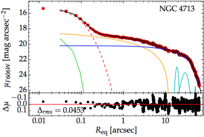
3.3.2 NGC 4713: نظير LEDA 87300
كل من صورة NGC 4713 (GSD19، شكلها 13) وملف تعريف الضوء الخاص بها (الشكل 1)، يشبهان LEDA 87300 (Baldassare et al., 2015; Graham et al., 2016, انظر الشكلين 2 و 5). من صور Hubble Space Telescope (HST)، يمكن رؤية كلتا المجرتين تحتويان على مصدر نقطي مركزي وشريط بأذرع حلزونية تنبثق من نهايات (Baldassare et al., 2017). أدى الدقة المكانية الأفضل التي يوفرها HST إلى إزالة عدم اليقين بين الشريط بالإضافة إلى مكونات الانتفاخ - والتي يشار إليها مجتمعة باسم ”البارجة” (Graham et al., 2016) — والتي كانت تؤثر سابقًا على الصور الأرضية. تبدو كلتا المجرتين الآن عديمتي الانتفاخ. وقد يكون المصدر النقطي المركزي في الصورة البصرية لـ LEDA 87300 عائدًا جزئيًا إلى نواتها المجرية النشطة (AGN)، إذ كان ساطعًا بما يكفي لتمكين Ho et al. (1997) من وسم هذه المجرة بأنها ذات «نواة انتقالية»، حيث تقع قوة [O I] المرجحة باللمعان بين نوى H II وLINERs (مناطق خطوط الانبعاث النووية منخفضة التأين). تم وضع علامة على NGC 4713 لاحقًا بواسطة Decarli et al. (2007) على أنها تحتوي على نواة LINER/H II.
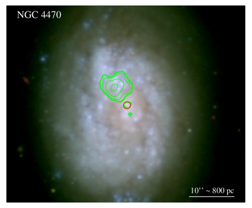
لقد قمنا بتصميم نموذج لتوزيع ضوء HST/WFC/ACS/F606W في NGC 4713 باتباع العملية الموضحة في Davis et al. (2019). استخدمنا مهمة Isofit (Ciambur, 2015)، التي يتم تشغيلها ضمن مرفق تقليل الصور وتحليلها (IRAF) حزمة 1515 15 http://ast.noao.edu/data/software ellipse لالتقاط ضوء المجرة. قمنا بعد ذلك بتصميم ذلك باستخدام برنامج Profiler (Ciambur, 2016) وبرنامج PSF التجريبي (مع حلقات جيدة التهوية) تم قياسه من نجم. وتظهر النتيجة في الشكل 1.
لقد وجدنا أن NGC 4713 يحتوي على عنقود نجمي نووي تم حله قليلاً مع نصف قطر ضوء نصف محور مكافئ يساوي 007 (5 pc)، وهو مؤشر Sérsic ، والحجم الظاهري F606W لـ 19.570.18 mag (AB mag). تصحيح 0.06 mag لانقراض المجرة، واستخدام معامل المسافة 30.85، واحد لديه القدر المطلق 11.34 mag (AB). باستخدام القدر المطلق للشمس mag، ونسبة الكتلة إلى الضوء النجمية 1616 16 بدون لون للعنقود النجمي النووي، نلاحظ أن المجرة تمتلك (امتصاص مجري) لون مصحح وهو ، و يتوافق مع (Wilkins et al., 2013, معادلتهم 2). 1.00.5، نحصل على وكتلة الثقب الأسود متوقعة. من المعادلة 1.
تم أيضًا تضمين مصدر نقطي للضوء AGN في النمذجة، لكننا لم نتمكن من الحصول على قيد مفيد. تؤدي إزالة المصدر النقطي الموضح في الشكل 1 إلى سطوع العنقود النجمي بمقدار 0.01 mag. إذا كان المصدر النقطي AGN أكثر سطوعًا من ذلك الموضح، فإن العنقود النجمي النووي سيكون أكثر خفوتًا وستكون كتلة الثقب الأسود المتوقعة أصغر. قد يفسر هذا سبب كون هذا التنبؤ لكتلة الثقب الأسود أعلى من تنبؤات الطرق الأخرى (انظر الجدول 1)، على الرغم من أن أشرطة الخطأ كبيرة. أخيرًا، نلاحظ أن 11.34 mag (AB) يتوافق مع 1717 17 AB [erg cm-2 s-1 Hz-1]). مع سطوع لـ erg s-1، وهو 17 أكثر سطوعًا من 0.5–8 keV لمعان الأشعة السينية. إذا كان المرشح IMBH لديه ، فإن ضوء العنقود النجمي النووي سوف يهيمن على سلسلة 606 nm، كما لوحظ.
يعد LEDA 87300 محل اهتمام بسبب AGN، كما يتضح من مصدر الأشعة السينية النووي، وانبعاث H الواسع، ونسب خط الانبعاث الضيقة (Baldassare et al., 2015). باستخدام عامل الفيريالي من Graham et al. (2011) يعطي كتلة الثقب الأسود فيريالي M⊙ في LEDA 87300 (Graham et al., 2016). إن عدم اليقين المتزايد بشأن كتلة الثقب الأسود، مع نطاق الخطأ 1 من إلى ، يرجع إلى أن العامل هو القيمة المتوسطة المشتقة من 30 AGN مع تعيينات الصدى، وعند استخدام هذه القيمة للتنبؤ بكتلة الثقب الأسود الفيريالي لمجرة فردية مثل LEDA 87300، بالإضافة إلى أخطاء قياس الرصد، يحتاج المرء إلى طي التشتت الجوهري بين AGN الفردي، والذي يعد تقريبًا أحد عوامل 3، القادمة من التشتت في مخطط –.
في حين أن LEDA 87300 لديه كتلة نجمية قدرها (دقيقة لعامل 2) وسرعة تشتت نجمية مقدرة بـ km s-1 (Graham et al., 2016, انظر قسمهم 3.2)، يحتوي NGC 4713 على كتلة نجمية تبلغ (GSD19) وتشتت سرعة مُقاس km s-1 (Ho et al., 2009). سنسعى للحصول على أطياف بصرية لـ NGC 4713 لاكتشاف خط H واسع. من هذا، سنكون قادرين على استخلاص الكتلة الفيريالية للثقب الأسود في NGC 4713 المرتبط بمصدر الأشعة السينية النووي ونواة LINER/H II. كما هو مذكور في GSD19، تم اكتشاف فوتونات الأشعة السينية من مصدر النقطة المركزية في صورة CXO/ACIS-S المؤرشفة لـ NGC 4713 في جميع النطاقات القياسية الثلاثة (الناعمة، 0.3-1 keV؛ المتوسطة، 1-2 keV؛ 2-7 keV)، متوافق مع طيف قانون القوة بدلاً من طيف الجسم الأسود البحت.
3.3.3 NGC 4470: مصادر نقطية مزدوجة في الأشعة السينية 170 pc متباعدة
NGC 4470 (ويعرف أيضًا باسم NGC 4610) هي مجرة حلزونية وجهًا لوجه (الشكل 2). الكتالوج المرجعي لتوزيعات الطاقة الطيفي المجرية (RCتوزيع الطاقة الطيفي: Chilingarian et al., 2017)1818 18 http://rcsed.sai.msu.ru/catalog يضع NGC 4470 في منطقة H II للخط الضيق [O III]/H مقابل المخطط التشخيصي [N II]/H. ومع ذلك، أصبح من الواضح بشكل متزايد أنه يمكن تفويت AGN الخافت أو ”المخفي” عند استخدام المخططات التشخيصية BPT (Baldwin et al., 1981) (مثلا، Zezas et al., 2005; Sartori et al., 2015; Lamperti et al., 2017; Cann et al., 2019, 2021). ربما لا يكون هذا مفاجئًا في المجرات منخفضة الكتلة، لأنه ما لم تكن نسبة إدنغتون عالية، فإن إشارة AGN الموجودة في الفتحة المركزية/الألياف/الإسباكسيل سوف تُغرق بواسطة ضوء نجوم المجرة في هذه الأنظمة ذات كتل الثقب الأسود المنخفضة (Mezcua and Domínguez Sánchez, 2020). على الرغم من أنه من خلال التركيز على عينة قريبة ( Mpc) من المجرات القزمة، فقد وجد Moran et al. (2014) مجرات 28 يهيمن عليها خط انبعاث ضيق (النوع 2) AGN، وبافتراض وجود [O III] - إلى عامل تصحيح اللمعان البوليمري لـ 1000 أبلغوا عن الحد الأدنى لكتلة الثقب الأسود من - M⊙ لعينتهم.
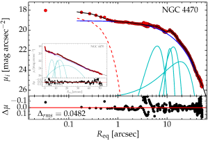
يُبلغ RCتوزيع الطاقة الطيفي عن تشتت سرعة km s-1 لـ NGC 4470 (SDSS J122937.77+074927.1). وهذا أقل من قيمة km s-1 التي تم استخدامها في GSD19، وينتج عنه كتلة الثقب الأسود أقل (–) تبلغ . أصبحت هذه الكتلة الآن متسقة (شكوك متداخلة) مع القيمة المشتقة من (–) لـ (GSD19).
نظرًا لأن بيانات CXO الموجودة مسبقًا لـ NGC 4470 تم إزاحتها (عمدًا) 1919 19 كان الهدف الأساسي لـ CXO هو NGC 4472 وهالته. من نقطة تصويب التلسكوب، فقد تطلب الأمر إعادة تحليل دقيق. ستة من عمليات رصد ACIS السبعة الماضية (الممتدة من 2010 إلى 2019) لم تلتقط سوى المنطقة النووية لـ NGC 4470 على الرقائق الخارجية، حيث كانت PSF للأسف واسعة جدًا ومشوهة للحصول على قياس تدفق موثوق. ومع ذلك، فإن تعريض 20 ks من 2010 (CXO Obs. ID 12978)، وجه 4 على بعد دقائق قوسية نحو العنقود الكروي RZ 2109 حول NGC 4472، أثبت نجاحه، وقمنا بإعادة تحليل هذه البيانات للإبلاغ عن المصدر النقطي المركزي في الأشعة السينية لـ NGC 4470 (الجدول 2). يتطابق المركز البصري للمجرة، كما هو موضح بواسطة NED، مع ميزة حمراء لا يمكننا حلها في صورة NGVS مع رؤية 07. يعرض الشكل 2 مصدر نقطي في الأشعة السينية المتداخل في هذا الموقع المركزي. أثبت كل من مصدر الأشعة السينية هذا والمصدر الأكثر سطوعًا في الجنوب أنه خافت جدًا بحيث لا يمكن الحصول على طيف.
يؤدي تركيب مصدر نقطي لبيانات النطاق CFHT/NGVS/، انظر الشكل 3، إلى الحصول على لمعان للعنقود النجمي ، استنادًا إلى . مع نسبة الكتلة إلى الضوء لنطاق البالغة 0.700.04، استنادًا إلى لون مجرة يساوي 0.690.03 واستخدام النجم المعتمد على اللون نسب الكتلة إلى الضوء من Roediger and Courteau (2015)، والكتلة النجمية المقابلة لالعنقود النجمي النووي هي ، وكتلة الثقب الأسود المتوقعة هي (المعادلة 1). ومع ذلك، قد يكون هذا الحد الأعلى بسبب التلوث بواسطة ضوء AGN مما يزيد من الضوء الذي خصصناه للعنقود النجمي. وهذا يعني أننا أخطأنا فعليًا في جانب الحذر ولم نقم بالتنبؤ بكتلة الثقب الأسود في محاولة للتنبؤ/العثور على IMBHs. كما نمذجنا مكوّنات المجرة في صور NGVS في نطاقي و، وقسنا للمكوّن النووي لونًا يساوي 0.57. أدى ذلك إلى تقدير أصغر للكتلة النجمية 23% للعنقود النجمي، وتقدير أصغر 50% لكتلة الثقب الأسود. على الرغم من أن هذا اللون للمكون النووي قد يتأثر بضوء AGN ولذلك فقد أخطأنا في جانب الحذر واعتمدنا القياس السابق.
يوجد مصدر آخر للأشعة السينية بنفس السطوع 21 (170 pc) في الجنوب، ومصدر أكثر اتساعًا (1039) erg s-1) يقع 6 شمال شرق الموقع النووي ويرتبط بوجود فائض من النجوم الزرقاء وتشكّل النجوم المستمر. استنادًا إلى موقع مصدر الأشعة السينية الثاني، عند 170 pc من النواة، قد يكون نجمي الكتلة ULX، ولكن من المحتمل أن يكون أكثر إثارة للاهتمام من ذلك إذا كان يمثل نصف نظام IMBH المزدوج. إن التعريض الأطول لـ CXO مع نقطة الهدف على NGC 4470 سيمكن من الإجابة على هذا السؤال.
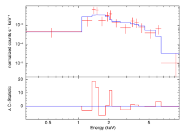
3.4 المجرات مع بيانات الأشعة السينية الجديدة
3.4.1 NGC 4197: IMBH مشرق على الأرجح
كما هو الحال مع NGC 4178 أعلاه، يظهر NGC 4197 في كتالوج المجرات المسطحة لـ Karachentsev et al. (1993) نظرًا لاتجاه قرصه إلى حد ما (الميل = 79 درجات) بالنسبة إلى خط البصر. أبلغت Dahari (1985) عن انبعاث ضعيف H قادم من نواة هذه المجرة.
كجزء من مسح الأشعة السينية في عنقود العذراء، رُصدت NGC 4197 بواسطة CXO لـ 8 ks، في 2017 يوليو 26 (لمزيد من التفاصيل، انظر Soria et al., 2021). لقد وجدنا مصدرًا قويًا للأشعة السينية يشبه النقطة (الشكل 4) يقع في RA 14m 38s.59، Dec 48′ 21′′.2 [J2000.0]. بالنظر إلى التشتت في المواضع التي أبلغ عنها NED، فإن هذا يتوافق مع موضع النواة الضوئية: إنه 07 (90 pc) بعيدًا عن النطاق موضع SDSS.
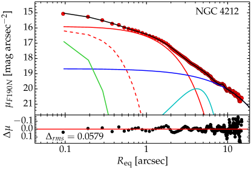
لقد استخرجنا طيفًا داخل منطقة المصدر الدائرية 2 (انظر الشكل 5)، مع الخلفية المحلية المستخرجة من الحلقة بين نصف القطر 3 و9. نقوم بعد ذلك بتركيب الطيف في xspec، باستخدام إحصائيات Cash. نجد أن الطيف (الشكل 5) موصوف جيدًا (إحصائية C لـ 62.7 لدرجات الحرية 50) من خلال قانون القوة مع مؤشر الفوتون وكثافة عمود 2020 20 نشير بكلمة ”جوهرية” إلى الكثافة العددية المتداخلة خارج مجرتنا، وبشكل أساسي داخل المجرة الخارجية. الجوهرية cm-2. التدفق غير الممتص 0.5–7 keV هو F erg cm-2 s-1. بعد تصحيح الامتصاص وفقًا لنموذج قانون القوة الأفضل لدينا، نشتق اللمعان erg s-1 على المسافة المفترضة 26.4 Mpc لهذه المجرة. إذا كان طيف الأشعة السينية يتوافق مع الحالة المنخفضة/الصلبة لـ IMBH، فإن كتلة الثقب الأسود ستكون بضع كتل شمسية من .
لقد حاولنا أيضًا ملاءمة الطيف مع نموذج قرص الجسم الأسود. نحن نستبعد ذروة درجة حرارة القرص keV عند مستويات الثقة 90%. وتظل النماذج ذات درجات حرارة القرص الأعلى من ذلك مقبولة (وتكاد تكون، عند keV، مطابقة لنموذج قانون القوة) لأن ذروة الانبعاث تتحرك بالقرب من نطاق Chandra أو خارجه، ونحن نرى فقط القسم الذي يشبه (قانون القوة) من قرص الجسم الأسود أسفل ذروته. تصل درجات حرارة القرص إلى 2 keV ويمكن رؤيتها أحيانًا في ULXs ذات الكتلة النجمية مع قرص فائق الحرج (قرص رفيع). وبالتالي، لا يمكننا أن نستبعد أن المصدر هو 1040 erg s-1 نجمي الكتلة ULX (مثلا، Bachetti et al., 2014) يقع بالضبط في الموقع النووي، ولكن أبسط تفسير يتوافق مع البيانات هو أنه الثقب الأسود النووي لهذه المجرة.
يمكن التعبير عن لمعان إدنغتون كـ erg s-1. بالنظر إلى أن NGC 4197 يحتوي على erg s-1، وبافتراض وجود بلازما هيدروجين مع (المقطع العرضي للتشتت Thomson)، فإن هذا اللمعان يساوي 102 M⊙ ثقب أسود يتراكم عند حد إدنغتون، أو 10 M⊙ ثقب أسود يراكم مادته بعشرة أمثال حد إدنغتون. بدلاً من ذلك، نظرًا لأننا توقعنا لـ NGC 4197 (الجدول 1)، فإن لمعان إدنغتون لمثل هذا الثقب الأسود هو erg s-1. إن التعبير عن نسبة إدنغتون كـ ، باستخدام ، يعني أن نسبة إدنغتون هي 0.0018، أو 0.18%.
3.4.2 NGC 4212: مصدران نقطيان في الأشعة السينية تفصل بينهما 240 pc
أفاد Decarli et al. (2007) أن NGC 4212 (ويعرف أيضًا باسم NGC 4208) هي مجرة مركبة LINER/H II. بحث Filho et al. (2002, انظر جدولهم 1) عن مصدر نقطي راديوي في هذه المجرة، لكنه لم يكتشفه، والذي أشار Sérsic (1973) إلى أنه يحتوي على نواة غير متبلورة غريبة، على الأرجح بسبب الغبار. تشير Scarlata et al. (2004) إلى امتصاص الغبار تقريبًا حتى منتصف صورة النطاق HST/STIS ، لكنها تظهر سطوعًا ملحوظًا داخل القلب وهو ما يتضح أيضًا في صورة NICMOS/F190N من برنامج الرصد HST 11080 (P.I.: D. Calzetti).
NGC 4212 هي المجرة الوحيدة في قائمتنا للمجرات الحلزونية 14 التي لها كتلة ثقب أسود متوقعة أكبر من 105 M⊙، ويبلغ وزنها M⊙. ومع ذلك، فهو مثير للاهتمام بشكل خاص ويستحق التضمين لأننا اكتشفنا أن هناك مصدرين خافتين من CXO بالقرب من النواة، مع إزاحة أحدها بمقدار أقل بقليل من 1 من النواة الضوئية. وبالنظر إلى عدم اليقين الموضعي عند هذه المستويات الخافتة، وإلى وجود ممر غبار يُرجح أنه يزيح المركز البصري شمالًا، فقد يكون هذا المصدر النقطي في الأشعة السينية متوافقًا مع النواة البصرية.2121 21 مصدر الأشعة السينية خافت جدًا بحيث لا يمكن تحديد ما إذا كان يتم امتصاصه بشكل معتدل أم لا. أما المصدر النقطي الثاني القريب في الأشعة السينية فيقع على بعد 29 (240 pc). يمكن حل الفصل بينهما باستخدام CXO (انظر الشكل 6). كما هو الحال مع NGC 4470، قد يكون مصدر الأشعة السينية البعيد عن المركز ثنائية أشعة سينية XRB.
من المغري التحقق من صورة HST المؤرشفة لهذه المجرة من أجل الحصول على قدر وكتلة عنقودها النجمي النووي. ومع ذلك، مثل المجرة LINER/H II NGC 4713، علينا أن نضع في اعتبارنا أن هذه أيضًا مجرة LINER/H II، وعلى هذا النحو، فإن بعض الضوء النووي الزائد سيكون منبعثًا من انبعاثًا بصريًا صادرًا من AGN غير الحراري التي لم يتم حلها، كما هو الحال، على سبيل المثال، في المجرة LINER NGC 4486 (Ferrarese et al., 2006) والمجرة Seyfert 1.5 NGC 4151 (Onken et al., 2014, انظر الشكل 4). وبنمذجة صورة HST/NICMOS/F190N، نجد أن المجرة تتلاءم جيدًا مع مجموعة نجوم نووية بقدر ظاهري قدره 17.640.75 (AB mag) ونصف قطر نصف ضوء 023 (19 pc) (انظر الشكل 7). بالنسبة إلى و، يُترجم هذا إلى كتلة ، والتي يمكن من خلالها التنبؤ بكتلة الثقب الأسود البالغة ، مما يدعم التوقعات من كتلتها النجمية وزاوية ميل الذراع الحلزونية (انظر الجدول 1). كما هو الحال مع AGN في NGC 4713، لم نتمكن من توفير قيد مفيد.
3.4.3 NGC 4298
يعرض الشكل 8 الصورة الضوئية وصورة الأشعة السينية لـ NGC 4298، في حين يقدم الشكل 9 تحليلًا لضوء المجرة كما يظهر في الصورة HST/WFC3/IR F160W من رصد HST برنامج 14913 (P.I.: M. Mutchler).
قد تكون النوى الضوئية/القريبة من الأشعة تحت الحمراء في صور HST ثقوبًا سوداء نشطة و/أو مجموعات نجمية. أظهر Côté et al. (2006) أن العناقيد النجمية النووية في المجرات في عنقود العذراء تم حلها قليلاً باستخدام HST/ACS، مما يتيح للمرء التمييز بين المصادر النقطية والمجموعات النجمية الممتدة مكانيًا. في حين أن الدقة المكانية HST أفضل في الأشعة فوق البنفسجية والبصرية مما هي عليه في الأشعة تحت الحمراء القريبة — ببساطة بسبب كيفية قياس حد الحيود خطيًا مع الطول الموجي — فإن NGC 4298 مغبر جدًا بحيث لا يمكن رؤية النواة عند الأطوال الموجية للأشعة فوق البنفسجية/البصرية. ومع ذلك، من الواضح أن NGC 4298 منواة عند 1.6 m (وأيضًا 1.9 m)، ويكشف الشكل 9 أنه باستخدام Profiler (Ciambur, 2016)، يمكن تقريب نواتها جيدًا بواسطة دالة Sérsic (مطوية مع PSF الخاص بـ HST) بالإضافة إلى اكتشاف مبدئي لمصدر نقطي خافت. تحتوي نواة Sérsic على نصف قطر نصف ضوئي يساوي 020 (15 pc) وقدر AB ظاهري (مطلق) قدره 18.10.3 mag (12.90.5 mag) في نطاق F160W2222 22 يؤدي إجراء التحلل بدون المصدر النقطي إلى الحصول على قدر ظاهري للحشد النجمي 17.90.2 mag.. المصدر النقطي المحتمل، الذي يمثل AGN المفترض، له قدر ظاهري (مطلق) قدره 20.40.3 mag (10.60.5 mag).
باستخدام القدر المطلق للشمس mag (AB) (Willmer, 2018) و، نحصل على كتلة للعنقود النجمي النووي وبالتالي كتلة ثقب أسود متوقعة تبلغ باستخدام المعادلات 1 و2.
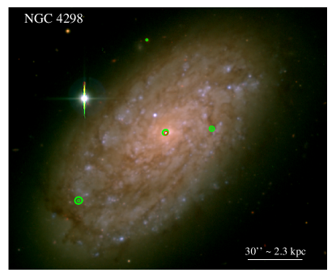
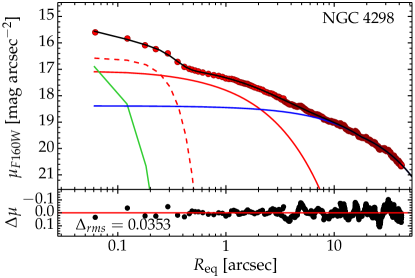
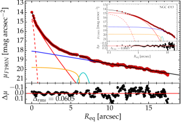
3.4.4 NGC 4313: مصدران نقطيان في الأشعة السينية تفصل بينهما 590 pc
أفاد Decarli et al. (2007) أن NGC 4313 هي مجرة Seyfert/LINER. من بيانات CXO الخاصة بنا، أبلغنا عن اكتشاف مصدر أشعة سينية خافت على ما يبدو، يشبه النقطة، ويتزامن مع 2323 23 كما هو الحال مع NGC 4212، من المحتمل أن يكون ممر الغبار قد أدى إلى إزاحة النواة الضوئية لـ NGC 4313. مع النواة الضوئية (الشكل 10). نظرًا لاتجاه المجرة المائل نسبيًا، فقد يكون لديها امتصاص جوهري عالي لفوتونات الأشعة السينية. يوجد فوتون واحد فقط من فوتونات الأشعة السينية الستة في النطاق 0.3-1 keV، و3 في النطاق 1-2 keV، و2 في النطاق 2-10 keV. الإزاحة بواسطة 84 (590 pc) هو مصدر نقطي ثانٍ للأشعة السينية، أكثر خفوتًا قليلاً.
لقد تمكنا من فحص صورة HST/NICMOS/F190N من برنامج الرصد HST: 11080 (P.I.: D. Calzetti) وتفكيك ضوء المجرة، الذي يبدو أنه يتكون من انتفاخ، بالإضافة إلى قرص كبير الحجم مع شريط ضعيف ونهايات قضيبية، وعنقود نجمي نووي مع (AB mag)، ومؤشر Sérsic ونصف قطر نصف الضوء الفعال pc (الشكل 11). للحصول على كتلة هذا المكون النووي، استخدمنا mag (AB) (Willmer, 2018)، وتم تصحيحه من أجل 0.011 mag من انقراض المجرة، وافترض 2424 24 كمرجع، وجد Barth et al. (2009) قيمة 0.47 لنواة المجرة Sd من النوع المتأخر NGC 3621. . ينتج عن هذا كتلة نجمية للمكون النووي قدرها ، وقد تكون هذه القيمة أقل من الواقع نظرًا لأنه سيكون هناك بعض الانقراض الداخلي في 1.9 m ناجمًا من داخل المجرة المائلة NGC 4313.، مما يؤدي إلى تنبؤ بكتلة الثقب الأسود أعلى من المتوقع لـ .
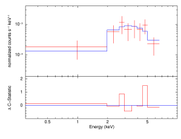
3.4.5 NGC 4330: erg s-1
NGC 4330 تشهد تجريد ضغط الكبش لكل من غاز HI المحايد (Chung et al., 2007; Abramson et al., 2011) والغاز المتأين (Vollmer et al., 2012; Fossati et al., 2018).
يشير اتجاه قرصه من الحافة إلى خط البصر، إلى جانب الكشف عن مصدر الأشعة السينية النووية، إلى أنه قد يحتوي على AGN مشرق بشكل جوهري نظرًا لأن بعض الأشعة السينية قد اخترقت طريقها عبر وخارج مستوى القرص (انظر الشكل 12). للمقارنة، NGC 4197 وNGC 4313 (الأشكال 4 و10) وNGC 4178 (GSD19) تمثل أمثلة أخرى للمجرات الحلزونية ذات الأقراص المرئية من حافتها جزئيًا التي اكتشفنا فيها نوويًا. مصدر نقطي في الأشعة السينية.
في NGC 4330، مصدر CXO هو 2 من المركز البصري الذي أبلغ عنه NED. ومع ذلك، كما يوضح الشكل 12، فإن موقع شريط الغبار، إلى جانب الشكل الموزي الطفيف للمجرة، قد يؤدي إلى عدم توافق المركز البصرية المشتقة من خطوط تساوي السطوع الخارجية مع النواة الحقيقية للمجرة، والتي يمكن بدلاً من ذلك تحديدها من خلال موقع مصدر CXO. من بين المجرات التي من المتوقع أن تمتلك IMBH مركزيًا، تمتلك NGC 4330 ثاني ألمع مصدر نقطي مركزي في الأشعة السينية، بعد NGC 4197 (انظر الجدول 2).
كما هو الحال مع NGC 4197، تمكنا من الحصول على طيف أشعة سينية ذو معنى من مصدر النقطة المركزية في NGC 4330 (انظر الشكل 13). كان طيف الخلفية المطروحة مناسبًا في xspec، باستخدام إحصائيات Cash، وتم وصفه جيدًا بواسطة قانون القوة مع مؤشر الفوتون (الثابت) وكثافة عمود جوهرية عالية، cm-2. التدفق غير الممتص F erg cm-2 s-1. على مسافة 19.30 Mpc، هذا يتوافق مع لمعان erg s-1. باستقراء قانون القوة، لدينا erg s-1. أفاد Lehmer et al. (2010) أن لمعان الأشعة السينية النووية erg s-1 يمكن أن يعزى بثقة إلى انبعاث AGN، مما يجعل NGC 4330، إلى جانب NGC 4197 () erg s-1)، المرشحين الأقوياء لـ IMBHs.
3.4.6 NGC 4405 & NGC 4413
يحتوي كل من NGC 4405 (الشكل 14) وNGC 4413 (المعروف أيضًا باسم NGC 4407، انظر الشكل 14) على أقراص وجهية إلى حد ما. لقد اكتشفنا مصدرًا مركزيًا للأشعة السينية في كليهما، على الرغم من أن أيًا منهما ليس قويًا بشكل خاص. يتم توفير التدفقات واللمعان في الجدول 2.
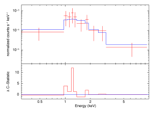
3.4.7 NGC 4492; مصدران نقطيان في الأشعة السينية تفصل بينهما 550 pc
NGC 4492 هي إضافة جديدة إلى العينة في GSD19، وتحتوي على بيانات CXO مفيدة من الدورة 8 (4.89 ks، الاقتراح 08700652، P.I.: S.Mathur) والدورة 15 (29.68 ks، الاقتراح 15400260، P.I.: T.Maccarone)، وIMBH المتوقع في مركزها استنادًا إلى لمعانها النجمي (انظر الجدول 1). صنف Decarli et al. (2007) هذه المجرة على أنها لا تحتوي على خطوط انبعاث (H ولا [N II]) بناءً على أطياف 2 من مطياف الأجسام الخافتة في بولونيا (BFOSC) المرفق بـ تلسكوب لويانو 1.5 m. ومع ذلك، نجد أنها تمتلك مصدرًا نقطيًا مركزيًا للأشعة السينية، ومصدرًا نقطيًا ثانيًا للأشعة السينية 550 pc إلى الشرق من مصدر المصدر النووي (الشكل 15).
جمعنا تعريضي CXO المذكورين أعلاه (باستخدام مهمة ciao المسماة specextract مع الخيار ‘combine_spectra = yes’) للحصول على طيف المصدر النووي الخافت في مركز NGC 4492. ويبين الشكل 16 توزيع طاقة طيفيًا من نوع قانون القوة، مع ، لا منحنى إشعاع جسم أسود لقرص تراكم ساخن. بعد تركيب هذا الطيف المدمج، احتفظنا بثابت و (انظر الجدول 2)، وتركنا معلمة التطبيع مجانية، وقمنا بتركيب الطيفين الفرديين في xspec. وترد النتائج في الجدول 2.
3.4.8 NGC 4498
تحتوي NGC 4498 على بضع عقد من تشكّل النجوم على امتداد محورها، كما يظهر في برنامج رصد HST 5446 (P.I.: G. D. Illingworth، WFPC2/F606W). كما هو مذكور في القسم 2، أبلغت Georgiev et al. (2016) عن كتلة نجمية للحشد النجمي المركزي باستخدام نسبة الكتلة إلى الضوء في النطاق البالغة . وبالارتباط بهذا، أبلغنا عن اكتشاف مصدر نقطي للأشعة السينية (الشكل 15).
3.4.9 NGC 4519
على المستوى الكلي، وكما في NGC 4713، NGC 4519 (الشكل 15) يشبه إلى حد ما المجرة الحلزونية القضيبية عديمة الانتفاخ LEDA 87300 (Baldassare et al., 2017). مركزيًا، يحتوي NGC 4519 على عقد من تشكّل النجوم بالقرب من نواته، وقد يكون تحديد عنقود نجمي نووي واحد مشكلة نظرًا لوجود العديد من المرشحين الذين شوهدوا في صور HST من برنامج الرصد 9042 (P.I.: S.J.Smartt، F814W) وبرنامج الرصد. 10829 (الباحث الرئيس: P.Martini، F606W).
3.4.10 NGC 4607: erg s-1
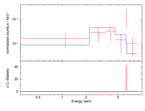
كما هو الحال مع المجرة المرئية من حافتها NGC 4330، تتم محاذاة NGC 4607 من الحافة إلى خط رؤيتنا. نظرًا لكثافة عمود خط البصر العالية المتوقعة للهيدروجين المحايد عبر قرص هذه المجرة، فإن اكتشافنا لمصدر أشعة سينية مركزي (الشكل 15) يشير إلى أنه يجب أن يكون ساطعًا بشكل جوهري ويحتوي على فوتونات الأشعة السينية في نطاقات الطاقة الأعلى. في حين أن مصدر الأشعة السينية المركزي لا يحتوي إلا على عدد قليل من العدّات، إلا أن جميعها لديها طاقات أعلى من 1 keV، مما يشير إلى أن امتصاص NH,intrin في NGC 4607 مرتفع جدًا. موقع المصدر لا يناسب XRB في ضواحي هذه المجرة بسبب الصدفة المطلوبة لاصطفافه مع خط رؤيتنا لمركز هذه المجرة. علاوة على ذلك، أفاد Decarli et al. (2007) أن NGC 4607 هي LINER معروفة.
قمنا ببناء طيف الأشعة السينية باستخدام مهمة ciao specextract، قبل إعادة تجميع الأطياف إلى عدد 1 لكل حاوية قبل تحليل إحصائيات Cash في xspec باستخدام منحدر قانون القوة الثابت و NH,intrin. يظهر الطيف في الشكل 17. على الرغم من أنه رديء، إلا أننا نود أن نشير إلى تجميع العدّات حول 6.4 keV. على الرغم من أن ذلك قد يكون بسبب عشوائية إحصائيات العدّات الصغيرة، إلا أنه على الأرجح يرجع إلى خط مضان قوي Fe Kα (و نتوء انعكاس كومبتون فوق 10 keV) من مادة باردة شبه محايدة (القرص أو الحيد أو السحب) المشععة بواسطة مصدر الأشعة السينية النووية (Pounds et al., 1990). نأمل في الحصول على رصد أطول Chandra، أو NuSTAR (Harrison et al., 2013) جديدة في المستقبل، مما يتيح أيضًا قيدًا أفضل على منحدر توزيع الطاقة الطيفي للأشعة السينية.
4 احتمالات كتل الثقب الأسود من بيانات الأشعة السينية
4.1 أطياف الأشعة السينية
التعريضات الأطول لـ CXO، بالإضافة إلى التعريضات NuSTAR وXMM-Newton — إذا لم يواجه PSF الأكبر مشكلات ”الازدحام” وكان عدد المصادر مرتفعًا بما يكفي للتغلب على مستوى الخلفية الأكبر — سيكون مفيدًا. وهذا من شأنه تمكين نمذجة توزيع الطاقة الطيفي للأشعة السينية لفوتونات الأشعة السينية عالية الطاقة القادمة من أقراص التراكم الساخنة، و/أو تشتت كومبتون في التدفق الساخن، أو انبعاث كومبتون العكسي من القاعدة النفاثة التي تعمل بالطاقة المغناطيسية أو الإكليل فوق القرص، و/أو انبعاث الأشعة السينية السنكروترونية المتعلقة بالجزء غير المحجوب من النفاث الداخلي (مثلا، Pringle and Rees, 1972; Narayan and Yi, 1995; Tzanavaris and Georgantopoulos, 2007). سيكون التعريض الأطول للأشعة السينية ذا قيمة في إثبات وجود AGN مزدوج محتمل، من خلال أطياف عالية الجودة، على غرار زوج الأشعة السينية في NGC 6240 (Komossa et al., 2003; Fabbiano et al., 2020).
على الرغم من أنه ليس من الممكن بعد باستخدام بيانات الأشعة السينية المتاحة التمييز بشكل نهائي بين الكتلة النجمية وIMBH/AGN، فإننا نحدد دليلين طيفيين محتملين يمكن متابعتهما عبر عمليات رصد أعمق CXO و/أو مع الجيل التالي المقترح من أقمار الأشعة السينية بما في ذلك Athena (Nandra et al., 2013; Rau et al., 2013)، AXIS (Mushotzky, 2018)، وLynx (Gaskin et al., 2019).
التمييز الأول الذي نتناوله هو بين الثقوب السوداء ذات الكتلة النجمية وIMBHs. تتنبأ نماذج حالة التراكم القياسية بأن IMBH أو AGN عند سطوع 1038–1039 erg-1 ينبغي أن يكون له طيف قانون القوة غير المنقطع في نطاق 0.5-10 keV (الحالة المنخفضة/الصلبة)، في حين أن مصدر الكتلة النجمية (خاصة الثقب الأسود ذو الكتلة النجمية) يجب أن يكون له طيف قرصي-جسم أسود مع درجة حرارة 0.5–1 keV (حالة عالية/ناعمة) وتطبيع يتوافق مع نصف القطر المميز 50–100 km. فعلى سبيل المثال، كان هذا هو الحجة الرئيسة لمصلحة تعريف المصدر النووي في M33 (وهو أقرب إلينا من عنقود العذراء بمقدار 20 مرة) بوصفه ثقبًا أسود نجمي الكتلة (Foschini et al., 2004). ومع ذلك، هناك محاذير إضافية في هذا التصنيف البسيط. في حين أن الثقوب السوداء ذات الكتلة النجمية العابرة بالقرب من لمعان إدنغتون يمكن أن تظهر أطياف قانون القوة الصلبة في الحالة المتوسطة الصلبة، فإن هذه المراحل قصيرة العمر، وعادةً ما تستمر لبضعة أيام فقط، وبالتالي فمن غير المرجح أن تكتشف رصد Chandra مصدرًا في مثل هذه الحالة (مثلا، Homan and Belloni, 2005; Motta et al., 2009). علاوة على ذلك، يمكن أيضًا لثنائيات الأشعة السينية للنجوم النيوترونية (النجوم النابضة للأشعة السينية) أن تصل إلى هذه اللمعان أو تتجاوزها، وبنسبة الإشارة إلى الضوضاء معتدلة، يتم أيضًا تقريب الطيف المتكامل لتلك المصادر جيدًا بواسطة قانون القوة الصارم، في نطاقات Chandra أو XMM-Newton الضيقة نسبيًا (Ferrigno et al., 2009; Farinelli et al., 2016; Pintore et al., 2017). لا ينطبق معيار نسبة الأشعة السينية إلى التدفق البصري أيضًا على المصادر النووية، لأنه في معظم الحالات يمكننا فقط قياس السطوع البصري للمجموعة النجمية المضيفة، وليس الانبعاث البصري المباشر من القرص أو النجم المانح لمصدر الأشعة السينية. كدليل على صعوبة مهمة المجرات في العنقود العذراء، يحتاج المرء فقط إلى قراءة المناقشة حول تحديد الثقب الأسود النووي في المجرة M83 الأقرب بكثير بواسطة Russell et al. (2020).
التمييز الثاني، على الرغم من أنه من المحتمل أن يكون مصطنعًا تم إنشاؤه نتيجة لانحياز الاختيار الرصدي، يقع بين IMBHs (102–105 M⊙) وSMBHs في نطاق الكتلة 106–107 M⊙. في نطاق لمعان الأشعة السينية 1038–1039 erg s-1، كلاهما IMBH و”عادي” سيتم تجميع SMBH، على سبيل المثال ، معًا في الحالة المنخفضة/الصعبة، وفقًا لتصنيف الحالة التقليدي. غير أن دراسات أحدث للثقوب السوداء المتراكمة في هذا النظام منخفض اللمعان تُظهر تغيرات فيزيائية إضافية بوصفها دالة في نسبة إدنغتون ( للثقوب السوداء النجمية الكتلة). تحدث أصعب الأطياف () عند نسبة إدنغتون إلى ؛ تحت هذه العتبة، يخفف طيف الأشعة السينية تدريجيًا مرة أخرى، ليصل إلى قيمة مقاربة عند نسبة إدنغتون إلى وأقل من (Sobolewska et al., 2011; Armas Padilla et al., 2013; Plotkin et al., 2013; Yang et al., 2015; Plotkin et al., 2017). على سبيل المثال، SMBH مع حول عدد قليل من و عدد قليل من erg s-1 سيكون له نسبة إدنغتون 10-5 (بافتراض تصحيح بولومتري : Lusso et al., 2012). بدلاً من ذلك، قد يكون لـ IMBH عند نفس لمعان الأشعة السينية نسبة إدنغتون بقيمة 10-3. وبالتالي، يجب أن يكون للنجم IMBH ذو الحالة المنخفضة طيف أكثر صلابة إلى حد ما من الطيف النووي الأكثر ضخامة BH، عند نفس لمعان الأشعة السينية. نقترح أنه بالنسبة لنسبة الإشارة إلى الضوضاء العالية بما فيه الكفاية في أطياف الأشعة السينية، سيكون من الممكن التمييز بين الحالتين: إن لم يكن بالنسبة للمصادر الفردية، على الأقل بناءً على التوزيع الإحصائي لمؤشرات الفوتون المجهزة.
4.2 لمعان الأشعة السينية: المستوى الأساسي لنشاط الثقب الأسود
إن «المستوى الأساسي لنشاط الثقوب السوداء» للثقوب السوداء ذات معدلات التراكم المنخفضة (Merloni et al., 2003; Falcke et al., 2004; Fischer et al., 2020) يشمل ثنائيات الأشعة السينية ذات الثقوب السوداء النجمية الكتلة وAGN، ويتيح تقدير كتلة الثقب الأسود اعتمادًا على الانبعاث الراديوي النووي، erg s-1 (عند 5 GHz)، وعلى لمعان الأشعة السينية النووي غير الممتص، erg s-1 (عند 0.5-10 keV). ومع ذلك، يلاحظ أن بعض AGN لامعة في الأشعة السينية لكنها صامتة راديويًا (Radcliffe et al., 2021). أورد Plotkin et al. (2012) الارتباط الآتي للأنظمة النشطة راديويًا:
| (5) |
. ومن أجل و erg s-1 نحصل على لمعان راديوي متوقع (5 GHz) قدره erg s-1، بينما من أجل و erg s-1 نحصل على لمعان راديوي متوقع (5 GHz) قدره erg s-1. وعلى مسافة وسطية قدرها 17 Mpc، يقابل ذلك 0.04 mJy و0.18 Jy، على التوالي. وباستخدام الارتباط من Gültekin et al. (2019)، المبني على لمعان 2-10 keV2525 25 من أجل ، .، تصبح هذه التقديرات 0.03 mJy و0.08 Jy. وهذه القيمة الأخيرة أصغر بمقدار 7 مرة من تقدير 0.54 Jy المستمد من الارتباط الأقدم لدى Gültekin et al. (2009).
كمرجع، بحث Strader et al. (2012) عن انبعاث راديوي من IMBHs المحتمل في ثلاث مجموعات كروية لكنه لم يجد مصدرًا يصل إلى مستويات الضوضاء ذات جذر متوسط التربيع لـ 1.5–2.1 Jy Beam-1 مع المصفوفة الكبيرة جدًا (VLA). أبلغت Tremou et al. (2018) أيضًا عن عدم اكتشاف IMBHs مع M⊙ (3) في المجموعات الكروية، مع مجموعة صور VLA من 24 GCs ذات حساسية لجذر متوسط تربيع تبلغ 0.65 Jyشعاع -1، ومصفوفة صور مدمجة للتلسكوب الأسترالي (ATCA) لمجموعة صور 14 GCs لها حساسية لجذر متوسط التربيع تبلغ 1.42 Jy شعاع-1. ومع ذلك، سيكون من المثير للاهتمام استكشاف العنقود الكروي Andromeda للمجرة ذو المعادن المنخفضة جدًا RBC EXT8 (Larsen et al., 2020) — المأخوذ من كتالوج بولونيا المنقح (Galleti et al., 2004) — والذي ربما شكل نجومًا أكثر ضخامة من المعتاد، وربما شكل IMBH (Mapelli et al., 2021)، راجع أيضًا Wan et al. (2020) فيما يتعلق بـ Phoenix GC والدفق.
وبعكس اللباقة، يمكن للمرء استخدام لمعان الأشعة السينية والأرصاد الراديوية للتنبؤ بكتلة الثقب الأسود، أو على الأقل الحصول على حد أعلى إذا تم العثور على حدود عليا فقط للسطوع الراديوي للمصادر النووية المدمجة المحتملة. قمنا بمسح الأدبيات بحثًا عن بيانات الراديو من عينتنا، ووجدنا ملاحظة واحدة. مع الدقة المكانية 015، أبلغت Nagar et al. (2005) عن حد أعلى للتدفق النووي في NGC 4713 من 1.10 mJy في 15 GHz (2 cm)، أو لـ Mpc. وهذا يعادل . ومع ذلك، فإننا لا نعرف ميل الراديو توزيع الطاقة الطيفي المطلوب للحصول على اللمعان عند 5 GHz. علاوة على ذلك، نظرًا لتدفق الأشعة السينية المتاح وكتلة الثقب الأسود المتوقعة في NGC 4713، يتطلب المرء قيودًا على التدفق الراديوي والتي تكون أكثر إحكامًا بثلاثة أوامر، عند حوالي 1 Jy. إضافة إلى التحدي، أبلغ Nagar et al. (2005) عن تباين كبير بين السنوات عند 15 GHz، وبالنسبة لثقب أسود معين، يرتبط تدفق الراديو والأشعة السينية (Hannikainen et al., 1998; Brocksopp et al., 1999; Corbel et al., 2003)، وبالتالي المعادلة 5.
حصل Capetti et al. (2009) على صور VLA لـ 63 من المجرات المبكرة 100 في عنقود العذراء التي جمعتها Côté et al. (2004)، لكنهم اكتشفوا مصادر راديوية مدمجة في مراكز 12 فقط من هذه المجرات (مع تدفقات من 0.13 mJy إلى 2.7 Jy)، ولا توجد نوى راديوية مدمجة في أي من المجرات ذات الكتلة الأقل 30 مع . في GSD19، ذكرنا أن 3 فقط من المجرات 30 (من المجموعة الأكبر من 100) التي كان من المتوقع أن يكون لها IMBH مركزي أيضًا كان لها مصدر نقطي مركزي في الأشعة السينية. ومع ذلك، بالنسبة لعينتنا من المجرات الحلزونية 75 مع تشكّل النجوم المستمر، وبالتالي الغاز البارد الذي يحتمل أن يغذي مستوى أكبر من التراكم على IMBH المركزي، فقد وجدنا أن 13 من المجرات 34 من المتوقع أن يكون لها IMBH (أو 14 من 35 عند تضمين NGC 4212) يكون لها أيضًا مصدر نقطي للأشعة السينية في مركزها. على هذا النحو، هناك أمل في اكتشاف المصادر الأكثر سطوعًا في عينتنا عند الأطوال الموجية الراديوية، ومنطقة التجميع الكبيرة للمرافق الراديوية ذات الدقة المكانية لاكتشاف مصادر الراديو المدمجة، مثل VLA، والجيل التالي من المصفوفة الكبيرة جدًا (ngVLA, Carilli et al., 2015)، والتلسكوب الراديوي القادم بمصفوفة الكيلومتر المربع (SKA: Dewdney et al., 2009)، ستلعب دورًا رئيسيًا في اكتشاف المصادر الخافتة.
4.3 التلوث بالأشعة السينية: ثنائيات الأشعة السينية
نحن هنا نفكر في احتمال أن تكون بعض مصادر الأشعة السينية النووية هي XRBs، مدعومة بنجم نيوتروني متراكم أو ثقب أسود 10 M⊙، بدلاً من ثقب أسود ضخم. قد يكون التمييز بين الاحتمالين للمصادر الفردية أمرًا صعبًا حتى على مسافات أقرب بكثير من عنقود العذراء. والمثال الكلاسيكي على هذا الموقف هو مصدر الأشعة السينية الساطع ( erg s-1) في نواة المجرة الحلزونية متأخرة النمط في المجموعة المحلية M 33 (Dubus and Rutledge, 2002)، والتي من المؤكد أنها أشعة سينية ذات كتلة نجمية. ثنائي بدلاً من IMBH، بناءً على خصائصه الطيفية والتوقيتية (Dubus et al., 2004; Middleton et al., 2011; La Parola et al., 2015; Krivonos et al., 2018). على مسافة عنقود العذراء، سيكون من المستحيل معرفة ذلك. ولذلك، نحن بحاجة إلى تقييم التلوث XRB على المستوى الإحصائي.
تنقسم ثنائيات الأشعة السينية عادةً إلى فئتين، بناءً على عمر وكتلة النجم المتبرع بها. تحتوي ثنائيات الأشعة السينية عالية الكتلة (HMXBs) على مانح شاب، عادةً ما يكون أكبر من 10 M⊙. نظرًا لأن النجوم الضخمة تعيش لأقل من بضع سنوات من ، فإن HMXBs تقع في مناطق تشكّل النجوم الحالية أو الحديثة. كتقدير أولي، يتناسب عددها خطيًا مع معدل تشكّل النجوم (Mineo et al., 2012; Lehmer et al., 2019). بدلاً من ذلك، تحتوي ثنائيات الأشعة السينية منخفضة الكتلة (LMXBs) على نجم مانح منخفض الكتلة، ويبلغ عمره 109 سنوات. عددها وتوزيعها المكاني في المجرة يتبع تقريبًا توزيع الكتلة النجمية (Kim and Fabbiano, 2004; Zhang et al., 2012). لمزيد من التفاصيل، فإن عددها هو دالة لمعدل تشكّل النجوم المتكامل عبر تاريخ المجرة، انظر Fragos et al. (2013). يتكون مجتمع LMXB للمجرة في حد ذاته من مجموعتين فرعيتين: واحدة تتشكل في مجموعات كروية والأخرى في مجال المجرة. نظرًا للكثافة النجمية الأعلى وارتفاع معدل اللقاءات النجمية في العناقيد الكروية، فهي أكثر كفاءة من نجوم الحقل 1000 مرات في تكوين LMXBs، لكل وحدة كتلة نجمية (Sivakoff et al., 2007; Kim et al., 2013; Lehmer et al., 2020). من ناحية أخرى، من غير المعروف أن HMXBs يحصل على مثل هذا التعزيز (Garofali et al., 2012; Johns Mulia et al., 2019)؛ وهي بشكل عام لا تتشكل من لقاءات قريبة أو التقاطات مثل LMXBs، ولكنها تأتي بدلاً من ذلك من التجزئة الأولية للسحب الجزيئية.
تحتوي المجرات الحلزونية عادةً على مزيج من مجموعات HMXB وLMXB. يهيمن HMXBs على معدلات تشكّل النجوم المحددة yr-1 (Lehmer et al., 2019). كما أنها تهيمن على نهاية التوزيع ذات السطوع العالي، عند erg s-1 (Lehmer et al., 2019). يقدم Soria et al. (2021) تقارير مكثفة عن معدل تشكّل النجوم، وعدد سكان ULX خارج المركز، من بين العينة الأصلية للمجرات الحلزونية العنقودية 75 العذراء. تحتوي العينة الفرعية الخاصة بنا في الجدول 1 على معدلات تكوين نجوم تتراوح من 0.2 إلى 1.1 M⊙ yr-1، مع وجود مجرتين بمعدل 0.1 M⊙ فقط yr-1 (Boselli et al., 2015)، ولا يبدو أن أيًا من هذه المجرات تحتوي على انفجار نجمي نووي. يتوافق هذا مع معدلات تشكّل النجوم المحددة التي تتراوح من 9.6 إلى 10.5، مع وجود مجرتين ذات معدل تكوين نجمي منخفض لهما معدلات لوغاريتمية محددة لتشكّل النجوم تبلغ 11.0 و 11.5. في حين أنه من المتوقع أن تحتوي هاتين المجرتين الأخيرتين على LMXBs أكثر من HMXBs أكثر سطوعًا من erg s-1، فإن هذا ينعكس بالنسبة للمجرات ذات معدلات تشكّل النجوم المحددة الأعلى. بالنسبة لمعدل 10.5، يتوقع المرء أن 3 HMXBs أكثر سطوعًا من erg s-1 و1 أكثر سطوعًا من erg s-1. بالنسبة لمعدل تكوين نجمي محدد يبلغ 9.6، يتوقع المرء أن يكون 8 HMXBs أكثر سطوعًا من erg s-1 و3 أكثر سطوعًا من erg s-1. ومع ذلك، فإن معدلات تشكّل النجوم المذكورة أعلاه تتعلق بالمجرة بأكملها، بما في ذلك أذرعها الحلزونية. بالنسبة للمجرات الموجودة في العينة الفرعية لدينا، فإن المعدلات في المناطق النووية وحدها (ضمن فرسخ فلكي 100 للموقع النووي) هي تقريبًا من 3 إلى 4 من حيث الحجم أقل. أي حوالي أو أقل. ولذلك، فإن احتمال العثور على HMXB في الموقع النووي منخفض.
الاحتمال الثاني للتلوث هو من الحقل LMXBs، في المجرات حيث تهيمن نجوم المجال على الكتلة النجمية في المنطقة النووية بدلاً من العنقود النجمي النووي. للحصول على كتلة نجمية 2626 26 لدينا عينة فرعية من المجرات الحلزونية مع المرشح IMBHs لها كتل نجمية (0.3–10) M⊙ (GSD19). من M⊙، نتوقع 5 LMXBs أكثر لمعان من erg s-1 و 1 LMXB أكثر سطوعًا من erg s-1 (هذه الأرقام أقل بعدة مرات في المجرات الإهليلجية، لأن عدد النجوم فيها أكبر سنًا). ويصبح السؤال بعد ذلك هو مقدار تلك الكتلة النجمية الموجودة داخل المنطقة الداخلية. بالنسبة للقرص ذي المقياس الأسي النموذجي للطول، ، من 3 kpc (مثلا، Graham and Worley, 2008)، نصف قطر الضوء kpc. باستخدام المعادلات من Graham and Driver (2005)، فإن جزء الضوء داخل نصف القطر الداخلي 80 pc (1) هو ، وداخل نصف القطر الداخلي نصف القطر 160 pc (2) هو . ولذلك فإن احتمال وجود حقل LMXB في الموقع النووي صغير أيضًا. لإعطاء مثال محدد، يمكن للمرء أن يتوقع أن LMXBs أكثر لمعان من erg s-1 داخل 80 pc (1) نصف قطر مجرة حلزونية بكتلة نجمية تبلغ M⊙. أي أنه من المتوقع أن يكون لدى 1-في-50 مثل هذا LMXB.
أخيرًا، ندرس إمكانية العثور على LMXB اللامع داخل عنقود نجمي نووي. في هذه الحالة، نحن نعلم بالفعل أن الاحتمال لا يمكن إهماله، كما يوضح مثال M33. لتقدير ذلك، نفترض أن عنقودًا نجميًا نوويًا يعادل GC ذو كتلة مماثلة، ونفحص عدد LMXBs الذي لوحظ في الفئة الأخيرة من الأنظمة. من دراسة GCs حول المجرات العذراء وFornax elliptical، وجد Kim et al. (2013) أن حوالي 5% من GCs الحمراء، وحوالي 1.5% من GCs الزرقاء، تحتوي على LMXB أكثر لمعان من erg s-1 عند 0.3–8 keV. ينخفض هذا إلى 2.7% (أحمر) و0.8% (أزرق) لـ erg s-1. بالنظر فقط إلى GCs الأكثر لمعان من mag (مقارنة أفضل لمجموعاتنا النجمية النووية، التي لها كتل من – M⊙)2727 27 هذه الكتل نموذجية للعناقيد النجمية (Scott and Graham, 2013)، وهي تشبه كتل العنقود النجمي النووي في المجرات مبكرة النمط 30 التي من المتوقع أن تحتوي على IMBH بواسطة Graham and Soria (2019).، Kim et al. (2013) أظهر أن الضوء الساطع كان جزء احتلال LMXB أعلى بعامل 3، لكل من GCs الأحمر والأزرق. يتوافق هذا مع نتائج Sivakoff et al. (2007)، الذي وجد أيضًا جزءًا احتلاليًا من 10–20% لـ LMXBs أعلى من erg s-1 في أكبر GCs الحمراء، و عامل 3 أقل في GCs الزرقاء الأكثر ضخامة. في عينتنا من المجرات الحلزونية العذراء المتوقع أن تستضيف IMBH، وجدنا جزءًا من مصدر الأشعة السينية الذي يشغل 12-من-33، أو 14-من-35، وهو تقريبًا 36% أو 40%.
علاوة على ذلك، تمثل النسبة المئوية المذكورة أعلاه 36% الحد الأدنى للقيمة الحقيقية للمجرات الحلزونية التي لها مصادر مركزية مع erg s-1 لأن بياناتنا لم تكن في العادة عميقة بما يكفي لاكتشاف مصادر الأشعة السينية الباهتة مثل erg s-1، حتى في ظل افتراض عدم وجود امتصاص غاز محايد جوهري. بالنسبة للمصادر التي لم تتأثر بشكل كبير بالامتصاص الداخلي (على سبيل المثال، عند أطراف القرص المجري أو في المناطق التي تهيمن عليها التجمعات النجمية القديمة)، فإن بيانات CXO الخاصة بنا، مع أوقات تعريض نموذجية تبلغ 10 ks، لديها حد اكتشاف حول 3–4 erg s-1 (Soria et al., 2021). للمقارنة، رُصدت عينة المجرة مبكرة النمط على عمق مماثل erg s-1(Gallo et al., 2010). فقط عدد قليل من المجرات الكبيرة في عينتنا لديها أرصاد أرشيفية أطول مكنتنا من الوصول إلى حدود الاكتشاف حول 1038 erg s-1.
علاوة على ذلك، نحن نعلم أن المجرات متأخرة النمط تحتوي عمومًا على كميات أكبر من الغاز البارد الذي يمتص الأشعة السينية في مناطقها النووية مقارنة بالمجرات مبكرة النمط (حيث يكون الغاز متأينًا في الغالب). بالنسبة للمجرات القرصية التي تُرى عند الميل العالي، يجب أيضًا إضافة كثافة عمود الامتصاص عبر مستوى القرص إلى الامتصاص الجوهري في المنطقة النووية. للحصول على كثافات عمود H I المعقولة لـ 3 (100 تضرب قيمة خط البصر المجري في اتجاه العذراء، وهو ما يتوافق مع حوالي 15 mag للانقراض في النطاق V)، يتم تقليل حد الكشف عند 17 Mpc في رصد 10-ks النموذجية إلى 1039 erg s-1. من المرجح أن يتم اكتشاف المصادر التي تحتوي على عدد قليل من erg s-1 في المنطقة النووية لمجرات العذراء المبكرة من المجرات القرصية. وبالتالي، فإننا نرى أنه إذا تمكنا من إزالة تأثير الغاز المعتم H I، فإن معدل اكتشاف 36% سيرتفع بينما لن يتغير رقم 10% للمجرات مبكرة النمط.
القيمة المذكورة أعلاه 36% هي 3.6 أعلى مرات من نسبة 3-من-30 (10%) التي وجدتها Graham and Soria (2019) بين من المتوقع أن تحتوي المجرات العنقودية القزمة العذراء على IMBH وتم تصويرها بالمثل من خلال مشروع CXO الكبير مع أوقات تعريض طويلة. قد يكون التفسير هو أن البيئة الأكثر ثراءً بالغاز في المجرات الحلزونية المتأخرة التي تتشكل فيها النجوم هي أكثر ملاءمة لإشعال الثقب الأسود المركزي وتشغيل AGN من البيئة داخل المجرات القزمة مبكرة النمط (Kauffmann and Heckman, 2009). مجتمعةً، قد تشير النتائج المذكورة أعلاه إلى أننا لا نكتشف فقط XRBs الذي يتضمن نجمًا مانحًا يغذي القرص التراكمي حول ثقب أسود مدمج ذي كتلة نجمية أو نجم نيوتروني (مثلا، Casares et al., 1992; Soria and Wu, 2003; Casares et al., 2014). يمكن للمرء أن ينفق قدرًا هائلاً من الطاقة والنص في محاولة لتحسين الاحتمالات الضئيلة لاكتشاف حقل XRB داخل ثانية قوسية داخلية أو اثنتين من كل مجرة، بما في ذلك اعتبارات الكتلة النجمية (المجرة المضيفة)، ومعدل تشكّل النجوم والمعادن داخل المنطقة التي تم أخذ عينات منها بواسطة CXO. في نهاية المطاف، سيتم تقويض كل هذه الجهود لأنه يجب أن يكون هناك اعتراف بأننا لا نعرف حتى الآن على وجه اليقين عدد XRBs المتوقع لمجموعة نجوم نووية معينة (الكتلة والمعدنية ومعدل تشكّل النجوم) 2828 28 إن السعي وراء المعادن العنقودية النجمية النووية، والأعمار النجمية، ومعدلات تشكّل النجوم هو أمر يتجاوز نطاق البحث الحالي.، ومن المتوقع أن تهيمن مساهمتها XRB على سكان المجال بالنظر إلى النتائج في العناقيد الكروية. ومع ذلك، هناك بالفعل نقطة فاصلة ضد عدد سكان XRBs فقط. نحن نعلم بالفعل أن أربع مجرات من النوع الأحدث 2929 29 NGC 4713 وNGC 4212 عبارة عن مركبات LINER/H II، وNGC 4313 عبارة عن Seyfert/LINER وNGC 4607 عبارة عن LINER. هي LINERs، وأن NGC 4178 لديها خط انبعاث عالي التأين [Ne V] (Satyapal et al., 2009)، مما يشير على الأرجح إلى وجود ثقب أسود ضخم. ومع ذلك، يظل من المرغوب فيه معرفة احتمالات تقييد جماهير هؤلاء IMBHs المشتبه بهم. في ما يلي، نقدم مناقشة متضافرة وجوهرية حول أين وكيف يمكن تحقيق المزيد من التقدم على هذه الجبهة من خلال اللجوء إلى بيانات غير (الأشعة السينية).
5 احتمالات كتل الثقب الأسود من بيانات غير (الأشعة السينية).
فيما يلي، نستعريض احتمالات الحل المكاني لمجال تأثير الجاذبية حول IMBHs. وهذا يقدم وعدًا بقياس الكتلة بشكل مباشر. نناقش أيضًا الاحتمالات الإضافية، التي تتضمن بيانات غير (الأشعة السينية)، لتحديد وجود وكتلة IMBHs.
5.1 تتبّع كرة التأثير
من العينة الأصلية للمجرات 74+1 من النوع المتأخر في العنقود العذراء، ثلاثة فقط (NGC: 4303 و4388 و4501) 3030 30 يشير التجميع الأخير لكتلة الثقب الأسود المقاسة مباشرة والمقدم من Sahu et al. (2019b) إلى وجود مجرتين إضافيتين من النوع المتأخر مع كتل ثقب أسود تم قياسها مباشرة في/بالقرب من عنقود العذراء. وهما NGC 4151 (Gursky et al., 1971; Wood et al., 1984) مع ، وNGC 4699 (González Delgado et al., 1997) الذي ينتمي إلى مجموعة NGC 4697 (Makarov and Karachentsev, 2011) ولديه . أُبلغ عن كتل ثقوبها السوداء المقاسة مباشرة (انظر الجدول A2 في GSD19). وهذا يعني أن كان ينبغي أن يكون مجال تأثير الثقب الأسود أن يتم حله مكانيًا. في حين تم الإبلاغ عن أن كتلتين من الثقوب السوداء أكبر من ، فإن NGC 4303 (-13 Mpc، km s-1) لديه أصغر كتلة ثقب أسود مبلّغ عنها بين هذه المجرات الثلاث، وهي (Pastorini et al., 2007, رُصد بواسطة HST/STIS). كمرجع، من العينة الشقيقة للمجرات مبكرة النمط 100 في العنقود العذراء (Côté et al., 2004) والتي رُصدا أيضًا مع CXO (Gallo et al., 2008)، هناك مجرات 11 التي قامت بقياس كتل الثقب الأسود بشكل مباشر (انظر الجدول 1 في Graham and Soria, 2019)، وجميع تلك الكواكب باستثناء 3131 31 تمتلك NGC 4486A (VCC 1327, Mpc, km s-1) أقل كتلة الثقب الأسود مسجلة في المجرات مبكرة النمط 11 في . رُصد باستخدام مطياف المجال المتكامل SINFONI على التلسكوب الكبير جدًا تحت الدقة المكانية بواسطة Nowak et al. (2007). لها كتل ثقب أسود أكبر من 2.
يكشف الجدول 3 عن الدقة المكانية النموذجية المطلوبة لحل مجال تأثير الجاذبية (soi) حول الثقوب السوداء ذات الكتل المختلفة والموجودة على مسافة عنقودية نموذجية العذراء من 17 Mpc. تستند هذه التقديرات إلى التعبير (Peebles, 1972; Frank and Rees, 1976) — والتي تمت مراجعتها بشكل معلوماتي في Merritt and Ferrarese (2001) وMerritt (2013) — والمجرة الحلزونية – من Davis et al. (2017). من الواضح أنه بالنسبة للمجرات المحلية، إذا كانت نصف هذه المسافة المفترضة، فإن الظاهري (بقيمة قوسية، وليس بالفرسخ الفلكي) سوف يتضاعف.
| km s-1 | pc () | |
|---|---|---|
| 293 | 50 (0.6) | |
| 195 | 11.3 (0.14) | |
| 130 | 2.5 (0.03) | |
| 86 | 0.6 (0.007) | |
| 57 | 0.13 (1.6E-3) | |
| 38 | 0.03 (3.6E-4) | |
| 25 | 0.007 (8.3E-5) | |
| 17 | 0.001 (1.8E-5) |
Note. — بعكس علاقة المجرة الحلزونية – (Davis et al., 2017, جدولهم 4 entry “All”)، فإننا نقدم كلاً من تشتت السرعة النجمية الذي يتوافق مع كتل الثقب الأسود المدرجة في العمود 1 وكرة التأثير المتوقع (soi) للثقب الأسود إذا كان عند العذراء النموذجي المسافة العنقودية 17 Mpc.
ومن المناسب أن نسأل، ومن المثير للاهتمام أن نعرف، ما هي التوقعات المتاحة لعمليات رصد ذات دقة مكانية أعلى من المستخدمة حتى الآن. في الفضاء، نأمل أن يرافق تلسكوب جيمس ويب الفضائي 6.5m (JWST) قريبًا 2.4m HST، مع NIRCam (Horner and Rieke, 2004) على متن JWST مما يوفر دقة مكانية محدودة للانحراف تبلغ 70 ملي ثانية قوسية (mas)، كما هو محدد بواسطة FWHM الخاص بـ PSF عند 2 ميكرون. وهذا مشابه للدقة الزاوية التي تم تحقيقها عند الأطوال الموجية للأشعة فوق البنفسجية باستخدام مطياف التصوير الفضائي ذو الشق الطويل HST (STIS: Woodgate et al., 1998). من المتوقع أن يتمتع التلسكوب العملاق 24.5m القادم Magellan (GMT) بدقة محدودة حيود تبلغ 13 mas في النطاق (22 mas في النطاق ) يغذي مطياف المجال المتكامل GMT (GMTIFS: McGregor et al., 2012)، بينما يفتخر التلسكوب الثلاثون Meter (TMT) 4 mas Spaxels ودقة 8 mas من مطياف التصوير بالأشعة تحت الحمراء (IRIS: Larkin et al., 2016). سيتم تجهيز التلسكوب الكبير جدًا 40m (ELT) بمطياف المجال المتكامل Monolithic ذو الدقة الزاويّة العالية والأشعة تحت الحمراء القريبة من (HARMONI: Thatte et al., 2016)، وأيضًا مع سباكسلز mas. يمثل هذا تقريبًا ترتيبًا لتحسين الحجم، وسيمكن الشخص من حل كرة التأثير حول عنقود العذراء BHs من الكتلة وصولاً إلى (انظر الجدول 3). بالنسبة للمجرات 100 الموجودة ضمن المجموعة المحلية والتي تكون أقرب بأكثر من عشر مرات من العنقود العذراء، فإن متوسط مسافة عنقود العذراء، أي ضمن 1.7 Mpc، TMT و سيكون ELT قادرًا على سبر BHs التي هي أصغر بنحو عشر مرات، وتشمل المجرات M33، NGC 185، NGC 205، NGC 300، NGC 147، NGC 3109، NGC 6822، IC 10، IC 1613، IC 5152، UGC 4879، DDO 216، DDO 210، DDO 221، Leo I، II & III، Sextans A & B، Antlia، وما إلى ذلك. سيكون بمقدور المرء أيضًا استكشاف كتل الثقوب السوداء إذا كانت موجودة ضمن 170 kpc، والتي تشمل العديد من الأقمار الصناعية الخاصة بـ درب التبانة، مثل سحب Magellanic التي تقع على بعد 50 و63 kpc، Sextans، Ursa Minor، Draco، Fornax، Sculptor، Carina، Pisces I، Crater II، Antlia 2، وما إلى ذلك. على الرغم من أن BHs بكتلة M⊙ وسوي يساوي 0.03 pc (استنادًا إلى نظام مضيف نجمي لديه سرعة تشتت 38 km s-1)، قد يكون عدد النجوم داخل الصويا محدودًا. ومن المثير للاهتمام أن الـ soi حول IMBHs المحتمل داخل المجرة (انظر Oka et al., 2017; Ravi et al., 2018)، إلى مسافات 17 kpc، يمكن أن تكون قابلة للتحليل للكتل حتى .
ومن المثير للإعجاب أن أداة قياس التداخل GRAVITY للأشعة تحت الحمراء القريبة (نطاق ) التي تشتمل على جميع التلسكوبات الأربعة الكبيرة جدًا 8 m (VLT) توفر بالفعل دقة 4 mas، أو دقة 2 mas في حالة استخدام التلسكوبات المساعدة الأربعة 1.8 m (مثلا، GRAVITY Collaboration et al., 2020). سيكون لمقياس التداخل البصري المخطط لـ VLT، MAVIS، دقة مكانية ملي ثانية قوسية عند 550 nm (McDermid et al., 2020; Monty et al., 2021).
بالنظر إلى المرافق ذات خطوط الأساس الأطول، فإن ALMA، مع خط الأساس 16 km، يوفر بالفعل دقة 20 mas عند 230 GHz (1.3 مم)، أفضل عدة مرات من معظم الحالية التلسكوبات البصرية/القريبة من الأشعة تحت الحمراء. تم إجراء رصدات راديوية بواسطة Miyoshi et al. (1995) لانبعاث الميزر من قرص محيطي نووي في NGC 4258 (M106) باستخدام حجم شعاع مركب يبلغ mas فقط، وتم الحصول عليه باستخدام 22 GHz (1.3 cm) قياس التداخل على المصفوفة الأساسية الطويلة جدًا (VLBA). 3232 32 يمكن لـ VLBA الآن تحقيق دقة 0.12 mas (120 as) بطول موجي 3 mm، باستخدام خط الأساس MK-NL، ويمكن تحليل ngVLA مكانيًا SMBH ثنائيات وثلاثية (Burke-Spolaor et al., 2018). في الواقع، مكن هذا من التأكيد على أن BHs حقيقي، على عكس القول بأنه عبارة عن سرب من بقايا الكتلة النجمية المدمجة. ليس من المستغرب أن هذه النتيجة أدت إلى عمليات بحث عن المزيد من اكتشافات الميزر حول BHs، وتم إجراء عدد لا بأس به من الاكتشافات (مثلا، Greenhill et al., 2003; Kuo et al., 2011; Humphreys et al., 2016). والأكثر لفتًا للنظر أن الأرصاد الأخيرة على الأطوال الموجية 1.3 mm الملتقطة باستخدام تلسكوب أفق الحدث (EHT) قدمت أعلى الصور دقة حتى الآن. بفضل دقة 20 as، لم يبحث The Event Horizon Telescope Collaboration et al. (2019) داخل طبقة الصويا فحسب، بل كان قادرًا على رؤية الصورة الظلية لأفق الحدث حول SMBH في M87، الواقع في 17 Mpc بعيدًا في عنقود العذراء. يتطابق هذا الاستبانة المكانية مع الفكرة القائلة بأن الثقب الأسود ذو الكتلة الشمسية 100 سيكون بعيدًا عن 17 Mpc (انظر الجدول 3)، على الرغم من أن التدفق الراديوي من مثل هذا المصدر قد لا يكون مرتفعًا بما يكفي لـ EHT (Fish et al., 2016). سيضع بعثة Spektr-M (المعروف أيضًا باسم المرصد الفضائي Millimetron، تاريخ الإطلاق 2030) طبق 10-m 1.5 على بعد مليون كيلومتر من الأرض. وسوف تعمل بأطوال موجية من 0.07 إلى 10 mm. عند الانضمام إلى مقاييس التداخل الأرضية، ستوفر زيادة 150 في الدقة المكانية، مما يبشر بعصر جديد من علم الفلك، مع دقة مكانية نانوية ثانية قوسية حول 130 nas.
5.2 الأرصاد المستقبلية المحتملة
هناك العديد من أرصاد المتابعة والتحقيقات التي من شأنها أن تسفر عن مزيد من المعلومات والبصيرة.
منطقة التجميع الكبيرة للتلسكوب الراديوي ngVLA وSKA القادم، بالإضافة إلى التلسكوب الراديوي الكروي ذو الفتحة الخمسمائة متر (FAST، المعروف أيضًا باسم تيانيان: Nan, 2006; Li et al., 2013)، ومستكشف المسار SKA الحالي MeerKAT (كان أصله مصفوفة كارو التلسكوبية: Booth et al., 2009; Jonas, 2009)، ومصفوفة التردد المنخفض يجب أن يكون (LOFAR: van Haarlem et al., 2013) مفيدًا في اكتشاف مصادر الراديو الخافتة. إلى جانب الدقة المكانية المحسنة من قياس التداخل الأساسي الطويل، يمكن للمرء البحث عن أجهزة الميزر حول IMBHs (مثلا، Green et al., 2015) واستكشاف المنطقة المجاورة مباشرة لـ AGN وقاعدة طائراتهم (Tingay et al., 2000; Hough et al., 2002; Paragi et al., 2015; Doi et al., 2013; Janssen et al., 2021). كما ذكرنا من قبل، يمكن أيضًا دمج لمعان الراديو مع لمعان الأشعة السينية لاستخدامها في ”المستوى الأساسي لنشاط الثقب الأسود” (Merloni et al., 2003; Falcke et al., 2004; Dong and Wu, 2015; Liu et al., 2016; Nisbet and Best, 2016) لتقدير كتلة الثقب الأسود (القسم 4.2).
يمكن لرسم خرائط الصدى في AGN أن يسبر سحب الغاز داخل مجال تأثير الثقب الأسود، غير أن الافتراضات المتعلقة باستقرار مدارات هذه السحب (أي بطبيعتها المتوازنة فيرياليًا) وبنيتها الهندسية، إلى جانب استخدام عامل فيريالي متوسط لتحويل النواتج الفيريالية، ، إلى كتل فيريالية (مثلا، Bahcall et al., 1972; Peterson and Wandel, 2000)، يمكن أن يحد من الثقة في كتلة الثقب الأسود المقدرة. وفي التطبيق العملي، يُفترض حاليًا أن العامل الفيريالي ثابت لجميع AGN؛ أما في حالة IMBHs فيستند الأمر كذلك إلى افتراض إمكان استقراء هذه القيمة الثابتة إلى كتل أدنى من ، أي دون مجال الكتل المستخدمة في معايرتها (مثلا، Peterson et al., 2004; Graham et al., 2011). وقد تبيّن أيضًا أن المقياس الزمني المميز الذي يتسطح عنده طيف القدرة للتغير في المتصل البصري المركزي للمجرة يتدرج مع كتلة الثقب الأسود (Burke et al., 2021). وعندما تكون نسبة إدنغتون مرتفعة بما يكفي بحيث لا تغمر ضوضاء الفوتونات الناتجة من ضوء النجوم في الفتحة الرصدية انبعاث المتصل البصري المتغير من قرص التراكم (مثلا، Sarajedini et al., 2003, 2006; Baldassare et al., 2018)، فسيتيح ذلك نافذة رصدية أخرى. وستكون المسوح الزمنية الواسعة النطاق المقبلة، مثل LSST، مفيدة جدًا في هذا الصدد (مثلا، Choi et al., 2014; Ivezić et al., 2014).
بفضل مرافق مثل مستكشف المسح بالأشعة تحت الحمراء واسع المجال (WISE: Wright et al., 2010) وتلسكوب سبيتزر الفضائي (Werner et al., 2004)، يمكن للمرء استخدام التشخيص بالأشعة تحت الحمراء المتوسطة لفصل AGN عن تشكّل النجوم. إن وجود خطوط التأين العالي في منتصف الأشعة تحت الحمراء، بالإضافة إلى قوة ميزات انبعاث الهيدروكربون العطري متعدد الحلقات (PAH)، يمكن أن يوفر وسيلة للتمييز بين مصدر الطاقة المهيمن داخل فتحة رصدية واحدة (مثلا، Dale et al., 2006; Satyapal et al., 2009; Stern et al., 2012; Yao et al., 2020). كما أن وجود خطوط انبعاث بصرية عالية التأين يمكن أن يدعم أيضًا وجود ثقب أسود (Baldwin et al., 1981; Veilleux and Osterbrock, 1987; Kewley et al., 2006; Martínez-Palomera et al., 2020; Mezcua and Domínguez Sánchez, 2020). علاوة على ذلك، فإن وجود خطوط انبعاث دوبلر موسعة — تستخدم في حساب المنتج الفيريالي على افتراض أن التوسع يتتبع تشتت السرعة بسبب الحركات الفيريالية حول الثقب الأسود، على عكس الحركة غير الفيريالية أو التدفقات الخارجية (مثلا، Manzano-King et al., 2019, انظر ملحقهم A) — يمكن استخدامها لاستنتاج وجود IMBH بدلاً من ثقب أسود نجمي الكتلة. (Baldassare et al., 2015; Chilingarian et al., 2018). لذلك نعتزم متابعة الحصول على أطياف كيك للبحث عن خطوط الانبعاث الضوئية هذه في المجرات في عنقود العذراء، مما يمكننا من استخلاص كتلة فيريالية للثقوب السوداء المكتشفة بالأشعة السينية.
إن كاشف موجات الجاذبية كاميوكا (KAGRA: Aso et al., 2013)، مع خط الأساس 3 km، ومرافق LIGO/VIRGO الشهيرة (Abramovici et al., 1992; Caron et al., 1997; Harry and LIGO Scientific Collaboration, 2010; Acernese et al., 2015)، مقيدة لاكتشاف اصطدام BHs الأقل ضخامة من 200 M⊙. حتى الآن، أبلغت LIGO/VIRGO عن مكافأة BHs بكتلة تبلغ عشرات أضعاف كتلة شمسنا، إلى جانب خلق ثقب أسود تصادمي بكتلة تساوي 98 M⊙ (Zackay et al., 2019) و 142 M⊙ (The LIGO Scientific Collaboration et al., 2020). يخطط تلسكوب أينشتاين المقترح تحت الأرض (ET: Punturo et al., 2010; Gair et al., 2011; Huerta and Gair, 2011) للحصول على خط أساس 10 km مع حساسيات كاشف من شأنها أن تمكنه من اكتشاف IMBHs عبر الكون، كما هو الحال مع المستكشف الكوني (CE: Reitze et al., 2019) المخطط له. 40 km خط الأساس. ومن المتوقع أن يساعد أيضًا مرصد موجة الجاذبية الفضائي Deci-Hertz Interferometer (DECIGO: Kawamura et al., 2011; Ishikawa et al., 2020)، والهوائي الفضائي الأوروبي لمقياس تداخل الليزر (LISA) (Danzmann and LISA Study Team, 1997)، على ملء الفراغ النسبي بين و M⊙.. قادرة على التقاط التذبذبات في نسيج الزمكان بسبب أحداث نسبة الكتلة القصوى والمتوسطة (EMRI وIMRI) حول IMBHs (Gair et al., 2004; Mapelli et al., 2012; Merritt, 2015; Babak et al., 2017; Bonetti and Sesana, 2020)، وIMBH-IMBH من اصطدامات المجرات القزمة (Bekki and Chiba, 2008; Yozin and Bekki, 2012; Graham et al., 2012; Cloet-Osselaer et al., 2014; Paudel et al., 2018; Conselice et al., 2020; Zhang et al., 2020; Barausse and Lapi, 2020).
كما هو موضح هنا، من المعروف أنه من الشائع أن تضم مراكز المجرات عنقودًا نجميًا نوويًا (Reaves, 1983; Binggeli et al., 1985; Sandage et al., 1985; Carollo et al., 1997; Matthews et al., 1999; Böker et al., 2002)، بما في ذلك المجرات متأخرة النمط والمجرات القزمة مبكرة النمط في عنقود العذراء (Ferrarese et al., 2006; Côté et al., 2006). يمكن أن تتواجد العناقيد النجمية النووية في بيئة غنية بالغاز أكثر من العناقيد الكروية لأن سرعة هروب الغاز، بسبب المجرة المحيطة، أعلى منها في العناقيد النجمية الكروية. ليس من المستغرب أن تكون مراكز المجرات هذه بمثابة حقول ناضجة لاضطرابات واندماجات كارثية للنجوم والنجوم النيوترونية والثقوب السوداء (مثلا، Dokuchaev and Ozernoi, 1981; Illarionov and Romanova, 1988; Quinlan and Shapiro, 1990; Pfister et al., 2020). وقد تكون أيضًا مواقع لبعض موجات الجاذبية التي يصعب تقييدها مكانيًا والتي تنشأ من اصطدام الأجسام الضخمة المدمجة (Abbott et al., 2016b, a; Andreoni et al., 2017; Abbott et al., 2018; Coughlin et al., 2019; The LIGO Scientific Collaboration et al., 2020)، وموقع قذف النجوم عالية السرعة (مثلا، Baumgardt et al., 2004; Levin, 2006; Sesana et al., 2006; Koposov et al., 2020). وكما هو الحال هنا، يمكن استخدام الكتلة النجمية للعنقود النجمي النووي للتنبؤ بكتلة الثقب الأسود المقيم. يمكن دمج هذا مع تقديرات متعددة لكتلة الثقب الأسود من خلال مجموعة واسعة من علاقات قياس كتلة الثقب الأسود المستقلة. وقد استُخدم هذا النهج مع المجرة الحلزونية NGC 3319، التي تضم مصدرًا نقطيًا مركزيًا في الأشعة السينية، وكان تقدير كتلة ثقبها الأسود أوليًا 3– M⊙ اعتمادًا على نسبة إدنغتون مفترضة قدرها 0.001–1 (Jiang et al., 2018). غير أن تحليلًا تلويًا مرجحًا بالأخطاء لتسعة تقديرات مستقلة لكتلة الثقب الأسود أعطى M⊙ (Davis and Graham, 2021).
6 احتمال وجود AGN مزدوجة وخارج المركز
عادة، ترتبط مصادر الأشعة السينية البعيدة عن المركز بـ XRBs. في الواقع، تم العثور على غالبية ULXs المنحرفة عن المركز لتكون متوافقة مع فائقة لإدنغتون، ومتراكمات الكتلة النجمية (Feng and Soria, 2011; Kaaret et al., 2017). ومع ذلك، يشير البحث الحالي إلى أن بعض IMBHs قد يكون لها سطوع للأشعة السينية بقيمة – erg s-1، وبالتالي نسب إدنغتون قابلة للمقارنة (، مع erg s-1) للعديد من SMBHs. ولذلك فمن المتصور، إن لم يكن حتميًا، أن بعض مصادر الأشعة السينية النقطية البعيدة عن المركز ذات – erg s-1 ستكون IMBHs.
يمكن للعملية الإبداعية المدمرة لتطور المجرات أن ترى المجرات مجردة من نواتها النووية (Bekki et al., 2003; Graham, 2020, مثلا، والمراجع الواردة فيه)، ثم تندمج وتصبح جزءًا من مجرة أكبر مما كانت عليه في أي وقت مضى (مثلا، Tremaine et al., 1975; Graham et al., 2021, والمراجع الواردة فيه). ومن المتوقع أن يؤدي هذا المسار، وغيره من المسارات الأخرى، إلى ظهور مجرات تحتوي على ثقوب سوداء ضخمة بعيدة عن المركز، وهو دليل مفيد لنمو المجرات. في القسم 3، حددنا أربع مجرات مع مصدر إضافي للأشعة السينية قريب من المركز. في حين أن هذه قد تكون XRBs، فمن الممكن أن تكون IMBHs.
تم الإبلاغ بانتظام عن أزواج من BHs النشطة ذات الإزاحات الكبيرة بحجم kpc في الأدبيات. وهي ترتبط عادةً بأزواج متقاربة من المجرات، وربما تكون المجرة الأم بالإضافة إلى مجرة تابعة، ومع المراحل الأولى من عمليات الاندماج (Bianchi et al., 2008; Comerford et al., 2009b; Civano et al., 2010; Fu et al., 2011; Comerford et al., 2015; Barrows et al., 2016; Kosec et al., 2017; Barrows et al., 2019; Rubinur et al., 2020; Li et al., 2021; Tubín et al., 2021). بعد حدث تراكم أو اندماج مجري كبير، يمكن أن يؤدي انعكاس الثقبين الأسودين الهائلين إلى AGN المزدوج — إذا كان كلا الثقبين الأسودين نشطين — مع ثقب أسود واحد على الأقل يتم إزاحته من مركز المجرة المندمجة (Ballo et al., 2004; Guainazzi et al., 2005; Tremmel et al., 2018; Li et al., 2020).
NGC 6240 هي إحدى هذه المجرات ذات الأشعة السينية المزدوجة AGN التي تفصلها 1 kpc (Komossa et al., 2003; Fabbiano et al., 2020). CXO J101527.2+625911، مع إزاحتها المكانية 1.260.05 kpc من مركز مجرتها المضيفة، تبيّن أيضًا أن لديها إزاحة سرعة قدرها 17525 km s-1 من المجرة المضيفة (Kim et al., 2017). تُعرف أيضًا الثقوب السوداء المزدوجة ذات الفصل الفرعي kpc بـ (مثلا، McGurk et al., 2015). في المجرة الراديوية 0402+379، Rodriguez et al. (2006)، انظر أيضًا Burke-Spolaor (2011)، وجدت ثنائي SMBH — على شكل نواة مزدوجة باعثة للراديو تم حلها مكانيًا — مع فصل 7 pc فقط. علاوة على ذلك، فإن العديد من الثنائيات الطيفية، أو على الأقل الأنظمة ذات خطوط الانبعاث مزدوجة الذروة، معروفة بـ (Peterson et al., 1987; Zhou et al., 2004; Comerford et al., 2009a; Komossa et al., 2021)، والسطوع الدوري للكوازار PSO J185 يوحي بوجود ثنائي SMBH عند فصل pc (Liu et al., 2019).
قد يشير مصدر نقطي في الأشعة السينية المزدوج في NGC 4212، مفصولاً بـ 240 pc (الشكل 6)، إلى وجود نظام AGN مزدوج، على الرغم من خلافه مع مجرة عنقود العذراء متأخرة النمط واللاحقة للاندماج NGC 4424 (Graham et al., 2021) — والتي تظهر مجموعة نجوم نووية ساقطة خارج المركز مع مصدر نقطي للأشعة السينية —، لا يوجد دليل واضح في الصورة البصرية على اندماج حديث (Morales et al., 2018). في حين أن انبعاث الأشعة السينية من المركز من NGC 4212 يميل إلى تفضيل الارتباط مع الثقب الأسود الضخم المتوقع، فإن طبيعة مصدر الأشعة السينية المرافق القريب البعيد قليلاً عن المركز أقل تأكيدًا. بدلًا من أن تتراكم، ربما تكون قد شكلت in situ، على سبيل المثال، داخل كتلة مكونة للنجوم (Pestoni et al., 2020). يمكن قول الشيء نفسه عن NGC 4313، الذي يكون المصدران النقطيان الداخليان في الأشعة السينية متباعدين تقريبًا بمقدار ضعف المسافة بين الزوجين في NGC 4212. بينما تتنبأ علاقات قياس الثقب الأسود المتعددة بوجود ثقب أسود مركزي – M⊙ في NGC 4212، وقد وجدنا مصدر نقطي للأشعة السينية يتزامن مع مركز المجرة، فيما يتعلق بمصدر الأشعة السينية البعيد عن المركز في هذه المجرة، هناك احتمال محتمل لوجود XRB مرتبط بجسم مدمج نجمي الكتلة (مثلا، Feng and Soria, 2011; Kaaret et al., 2017)، أو AGN (مثلا، Sutton et al., 2015).
قد يؤدي الاندماج النهائي للثقوب السوداء الثنائية إلى ارتداد موجة الجاذبية للثقوب السوداء المندمجة، مما يؤدي مرة أخرى إلى وضع خارج المركز للثقب الأسود الجديد الأكبر حجمًا (Merritt et al., 2004; Merritt and Milosavljević, 2005; Baker et al., 2006; Campanelli et al., 2007; Herrmann et al., 2007; Komossa and Merritt, 2008; Blecha and Loeb, 2008; Sundararajan et al., 2010; Blecha et al., 2016; Shen et al., 2019). وقد تحمل مثل هذه الارتدادات العنقود النجمي المحيط معها (مثلا، Merritt et al., 2009).
رُصدت إزاحات فرسخ فلكية 10–102 من المراكز البصرية للمجرات، كما تم تحديدها من خلال نظائرها الخارجية، بين العناقيد النجمية النووية الكثيفة 10 في المجرات في عنقود العذراء منخفضة الكتلة. (Binggeli et al., 2000; Barazza et al., 2003). كمرجع، 1 في 17 Mpc هو 82 فرسخ فلكي. من المحتمل أن يرجع هذا الإزاحة، جزئيًا، إلى إمكانات الجاذبية الضحلة لهذه المجرات ذات مؤشر Sérsic المنخفضة (Davies et al., 1988; Young and Currie, 1994; Jerjen et al., 2000; Terzić and Graham, 2005)، والتي يمكن أن تؤدي إلى تذبذبات أو تجول العنقود حول مركز المجرة. كان ارتباط الثقوب السوداء الضخمة بهذه العناقيد النجمية النووية معروفًا منذ أكثر من عقد (Graham and Driver, 2007; González Delgado et al., 2008; Seth et al., 2008; Graham and Spitler, 2009)، ومن المعروف منذ فترة طويلة أن الكيانين تعايشا في درب التبانة و(Lynden-Bell, 1969; Sanders and Lowinger, 1972; Rubin, 1974) وM32 (Smith, 1935; Burbidge, 1970; Tonry, 1984). لذلك، من المتوقع حدوث إزاحات مماثلة بين بعض مصادر AGN في الأشعة السينية والمركز البصري للمجرة الأم، وقد تم العثور عليها في المجرات منخفضة الكتلة (Mezcua and Domínguez Sánchez, 2020). في الواقع، حتى في بعض المجرات الكبيرة، تم العثور على AGN الضخمة بعيدًا عن المركز قليلاً (10 pc) (مثلا، Batcheldor et al., 2010; Lena et al., 2014; Menezes et al., 2014)، ولكن أكثر من ذلك في المجرات القزمة (Mezcua and Domínguez Sánchez, 2020; Reines et al., 2020) ومحاكاة المجرات القزمة (مثلا، Bellovary et al., 2019; Pfister et al., 2019). وهذا أمر متوقع أيضًا إذا كان المقياس الزمني للاحتكاك الديناميكي يرتبط عكسيًا مع كتلة الثقب الأسود.
7 خلاصة
كما هو مفصل أعلاه، هناك فرصة كبيرة لمتابعة مرشحي IMBH المحددين هنا وأولئك المتوقع أن يقيموا في مجرات أخرى منخفضة الكتلة. وهذا ممكن من خلال التعريض الأطول للأشعة السينية، والأرصاد الراديوية المتزامنة والعميقة، والأطياف البصرية ذات نسبة الإشارة إلى الضوضاء العالية، وأدوات التشخيص الجديدة للأشعة تحت الحمراء المتوسطة، بالإضافة إلى مجموعة كبيرة من المرافق الناشئة ذات الدقة المكانية الأعلى، وكاشفات موجات الجاذبية.
لقد اكتشفنا مصادر مركزية أو قريبة من المركزية للأشعة السينية في إحدى عشرة مجرة حلزونية في عنقود العذراء، ومن المتوقع أن تحتوي عشر منها على IMBH.3333 33 من المتوقع أن يكون لدى NGC 4212 كتلة الثقب الأسود البالغة –( (GSD19). وهذا يضاف إلى الثلاثة المعروفة بالفعل في الأدبيات: NGC 4178 Secrest et al. (2012)، NGC 4713 Terashima et al. (2015)، وNGC 4470 (GSD19). مجتمعةً، يمثل هذا ما يقرب من نصف عينتنا من المجرات الحلزونية 33+1 التي من المتوقع أن تمتلك IMBH. يتناقض هذا بشكل ملحوظ مع معدل اكتشاف 10% (مصدر نقطي في الأشعة السينية المركزية) في عينة من 30 مجرة مبكرة النمط في عنقود العذراء المتوقع أن تمتلك IMBH (Graham and Soria, 2019)، على الرغم من أن كلا العينتين لهما أزمنة تعريض مماثلة لأكثر من بضع ساعات عادةً لكل مجرة. نقترح أن هذه النتيجة قد لا تعكس بالضرورة نسبة الإشغال من IMBHs، بل نسب إدنغتون في هاتين العينتين. من المرجح أن تكون كمية الغاز البارد المتوفرة دليلًا قيمًا لحملات الرصد المستقبلية التي تتبع AGN في المجرات منخفضة الكتلة والقزمة. تتوافق هذه الفكرة أيضًا مع النتائج التي توصلت إليها Kauffmann and Heckman (2009)، والتي تشير إلى وجود نسب إدنغتون أعلى في المجرات المكوّنة للنجوم مقارنةً بالمجرات الهادئة، أي المجرات غير المكوّنة للنجوم.
وبفحص الأدبيات، وجدنا أن أربعًا من هذه المجرات 14 (NGC: 4212 و4313 و4607 و4713) تم تحديدها على أنها LINERs أو مركبات LINER/H II، بالإضافة إلى أن NGC 4178 لديها تأين عالي [Ne V] 14.32 m خط انبعاث يوحي بوجود AGN. هناك مجرتان إضافيتان (NGC 4197 وNGC 4330) لهما erg s-1، مما يجعل مصادر الأشعة السينية nuclear هذه محتملة AGN وفقًا لـ Lehmer et al. (2010). وهذا يعني أن نصف مجراتنا من النوع المتأخر 14 ذات المصدر النقطي للأشعة السينية النووية لديها دليل على استضافة ثقب أسود ضخم بدلاً من XRB ذي الكتلة النجمية. علاوة على ذلك، من بين المجرات الأربع (من 11 الجديدة) التي كان انبعاث الأشعة السينية المركزي لها قويًا بدرجة كافية لقياس طيفها (NGC: 4197; 4330; 4492; 4607)، فضلت البيانات قانون القوة على منحنى الجسم الأسود. في حالة NGC 4197، الذي يتمتع بمصدر نقطي مركزي في الأشعة السينية الأكثر سطوعًا، والذي نتوقع M M⊙ (انظر الجدول 1)، وجدنا أن طيفه يتوافق مع الحالة المنخفضة/الصلبة لثقب أسود تتجاوز كتلته الكتلة النجمية.
لقد اكتشفنا أيضًا مصدرًا نقطيًا مزدوجًا للأشعة السينية في NGC 4212، إذ يقع المصدر النقطي الخارج عن المركز على بعد 2.9 ثانية قوسية (240 pc) بعيدًا عن المصدر ذو الموقع المركزي. مطلوب مزيد من الرصد لتحديد ما إذا كان هذا هو أول ثنائي IMBH، وهي فكرة نعتبرها تخمينية لكنها ممكنة. نلاحظ أن NGC 4470 وNGC 4492 وNGC 4313 هي أيضًا أهداف جديدة مثيرة للاهتمام نظرًا لمصادرها المزدوجة (الأضعف) للأشعة السينية، مع وجود واحد من كل زوج من المصادر النقطية في مركز كل من هذه المجرات، بينما تبعد المصادر الشريكة 170 و550 و590 pc.
References
- Prospects for observing and localizing gravitational-wave transients with Advanced LIGO, Advanced Virgo and KAGRA. Living Reviews in Relativity 21 (1), pp. 3. External Links: Document, 1304.0670 Cited by: §5.2.
- Localization and Broadband Follow-up of the Gravitational-wave Transient GW150914. ApJ 826 (1), pp. L13. External Links: Document, 1602.08492 Cited by: §5.2.
- Prospects for Observing and Localizing Gravitational-Wave Transients with Advanced LIGO and Advanced Virgo. Living Reviews in Relativity 19 (1), pp. 1. External Links: Document Cited by: §5.2.
- LIGO: The Laser Interferometer Gravitational-Wave Observatory. Science 256 (5055), pp. 325–333. External Links: Document Cited by: §5.2.
- Caught in the Act: Strong, Active Ram Pressure Stripping in Virgo Cluster Spiral NGC 4330. AJ 141 (5), pp. 164. External Links: Document, 1101.4066 Cited by: §3.4.5.
- Advanced Virgo: a second-generation interferometric gravitational wave detector. Classical and Quantum Gravity 32 (2), pp. 024001. External Links: Document, 1408.3978 Cited by: §5.2.
- The Eleventh and Twelfth Data Releases of the Sloan Digital Sky Survey: Final Data from SDSS-III. ApJS 219 (1), pp. 12. External Links: Document, 1501.00963 Cited by: Figure 4.
- Follow Up of GW170817 and Its Electromagnetic Counterpart by Australian-Led Observing Programmes. PASA 34, pp. e069. External Links: Document, 1710.05846 Cited by: §5.2.
- Multiwavelength spectral evolution during the 2011 outburst of the very faint X-ray transient Swift J1357.2-0933. MNRAS 428 (4), pp. 3083–3088. External Links: Document, 1207.5805 Cited by: §4.1.
- XSPEC: The First Ten Years. In Astronomical Data Analysis Software and Systems V, G. H. Jacoby and J. Barnes (Eds.), Astronomical Society of the Pacific Conference Series, Vol. 101, pp. 17. Cited by: وفرة مصادر نقطية مركزية في الأشعة السينية ضمن مجرات منخفضة الكتلة ومتأخرة النمط يُتوقع أن تحتوي على ثقب أسود متوسط الكتلة, §3.1, §3.2.
- Handbook of X-ray Astronomy. Cambridge Observing Handbooks for Research Astronomers, Cambridge University Press. External Links: Document Cited by: §3.3.1.
- Interferometer design of the KAGRA gravitational wave detector. Phys. Rev. D 88 (4), pp. 043007. External Links: Document, 1306.6747 Cited by: §5.2.
- Science with the space-based interferometer LISA. V. Extreme mass-ratio inspirals. Phys. Rev. D 95 (10), pp. 103012. External Links: Document, 1703.09722 Cited by: §5.2.
- An ultraluminous X-ray source powered by an accreting neutron star. Nature 514 (7521), pp. 202–204. External Links: Document, 1410.3590 Cited by: §3.4.1.
- On the Time Dependence of Emission-Line Strengths from a Photoionized Nebula. ApJ 171, pp. 467. External Links: Document Cited by: §5.2.
- Getting a Kick Out of Numerical Relativity. ApJ 653 (2), pp. L93–L96. External Links: Document, astro-ph/0603204 Cited by: §6.
- Galactic Bulges from Hubble Space Telescope Near-Infrared Camera Multi-Object Spectrometer Observations: The Lack of r1/4 Bulges. ApJ 582 (2), pp. L79–L82. External Links: Document, astro-ph/0212184 Cited by: §2.2.1.
- Identifying AGNs in Low-mass Galaxies via Long-term Optical Variability. ApJ 868 (2), pp. 152. External Links: Document, 1808.09578 Cited by: §5.2.
- A ̵̃50,000 M☉ Solar Mass Black Hole in the Nucleus of RGG 118. ApJ 809 (1), pp. L14. External Links: Document, 1506.07531 Cited by: §1, §3.3.2, §3.3.2, §5.2.
- Hubble Space Telescope Imaging of the Active Dwarf Galaxy RGG 118. ApJ 850 (2), pp. 196. External Links: Document, 1709.07884 Cited by: §3.3.2, §3.4.9.
- Classification parameters for the emission-line spectra of extragalactic objects.. PASP 93, pp. 5–19. External Links: Document Cited by: §1, §3.3.3, §5.2.
- Arp 299: A Second Merging System with Two Active Nuclei?. ApJ 600 (2), pp. 634–639. External Links: Document, astro-ph/0306436 Cited by: §6.
- Massive black hole mergers. External Links: 2011.01994 Cited by: §5.2.
- VLT surface photometry and isophotal analysis of early-type dwarf galaxies in the Virgo cluster. A&A 407, pp. 121–135. External Links: Document, astro-ph/0306339 Cited by: §6.
- Spatially Offset Active Galactic Nuclei. I. Selection and Spectroscopic Properties. ApJ 829 (1), pp. 37. External Links: Document, 1606.01253 Cited by: §6.
- A Catalog of Hyper-luminous X-Ray Sources and Intermediate-mass Black Hole Candidates out to High Redshifts. ApJ 882 (2), pp. 181. External Links: Document, 1907.08213 Cited by: §6.
- POX 52: A Dwarf Seyfert 1 Galaxy with an Intermediate-Mass Black Hole. ApJ 607 (1), pp. 90–102. External Links: Document, astro-ph/0402110 Cited by: §1.
- Dynamical Constraints on the Masses of the Nuclear Star Cluster and Black Hole in the Late-Type Spiral Galaxy NGC 3621. ApJ 690 (1), pp. 1031–1044. External Links: Document, 0809.1066 Cited by: footnote 24.
- A Displaced Supermassive Black Hole in M87. ApJ 717 (1), pp. L6–L10. External Links: Document, 1005.2173 Cited by: §6.
- Massive Black Holes in Star Clusters. I. Equal-Mass Clusters. ApJ 613 (2), pp. 1133–1142. External Links: Document, astro-ph/0406227 Cited by: §5.2.
- Galaxy threshing and the origin of ultra-compact dwarf galaxies in the Fornax cluster. MNRAS 344 (2), pp. 399–411. External Links: Document, astro-ph/0308243 Cited by: §6.
- Formation of the Small Magellanic Cloud: An Ancient Major Merger as a Solution to the Kinematical Differences between Old Stars and H I Gas. ApJ 679 (2), pp. L89. External Links: Document, 0804.4563 Cited by: §5.2.
- Multimessenger signatures of massive black holes in dwarf galaxies. MNRAS 482 (3), pp. 2913–2923. External Links: Document, 1806.00471 Cited by: §6.
- The Black Hole Mass-Bulge Luminosity Relationship for Active Galactic Nuclei From Reverberation Mapping and Hubble Space Telescope Imaging. ApJ 694 (2), pp. L166–L170. External Links: Document, 0812.2284 Cited by: §2.2.
- Chandra unveils a binary active galactic nucleus in Mrk 463. MNRAS 386 (1), pp. 105–110. External Links: Document, 0802.0825 Cited by: §6.
- Off-center nuclei in dwarf elliptical galaxies. A&A 359, pp. 447–456. Cited by: §6.
- Studies of the Virgo cluster. II. A catalog of 2096 galaxies in the Virgo cluster area.. AJ 90, pp. 1681–1758. External Links: Document Cited by: §5.2.
- X-ray detected AGN in SDSS dwarf galaxies. MNRAS 492 (2), pp. 2268–2284. External Links: Document, 2001.03135 Cited by: §1.
- FTOOLS: A FITS Data Processing and Analysis Software Package. In Astronomical Data Analysis Software and Systems IV, R. A. Shaw, H. E. Payne, and J. J. E. Hayes (Eds.), Astronomical Society of the Pacific Conference Series, Vol. 77, pp. 367. Cited by: وفرة مصادر نقطية مركزية في الأشعة السينية ضمن مجرات منخفضة الكتلة ومتأخرة النمط يُتوقع أن تحتوي على ثقب أسود متوسط الكتلة, §3.2.
- Effects of gravitational-wave recoil on the dynamics and growth of supermassive black holes. MNRAS 390 (4), pp. 1311–1325. External Links: Document, 0805.1420 Cited by: §6.
- Recoiling black holes: prospects for detection and implications of spin alignment. MNRAS 456 (1), pp. 961–989. External Links: Document, 1508.01524 Cited by: §6.
- A Hubble Space Telescope Census of Nuclear Star Clusters in Late-Type Spiral Galaxies. I. Observations and Image Analysis. AJ 123 (3), pp. 1389–1410. External Links: Document, astro-ph/0112086 Cited by: §5.2.
- Gravitational wave background from extreme mass ratio inspirals. arXiv e-prints, pp. arXiv:2007.14403. External Links: 2007.14403 Cited by: §5.2.
- MeerKAT Key Project Science, Specifications, and Proposals. arXiv e-prints, pp. arXiv:0910.2935. External Links: 0910.2935 Cited by: §5.2.
- H imaging of the Herschel Reference Survey. The star formation properties of a volume-limited, K-band-selected sample of nearby late-type galaxies. A&A 579, pp. A102. External Links: Document, 1504.01876 Cited by: §4.3.
- Orbital, precessional and flaring variability of Cygnus X-1. MNRAS 309 (4), pp. 1063–1073. External Links: Document, astro-ph/9906365 Cited by: §4.2.
- A close look at the dwarf AGN of NGC 4395: optical and near-IR integral field spectroscopy. MNRAS 486 (1), pp. 691–707. External Links: Document, 1903.08083 Cited by: §1.
- The Nuclei of Galaxies. ARA&A 8, pp. 369. External Links: Document Cited by: §6.
- A characteristic optical variability time scale in astrophysical accretion disks. Science 373 (6556), pp. 789–792. External Links: Document, 2108.05389 Cited by: §5.2.
- Supermassive Black Hole Pairs and Binaries. In Science with a Next Generation Very Large Array, E. Murphy (Ed.), Astronomical Society of the Pacific Conference Series, Vol. 517, pp. 677. Cited by: footnote 32.
- A radio Census of binary supermassive black holes. MNRAS 410 (4), pp. 2113–2122. External Links: Document, 1008.4382 Cited by: §6.
- Large Merger Recoils and Spin Flips from Generic Black Hole Binaries. ApJ 659 (1), pp. L5–L8. External Links: Document, gr-qc/0701164 Cited by: §6.
- The Limitations of Optical Spectroscopic Diagnostics in Identifying Active Galactic Nuclei in the Low-mass Regime. ApJ 870 (1), pp. L2. External Links: Document, 1812.06170 Cited by: §1, §3.3.3.
- Relics of supermassive black hole seeds: the discovery of an accreting black hole in an optically normal, low metallicity dwarf galaxy. External Links: 2104.05689 Cited by: §3.3.3.
- A Very Large Array Radio Survey of Early-Type Galaxies in the Virgo Cluster. AJ 138 (6), pp. 1990–1997. External Links: Document, 0910.4102 Cited by: §4.2, footnote 3.
- Next Generation Very Large Array Memo No. 5: Science Working Groups – Project Overview. arXiv e-prints, pp. arXiv:1510.06438. External Links: 1510.06438 Cited by: §4.2.
- Spiral Galaxies with WFPC2.I.Nuclear Morphology, Bulges, Star Clusters, and Surface Brightness Profiles. AJ 114, pp. 2366. External Links: Document Cited by: §5.2.
- The Virgo interferometer. Classical and Quantum Gravity 14 (6), pp. 1461–1469. External Links: Document Cited by: §5.2.
- A 6.5-day periodicity in the recurrent nova V404 Cygni implying the presence of a black hole. Nature 355 (6361), pp. 614–617. External Links: Document Cited by: §4.3.
- A Be-type star with a black-hole companion. Nature 505 (7483), pp. 378–381. External Links: Document, 1401.3711 Cited by: §4.3.
- Parameter estimation in astronomy through application of the likelihood ratio.. ApJ 228, pp. 939–947. External Links: Document Cited by: §3.2.
- A Population of Bona Fide Intermediate-mass Black Holes Identified as Low-luminosity Active Galactic Nuclei. ApJ 863 (1), pp. 1. External Links: Document, 1805.01467 Cited by: §1, §2.1, §5.2.
- RCSED—A Value-added Reference Catalog of Spectral Energy Distributions of 800,299 Galaxies in 11 Ultraviolet, Optical, and Near-infrared Bands: Morphologies, Colors, Ionized Gas, and Stellar Population Properties. ApJS 228 (2), pp. 14. External Links: Document, 1612.02047 Cited by: §3.3.3.
- Variability-based Active Galactic Nucleus Selection Using Image Subtraction in the SDSS and LSST Era. ApJ 782 (1), pp. 37. External Links: Document, 1312.4957 Cited by: §5.2.
- Virgo Galaxies with Long One-sided H I Tails. ApJ 659 (2), pp. L115–L119. External Links: Document, astro-ph/0703338 Cited by: §3.4.5.
- Beyond Ellipse(s): Accurately Modelling the Isophotal Structure of Galaxies with ISOFIT and CMODEL. ApJ 810 (2), pp. 120. External Links: Document, 1507.02691 Cited by: وفرة مصادر نقطية مركزية في الأشعة السينية ضمن مجرات منخفضة الكتلة ومتأخرة النمط يُتوقع أن تحتوي على ثقب أسود متوسط الكتلة, §3.3.2.
- Profiler - A Fast and Versatile New Program for Decomposing Galaxy Light Profiles. PASA 33, pp. e062. External Links: Document, 1607.08620 Cited by: وفرة مصادر نقطية مركزية في الأشعة السينية ضمن مجرات منخفضة الكتلة ومتأخرة النمط يُتوقع أن تحتوي على ثقب أسود متوسط الكتلة, §3.3.2, §3.4.3.
- A comprehensive classification of galaxies in the Sloan Digital Sky Survey: how to tell true from fake AGN?. MNRAS 413 (3), pp. 1687–1699. External Links: Document, 1012.4426 Cited by: §1.
- A Runaway Black Hole in COSMOS: Gravitational Wave or Slingshot Recoil?. ApJ 717 (1), pp. 209–222. External Links: Document, 1003.0020 Cited by: §6.
- Numerical simulations of dwarf galaxy merger trees. MNRAS 442 (4), pp. 2909–2925. External Links: Document, 1406.2469 Cited by: §5.2.
- Inspiralling Supermassive Black Holes: A New Signpost for Galaxy Mergers. ApJ 698 (1), pp. 956–965. External Links: Document, 0810.3235 Cited by: §6.
- 1.75 h -1 kpc Separation Dual Active Galactic Nuclei at z = 0.36 in the Cosmos Field. ApJ 702 (1), pp. L82–L86. External Links: Document, 0906.3517 Cited by: §6.
- Merger-driven Fueling of Active Galactic Nuclei: Six Dual and Offset AGNs Discovered with Chandra and Hubble Space Telescope Observations. ApJ 806 (2), pp. 219. External Links: Document, 1504.01391 Cited by: §6.
- LIGO/Virgo Sources from Merging Black Holes in Ultradwarf Galaxies. ApJ 890 (1), pp. 8. External Links: Document Cited by: §5.2.
- Radio/X-ray correlation in the low/hard state of GX 339-4. A&A 400, pp. 1007–1012. External Links: Document, astro-ph/0301436 Cited by: §4.2.
- The X-ray spectral properties of the AGN population in the XMM-Newton bright serendipitous survey. A&A 530, pp. A42. External Links: Document, 1104.2173 Cited by: §3.2.
- The ACS Virgo Cluster Survey. I. Introduction to the Survey. ApJS 153 (1), pp. 223–242. External Links: Document, astro-ph/0404138 Cited by: §2.1, §4.2, §5.1.
- The ACS Virgo Cluster Survey. VIII. The Nuclei of Early-Type Galaxies. ApJS 165 (1), pp. 57–94. External Links: Document, astro-ph/0603252 Cited by: §3.4.3, §5.2.
- GROWTH on S190425z: Searching Thousands of Square Degrees to Identify an Optical or Infrared Counterpart to a Binary Neutron Star Merger with the Zwicky Transient Facility and Palomar Gattini-IR. ApJ 885 (1), pp. L19. External Links: Document, 1907.12645 Cited by: §5.2.
- The Nuclear Activity of Interacting Galaxies. ApJS 57, pp. 643. External Links: Document Cited by: §3.4.1.
- Mid-Infrared Spectral Diagnostics of Nuclear and Extranuclear Regions in Nearby Galaxies. ApJ 646 (1), pp. 161–173. External Links: Document, astro-ph/0604007 Cited by: §5.2.
- LISA - an ESA cornerstone mission for a gravitational wave observatory. Classical and Quantum Gravity 14 (6), pp. 1399–1404. Cited by: §5.2.
- Low surface brightness galaxies in the Fornax cluster : automated galaxy surface photometry. III.. MNRAS 232, pp. 239–258. External Links: Document Cited by: §6.
- Black Hole Mass Scaling Relations for Spiral Galaxies. II. M BH-M ∗,tot and M BH-M ∗,disk. ApJ 869 (2), pp. 113. External Links: Document, 1810.04888 Cited by: §2.2.
- Black Hole Mass Scaling Relations for Spiral Galaxies. I. M BH-M ∗,sph. ApJ 873 (1), pp. 85. External Links: Document, 1810.04887 Cited by: §2.2, §3.3.2.
- Updating the (supermassive black hole mass)-(spiral arm pitch angle) relation: a strong correlation for galaxies with pseudobulges. MNRAS 471 (2), pp. 2187–2203. External Links: Document, 1707.04001 Cited by: §2.2, §5.1, Table 3.
- Refining the mass estimate for the intermediate-mass black hole candidate in NGC 3319. PASA 38, pp. e030. External Links: Document, 2105.04717 Cited by: §1, §2.2.2, §5.2.
- Revealing the intermediate-mass black hole at the heart of the dwarf galaxy NGC 404 with sub-parsec resolution ALMA observations. MNRAS 496 (4), pp. 4061–4078. External Links: Document, 2007.05536 Cited by: §1.
- The census of nuclear activity of late-type galaxies in the Virgo cluster. MNRAS 381 (1), pp. 136–150. External Links: Document, 0707.0999 Cited by: §3.3.2, §3.4.10, §3.4.2, §3.4.4, §3.4.7.
- Measuring the Mass of the Central Black Hole in the Bulgeless Galaxy NGC 4395 from Gas Dynamical Modeling. ApJ 809 (1), pp. 101. External Links: Document, 1507.04358 Cited by: §1.
- The Square Kilometre Array. IEEE Proceedings 97 (8), pp. 1482–1496. External Links: Document Cited by: §4.2.
- Very Long Baseline Array Imaging of Parsec-scale Radio Emissions in Nearby Radio-quiet Narrow-line Seyfert 1 Galaxies. ApJ 765 (1), pp. 69. External Links: Document, 1301.4758 Cited by: §5.2.
- The Influence of Binary Stars on the Evolution of Globular Clusters and Galaxy Nuclei. Soviet Astronomy Letters 7, pp. 158–160. Cited by: §5.2.
- Revisit the Fundamental Plane of black hole activity from sub-Eddington to quiescent state. MNRAS 453 (4), pp. 3447–3454. External Links: Document, 1509.05088 Cited by: §5.2.
- SDSS J160531.84+174826.1: A Dwarf Disk Galaxy with an Intermediate-Mass Black Hole. ApJ 657 (2), pp. 700–705. External Links: Document, astro-ph/0610145 Cited by: §1.
- High resolution Chandra X-ray imaging of the nucleus of M 33. A&A 425, pp. 95–98. External Links: Document, astro-ph/0406310 Cited by: §4.3.
- Chandra observations of the nucleus of M33. MNRAS 336 (3), pp. 901–906. External Links: Document, astro-ph/0207069 Cited by: §4.3.
- Revisiting the complex nuclear region of NGC 6240 with Chandra. arXiv e-prints, pp. arXiv:2009.01824. External Links: 2009.01824 Cited by: §4.1, §6.
- A scheme to unify low-power accreting black holes. Jet-dominated accretion flows and the radio/X-ray correlation. A&A 414, pp. 895–903. External Links: Document, astro-ph/0305335 Cited by: §4.2, §5.2.
- A new model for the X-ray continuum of the magnetized accreting pulsars. A&A 591, pp. A29. External Links: Document, 1602.04308 Cited by: §4.1.
- An intermediate-mass black hole of over 500 solar masses in the galaxy ESO243-49. Nature 460 (7251), pp. 73–75. External Links: Document, 1001.0567 Cited by: §1.
- Ultraluminous X-ray sources in the Chandra and XMM-Newton era. New Astronomy Reviews 55 (5), pp. 166–183. External Links: Document, 1109.1610 Cited by: §6, §6.
- The Next Generation Virgo Cluster Survey (NGVS). I. Introduction to the Survey. ApJS 200 (1), pp. 4. External Links: Document Cited by: Figure 2.
- The ACS Virgo Cluster Survey. VI. Isophotal Analysis and the Structure of Early-Type Galaxies. ApJS 164 (2), pp. 334–434. External Links: Document, astro-ph/0602297 Cited by: §3.4.2, §5.2.
- Study of the accreting pulsar 4U 0115+63 using a bulk and thermal Comptonization model. A&A 498 (3), pp. 825–836. External Links: Document, 0902.4392 Cited by: §4.1.
- The Radio Properties of Composite LINER/H II Galaxies. ApJS 142 (2), pp. 223–238. External Links: Document, astro-ph/0205196 Cited by: §3.4.2.
- A search for “dwarf” Seyfert 1 nuclei. I. The initial data and results.. ApJS 57, pp. 503–522. External Links: Document Cited by: §1.
- Fundamental reference agn monitoring experiment (framex) i: jumping out of the plane with the vlba. External Links: 2011.06570 Cited by: §4.2.
- Observing—and Imaging—Active Galactic Nuclei with the Event Horizon Telescope. Galaxies 4 (4), pp. 54. External Links: Document, 1607.03034 Cited by: §5.1.
- XMM-Newton observations of the ultraluminous nuclear X-ray source in M 33. A&A 416, pp. 529–536. External Links: Document, astro-ph/0312118 Cited by: §4.1.
- A Virgo Environmental Survey Tracing Ionised Gas Emission (VESTIGE). II. Constraining the quenching time in the stripped galaxy NGC 4330. A&A 614, pp. A57. External Links: Document, 1801.09685 Cited by: §3.4.5.
- X-Ray Binary Evolution Across Cosmic Time. ApJ 764 (1), pp. 41. External Links: Document, 1206.2395 Cited by: §4.3.
- Effects of massive black holes on dense stellar systems.. MNRAS 176, pp. 633–647. External Links: Document Cited by: §5.1.
- CIAO: Chandra’s data analysis system. In Society of Photo-Optical Instrumentation Engineers (SPIE) Conference Series, Society of Photo-Optical Instrumentation Engineers (SPIE) Conference Series, Vol. 6270, pp. 62701V. External Links: Document Cited by: وفرة مصادر نقطية مركزية في الأشعة السينية ضمن مجرات منخفضة الكتلة ومتأخرة النمط يُتوقع أن تحتوي على ثقب أسود متوسط الكتلة, §3.1.
- A Kiloparsec-scale Binary Active Galactic Nucleus Confirmed by the Expanded Very Large Array. ApJ 740 (2), pp. L44. External Links: Document, 1109.0008 Cited by: §6.
- Event rate estimates for LISA extreme mass ratio capture sources. Classical and Quantum Gravity 21 (20), pp. S1595–S1606. External Links: Document, gr-qc/0405137 Cited by: §5.2.
- Exploring intermediate and massive black-hole binaries with the Einstein Telescope. General Relativity and Gravitation 43 (2), pp. 485–518. External Links: Document, 0907.5450 Cited by: §5.2.
- 2MASS NIR photometry for 693 candidate globular clusters in M 31 and the Revised Bologna Catalogue. A&A 416, pp. 917–924. External Links: Document, astro-ph/0312448 Cited by: §4.2.
- AMUSE-Virgo. I. Supermassive Black Holes in Low-Mass Spheroids. ApJ 680 (1), pp. 154–168. External Links: Document, 0711.2073 Cited by: §5.1.
- AMUSE-Virgo. II. Down-sizing in Black Hole Accretion. ApJ 714 (1), pp. 25–36. External Links: Document, 1002.3619 Cited by: §2.1, §4.3, footnote 2.
- On the Dynamical Formation of Very Young, X-Ray Emitting Black Hole Binaries in Dense Star Clusters. ApJ 755 (1), pp. 49. External Links: Document Cited by: §4.3.
- Lynx X-Ray Observatory: an overview. Journal of Astronomical Telescopes, Instruments, and Systems 5, pp. 021001. External Links: Document Cited by: §4.1.
- Masses and scaling relations for nuclear star clusters, and their co-existence with central black holes. MNRAS 457 (2), pp. 2122–2138. External Links: Document, 1601.02613 Cited by: §2.2.1, §3.4.8.
- Nuclear star clusters in 228 spiral galaxies in the HST/WFPC2 archive: catalogue and comparison to other stellar systems. MNRAS 441 (4), pp. 3570–3590. External Links: Document, 1404.5956 Cited by: §2.2.1.
- HST/WFPC2 Imaging of the Circumnuclear Structure of Low-Luminosity Active Galactic Nuclei. I. Data and Nuclear Morphology. AJ 135 (3), pp. 747–765. External Links: Document, 0710.4450 Cited by: §2.2.1, §6.
- H II Region Population in a Sample of Nearby Galaxies with Nuclear Activity. I. Data and General Results. ApJS 108 (1), pp. 155–198. External Links: Document Cited by: footnote 30.
- Does the Intermediate-Mass Black Hole in LEDA 87300 (RGG 118) Follow the Near-quadratic MBH&ndashMSpheroid Relation?. ApJ 818 (2), pp. 172. External Links: Document, 1512.00991 Cited by: §1, §3.3.2, §3.3.2, §3.3.2.
- A Concise Reference to (Projected) Sérsic R1/n Quantities, Including Concentration, Profile Slopes, Petrosian Indices, and Kron Magnitudes. PASA 22 (2), pp. 118–127. External Links: Document, astro-ph/0503176 Cited by: §4.3.
- A Log-Quadratic Relation for Predicting Supermassive Black Hole Masses from the Host Bulge Sérsic Index. ApJ 655 (1), pp. 77–87. External Links: Document, astro-ph/0607378 Cited by: §2.2.1, §6.
- HST Photometry of Dwarf Elliptical Galaxies in Coma, and an Explanation for the Alleged Structural Dichotomy between Dwarf and Bright Elliptical Galaxies. AJ 125 (6), pp. 2936–2950. External Links: Document, astro-ph/0303391 Cited by: §2.2.1.
- An expanded Mbh- diagram, and a new calibration of active galactic nuclei masses. MNRAS 412 (4), pp. 2211–2228. External Links: Document, 1007.3834 Cited by: §2.2, §3.3.2, §5.2.
- The (Black Hole)-bulge Mass Scaling Relation at Low Masses. ApJ 798 (1), pp. 54. External Links: Document, 1412.3091 Cited by: §1.
- Potential black hole seeding of the bulgeless spiral galaxy NGC 4424 via an infalling star cluster. ApJ submitted, pp. . Cited by: §6, §6.
- Expected intermediate-mass black holes in the Virgo cluster - II. Late-type galaxies. MNRAS 484 (1), pp. 814–831. External Links: Document, 1811.03232 Cited by: Table 1, §1, Table 2.
- Expected intermediate-mass black holes in the Virgo cluster - I. Early-type galaxies. MNRAS 484 (1), pp. 794–813. External Links: Document, 1812.01231 Cited by: §1, §2.1, §4.3, §5.1, §7, footnote 27.
- LEDA 074886: A Remarkable Rectangular-looking Galaxy. ApJ 750 (2), pp. 121. External Links: Document, 1203.3608 Cited by: §5.2.
- Quantifying the coexistence of massive black holes and dense nuclear star clusters. MNRAS 397 (4), pp. 2148–2162. External Links: Document, 0907.5250 Cited by: §2.2.1, §2.2, §6.
- Inclination- and dust-corrected galaxy parameters: bulge-to-disc ratios and size-luminosity relations. MNRAS 388 (4), pp. 1708–1728. External Links: Document, 0805.3565 Cited by: §4.3.
- Black hole and nuclear cluster scaling relations: M bh ~M nc 2.7+/-0.7. In Star Clusters and Black Holes in Galaxies across Cosmic Time, Y. Meiron, S. Li, F. -K. Liu, and R. Spurzem (Eds.), IAU Symposium, Vol. 312, pp. 269–273. External Links: Document, 1412.5715 Cited by: §2.2.1.
- A consistency test for determining whether ultracompact dwarf galaxies could be the remnant nuclei of threshed galaxies. MNRAS 492 (3), pp. 3263–3271. External Links: Document, 1912.08346 Cited by: §2.2.1, §2.2.1, §2.2, §6.
- Detection of faint stars near sgra* with gravity. External Links: 2011.03058 Cited by: §5.1.
- Maser Astrometry with VLBI and the SKA. In Advancing Astrophysics with the Square Kilometre Array (AASKA14), pp. 119. External Links: 1504.00485 Cited by: §5.2.
- A New Sample of Low-Mass Black Holes in Active Galaxies. ApJ 670 (1), pp. 92–104. External Links: Document, 0707.2617 Cited by: §1.
- The Discovery of H2O Maser Emission in Seven Active Galactic Nuclei and at High Velocities in the Circinus Galaxy. ApJ 582 (1), pp. L11–L14. External Links: Document, astro-ph/0212038 Cited by: §5.1.
- A Complete Redshift Survey to the Zwicky Catalog Limit in a 2h × 15° Region around 3C 273. ApJS 119 (2), pp. 277–285. External Links: Document, astro-ph/9807067 Cited by: §2.1.
- The early stage of a cosmic collision? XMM-Newton unveils two obscured AGN in the galaxy pair ESO509-IG066. A&A 429, pp. L9–L12. External Links: Document, astro-ph/0411435 Cited by: §6.
- The Fundamental Plane of Accretion onto Black Holes with Dynamical Masses. ApJ 706 (1), pp. 404–416. External Links: Document, 0906.3285 Cited by: §4.2.
- The Fundamental Plane of Black Hole Accretion and Its Use as a Black Hole-Mass Estimator. ApJ 871 (1), pp. 80. External Links: Document, 1901.02530 Cited by: §4.2.
- Detection of X-Rays from the Seyfert Galaxies NGC 1275 and NGC 4151 by the UHURU Satellite. ApJ 165, pp. L43. External Links: Document Cited by: footnote 30.
- MOST radio monitoring of GX 339-4. A&A 337, pp. 460–464. External Links: astro-ph/9805332 Cited by: §4.2.
- The Nuclear Spectroscopic Telescope Array (NuSTAR) High-energy X-Ray Mission. ApJ 770 (2), pp. 103. External Links: Document, 1301.7307 Cited by: §3.4.10.
- Advanced LIGO: the next generation of gravitational wave detectors. Classical and Quantum Gravity 27 (8), pp. 084006. External Links: Document Cited by: §5.2.
- Gravitational Recoil from Spinning Binary Black Hole Mergers. ApJ 661 (1), pp. 430–436. External Links: Document, gr-qc/0701143 Cited by: §6.
- HI4PI: A full-sky H I survey based on EBHIS and GASS. A&A 594, pp. A116. External Links: Document, 1610.06175 Cited by: §3.2.
- A Search for “Dwarf” Seyfert Nuclei. II. an Optical Spectral Atlas of the Nuclei of Nearby Galaxies. ApJS 98, pp. 477. External Links: Document Cited by: §1.
- A Search for “Dwarf” Seyfert Nuclei. III. Spectroscopic Parameters and Properties of the Host Galaxies. ApJS 112 (2), pp. 315–390. External Links: Document, astro-ph/9704107 Cited by: §3.3.2.
- A Search for “Dwarf” Seyfert Nuclei. VII. A Catalog of Central Stellar Velocity Dispersions of Nearby Galaxies. ApJS 183 (1), pp. 1–16. External Links: Document, 0906.4105 Cited by: §3.3.2.
- The Evolution of Black Hole States. Ap&SS 300 (1-3), pp. 107–117. External Links: Document, astro-ph/0412597 Cited by: §4.1.
- The near-infrared camera (NIRCam) for the James Webb Space Telescope (JWST). In Optical, Infrared, and Millimeter Space Telescopes, J. C. Mather (Ed.), Society of Photo-Optical Instrumentation Engineers (SPIE) Conference Series, Vol. 5487, pp. 628–634. External Links: Document Cited by: §5.1.
- Parsec-Scale Radio Structure and Broad Optical Emission Lines in a Complete Sample of 3CR Lobe-dominated Quasars. AJ 123 (3), pp. 1258–1287. External Links: Document Cited by: §5.2.
- Intermediate-mass-ratio inspirals in the Einstein Telescope. I. Signal-to-noise ratio calculations. Phys. Rev. D 83 (4), pp. 044020. External Links: Document, 1009.1985 Cited by: §5.2.
- Detection of 183 GHz H2O megamaser emission towards NGC 4945. A&A 592, pp. L13. External Links: Document, 1608.00258 Cited by: §5.1.
- The dense stellar cluster as a possible source of gas in active galactic nuclei and quasars.. AZh 65, pp. 682–694. Cited by: §5.2.
- Improvement of the target sensitivity in DECIGO by optimizing its parameters for quantum noise including the effect of diffraction loss. arXiv e-prints, pp. arXiv:2012.11859. External Links: 2012.11859 Cited by: §5.2.
- Optical selection of quasars: SDSS and LSST. In Multiwavelength AGN Surveys and Studies, A. M. Mickaelian and D. B. Sanders (Eds.), Vol. 304, pp. 11–17. External Links: Document, 1312.3963 Cited by: §5.2.
- Event Horizon Telescope observations of the jet launching and collimation in Centaurus A. Nature Astronomy. External Links: Document Cited by: §5.2.
- Surface BR Photometry of Newly Discovered Dwarf Elliptical Galaxies in the Nearby Sculptor and Centaurus A Groups. AJ 119 (2), pp. 593–608. External Links: Document Cited by: §6.
- Discovery of an Active Intermediate-mass Black Hole Candidate in the Barred Bulgeless Galaxy NGC 3319. ApJ 869 (1), pp. 49. External Links: Document, 1810.10283 Cited by: §1, §5.2.
- Does High-density or Mass Help Star Clusters Produce X-Ray Binaries in Star-forming Galaxies?. ApJ 871 (1), pp. 122. External Links: Document Cited by: §4.3.
- MeerKAT - The South African Array With Composite Dishes and Wide-Band Single Pixel Feeds. IEEE Proceedings 97 (8), pp. 1522–1530. External Links: Document Cited by: §5.2.
- Ultraluminous X-Ray Sources. ARA&A 55 (1), pp. 303–341. External Links: Document, 1703.10728 Cited by: §6, §6.
- Flat galaxies catalogue.. Astronomische Nachrichten 314 (3), pp. 97–222. External Links: Document Cited by: §3.4.1.
- Feast and Famine: regulation of black hole growth in low-redshift galaxies. MNRAS 397 (1), pp. 135–147. External Links: Document, 0812.1224 Cited by: §1, §4.3, §7.
- The Japanese space gravitational wave antenna: DECIGO. Classical and Quantum Gravity 28 (9), pp. 094011. External Links: Document Cited by: §5.2.
- The host galaxies and classification of active galactic nuclei. MNRAS 372 (3), pp. 961–976. External Links: Document, astro-ph/0605681 Cited by: §5.2.
- A Potential Recoiling Supermassive Black Hole, CXO J101527.2+625911. ApJ 840 (2), pp. 71. External Links: Document, 1704.05549 Cited by: §6.
- Metallicity Effect on Low-mass X-Ray Binary Formation in Globular Clusters. ApJ 764 (1), pp. 98. External Links: Document, 1208.5952 Cited by: §4.3, §4.3.
- X-Ray Luminosity Function and Total Luminosity of Low-Mass X-Ray Binaries in Early-Type Galaxies. ApJ 611 (2), pp. 846–857. External Links: Document, astro-ph/0312104 Cited by: §4.3.
- Discovery of a Binary Active Galactic Nucleus in the Ultraluminous Infrared Galaxy NGC 6240 Using Chandra. ApJ 582 (1), pp. L15–L19. External Links: Document, astro-ph/0212099 Cited by: §4.1, §6.
- Supermassive binary black holes and the case of oj 287. External Links: 2104.12901 Cited by: §6.
- Gravitational Wave Recoil Oscillations of Black Holes: Implications for Unified Models of Active Galactic Nuclei. ApJ 689 (2), pp. L89. External Links: Document, 0811.1037 Cited by: §6.
- Discovery of a nearby 1700 km s-1 star ejected from the Milky Way by Sgr A*. MNRAS 491 (2), pp. 2465–2480. External Links: Document, 1907.11725 Cited by: §5.2.
- Investigating the Evolution of the Dual AGN System ESO 509-IG066. ApJ 850 (2), pp. 168. External Links: Document, 1710.03233 Cited by: §6.
- Determination of Confidence Limits for Experiments with Low Numbers of Counts. ApJ 374, pp. 344. External Links: Document Cited by: §3.1.
- NuSTAR observations of the ultraluminous X-ray source M33 X-8: a black hole in a very high state?. MNRAS 480 (2), pp. 2357–2364. External Links: Document, 1807.10427 Cited by: §4.3.
- The Megamaser Cosmology Project. III. Accurate Masses of Seven Supermassive Black Holes in Active Galaxies with Circumnuclear Megamaser Disks. ApJ 727 (1), pp. 20. External Links: Document, 1008.2146 Cited by: §5.1.
- Extending virial black hole mass estimates to low-luminosity or obscured AGN: the cases of NGC 4395 and MCG -01-24-012. MNRAS 449 (2), pp. 1526–1535. External Links: Document, 1502.07234 Cited by: §1.
- Swift-XRT six-year monitoring of the ultraluminous X-ray source M33 X-8. A&A 580, pp. A71. External Links: Document, 1601.08071 Cited by: §4.3.
- BAT AGN Spectroscopic Survey - IV: Near-Infrared Coronal Lines, Hidden Broad Lines, and Correlation with Hard X-ray Emission. MNRAS 467 (1), pp. 540–572. External Links: Document, 1701.02755 Cited by: §3.3.3.
- The Infrared Imaging Spectrograph (IRIS) for TMT: instrument overview. In Ground-based and Airborne Instrumentation for Astronomy VI, Society of Photo-Optical Instrumentation Engineers (SPIE) Conference Series, Vol. 9908, pp. 99081W. External Links: Document, 1608.01720 Cited by: §5.1.
- An extremely metal-deficient globular cluster in the Andromeda Galaxy. arXiv e-prints, pp. arXiv:2010.07395. External Links: 2010.07395 Cited by: §4.2.
- A Chandra Perspective on Galaxy-wide X-ray Binary Emission and its Correlation with Star Formation Rate and Stellar Mass: New Results from Luminous Infrared Galaxies. ApJ 724 (1), pp. 559–571. External Links: Document, 1009.3943 Cited by: §3.4.5, §7.
- X-Ray Binary Luminosity Function Scaling Relations for Local Galaxies Based on Subgalactic Modeling. ApJS 243 (1), pp. 3. External Links: Document, 1905.05197 Cited by: §4.3, §4.3.
- X-Ray Binary Luminosity Function Scaling Relations in Elliptical Galaxies: Evidence for Globular Cluster Seeding of Low-mass X-Ray Binaries in Galactic Fields. ApJS 248 (2), pp. 31. External Links: Document, 2004.13045 Cited by: §4.3.
- Recoiling Supermassive Black Holes: A Search in the Nearby Universe. ApJ 795 (2), pp. 146. External Links: Document, 1409.3976 Cited by: §6.
- Ejection of High-Velocity Stars from the Galactic Center by an Inspiraling Intermediate-Mass Black Hole. ApJ 653 (2), pp. 1203–1209. External Links: Document, astro-ph/0508193 Cited by: §5.2.
- The Five-hundred-meter Aperture Spherical radio Telescope project and its early science opportunities. In Neutron Stars and Pulsars: Challenges and Opportunities after 80 years, J. van Leeuwen (Ed.), IAU Symposium, Vol. 291, pp. 325–330. External Links: Document, 1210.5785 Cited by: §5.2.
- The detectability of kiloparsec scale dual agns: the impact of galactic structure and black hole orbital properties. External Links: 2103.02862 Cited by: §6.
- Pairing of Massive Black Holes in Merger Galaxies Driven by Dynamical Friction. ApJ 896 (2), pp. 113. External Links: Document, 2006.08520 Cited by: §6.
- Multiwavelength Follow-up of the Hyperluminous Intermediate-mass Black Hole Candidate 3XMM J215022.4-055108. ApJ 892 (2), pp. L25. External Links: Document, 2002.04618 Cited by: §1.
- A Uniformly Selected Sample of Low-mass Black Holes in Seyfert 1 Galaxies. II. The SDSS DR7 Sample. ApJS 235 (2), pp. 40. External Links: Document, 1803.04330 Cited by: §1.
- Supermassive Black Hole Binary Candidates from the Pan-STARRS1 Medium Deep Survey. ApJ 884 (1), pp. 36. External Links: Document, 1906.08315 Cited by: §6.
- The physical fundamental plane of black hole activity: revisited. Ap&SS 361, pp. 9. External Links: Document, 1511.08608 Cited by: §5.2.
- Bolometric luminosities and Eddington ratios of X-ray selected active galactic nuclei in the XMM-COSMOS survey. MNRAS 425 (1), pp. 623–640. External Links: Document, 1206.2642 Cited by: §4.1.
- Galactic Nuclei as Collapsed Old Quasars. Nature 223 (5207), pp. 690–694. External Links: Document Cited by: §6.
- Galaxy groups and clouds in the local (z 0.01) Universe. MNRAS 412 (4), pp. 2498–2520. External Links: Document, 1011.6277 Cited by: footnote 30.
- AGN-Driven Outflows in Dwarf Galaxies. ApJ 884 (1), pp. 54. External Links: Document, 1905.09287 Cited by: §5.2.
- A cosmological view of extreme mass-ratio inspirals in nuclear star clusters. A&A 542, pp. A102. External Links: Document, 1205.2702 Cited by: §5.2.
- Hierarchical black hole mergers in young, globular and nuclear star clusters: the effect of metallicity, spin and cluster properties. MNRAS 505 (1), pp. 339–358. External Links: Document, 2103.05016 Cited by: §4.2.
- Introducing the Search for Intermediate-mass Black Holes in Nearby Galaxies (SIBLING) Survey. ApJ 889 (2), pp. 113. External Links: Document, 1912.02860 Cited by: §5.2.
- WFPC2 Observations of Compact Star Cluster Nuclei in Low-Luminosity Spiral Galaxies. AJ 118 (1), pp. 208–235. External Links: Document, astro-ph/9904205 Cited by: §5.2.
- Phase A Science Case for MAVIS – The Multi-conjugate Adaptive-optics Visible Imager-Spectrograph for the VLT Adaptive Optics Facility. arXiv e-prints, pp. arXiv:2009.09242. External Links: 2009.09242 Cited by: §5.1.
- GMT integral-field spectrograph (GMTIFS) conceptual design. In Ground-based and Airborne Instrumentation for Astronomy IV, Society of Photo-Optical Instrumentation Engineers (SPIE) Conference Series, Vol. 8446, pp. 84461I. External Links: Document Cited by: §5.1.
- Spatially Resolved Imaging and Spectroscopy of Candidate Dual Active Galactic Nuclei. ApJ 811 (1), pp. 14. External Links: Document Cited by: §6.
- An Off-centered Active Galactic Nucleus in NGC 3115. ApJ 796 (1), pp. L13. External Links: Document, 1411.3443 Cited by: §6.
- A Fundamental Plane of black hole activity. MNRAS 345 (4), pp. 1057–1076. External Links: Document, astro-ph/0305261 Cited by: §4.2, §5.2.
- Relationship of Black Holes to Bulges. In The Central Kiloparsec of Starbursts and AGN: The La Palma Connection, J. H. Knapen, J. E. Beckman, I. Shlosman, and T. J. Mahoney (Eds.), Astronomical Society of the Pacific Conference Series, Vol. 249, pp. 335. External Links: astro-ph/0107134 Cited by: §5.1.
- Consequences of Gravitational Radiation Recoil. ApJ 607 (1), pp. L9–L12. External Links: Document, astro-ph/0402057 Cited by: §6.
- Massive Black Hole Binary Evolution. Living Reviews in Relativity 8, pp. 8. External Links: Document, astro-ph/0410364 Cited by: §6.
- Hypercompact Stellar Systems Around Recoiling Supermassive Black Holes. ApJ 699 (2), pp. 1690–1710. External Links: Document, 0809.5046 Cited by: §6.
- Dynamics and Evolution of Galactic Nuclei. Princeton: Princeton University Press. Cited by: §5.1.
- Gravitational Encounters and the Evolution of Galactic Nuclei. IV. Captures Mediated by Gravitational-wave Energy Loss. ApJ 814 (1), pp. 57. External Links: Document, 1511.08169 Cited by: §5.2.
- Intermediate-mass black holes in dwarf galaxies out to redshift 2.4 in the Chandra COSMOS-Legacy Survey. MNRAS 478 (2), pp. 2576–2591. External Links: Document, 1802.01567 Cited by: §1.
- Hidden AGNs in Dwarf Galaxies Revealed by MaNGA: Light Echoes, Off-nuclear Wanderers, and a New Broad-line AGN. ApJ 898 (2), pp. L30. External Links: Document, 2007.08527 Cited by: §3.3.3, §5.2, §6.
- X-ray spectral evolution in the ultraluminous X-ray source M33 X-8. MNRAS 417 (1), pp. 464–471. External Links: Document, 1106.3900 Cited by: §4.3.
- X-ray emission from star-forming galaxies - I. High-mass X-ray binaries. MNRAS 419 (3), pp. 2095–2115. External Links: Document, 1105.4610 Cited by: §4.3.
- Evidence for a black hole from high rotation velocities in a sub-parsec region of NGC4258. Nature 373 (6510), pp. 127–129. External Links: Document Cited by: §5.1.
- The INTEGRAL complete sample of type 1 AGN. MNRAS 399 (3), pp. 1293–1306. External Links: Document, 0906.2909 Cited by: §3.2.
- Towards realistic modelling of the astrometric capabilities of MCAO systems: detecting an intermediate-mass black hole with MAVIS. MNRAS 507 (2), pp. 2192–2207. External Links: Document, 2107.13199 Cited by: §5.1.
- Systematic search for tidal features around nearby galaxies. I. Enhanced SDSS imaging of the Local Volume. A&A 614, pp. A143. External Links: Document, 1804.03330 Cited by: §6.
- Black Holes At the Centers of Nearby Dwarf Galaxies. AJ 148 (6), pp. 136. External Links: Document, 1408.4451 Cited by: §1, §3.3.3.
- The evolution of the high-energy cut-off in the X-ray spectrum of GX 339-4 across a hard-to-soft transition. MNRAS 400 (3), pp. 1603–1612. External Links: Document, 0908.2451 Cited by: §4.1.
- AXIS: a probe class next generation high angular resolution x-ray imaging satellite. In Space Telescopes and Instrumentation 2018: Ultraviolet to Gamma Ray, J. A. den Herder, S. Nikzad, and K. Nakazawa (Eds.), Society of Photo-Optical Instrumentation Engineers (SPIE) Conference Series, Vol. 10699, pp. 1069929. External Links: Document, 1807.02122 Cited by: §4.1.
- Radio sources in low-luminosity active galactic nuclei. IV. Radio luminosity function, importance of jet power, and radio properties of the complete Palomar sample. A&A 435 (2), pp. 521–543. External Links: Document, astro-ph/0502551 Cited by: §4.2.
- Five hundred meter aperture spherical radio telescope (FAST). Science in China: Physics, Mechanics and Astronomy 49 (2), pp. 129–148. External Links: Document Cited by: §5.2.
- The Hot and Energetic Universe: A White Paper presenting the science theme motivating the Athena+ mission. arXiv e-prints, pp. arXiv:1306.2307. External Links: 1306.2307 Cited by: §4.1.
- Advection-dominated Accretion: Underfed Black Holes and Neutron Stars. ApJ 452, pp. 710. External Links: Document, astro-ph/9411059 Cited by: §4.1.
- Improved Dynamical Constraints on the Mass of the Central Black Hole in NGC 404. ApJ 836 (2), pp. 237. External Links: Document, 1610.09385 Cited by: §2.2.
- Improved Dynamical Constraints on the Masses of the Central Black Holes in Nearby Low-mass Early-type Galactic Nuclei and the First Black Hole Determination for NGC 205. ApJ 872 (1), pp. 104. External Links: Document, 1901.05496 Cited by: §1, §2.2.
- Nearby Early-type Galactic Nuclei at High Resolution: Dynamical Black Hole and Nuclear Star Cluster Mass Measurements. ApJ 858 (2), pp. 118. External Links: Document, 1711.04314 Cited by: §1, §2.2.
- The mass fraction of AGN and the Fundamental Plane of black hole activity from a large X-ray-selected sample of LINERs. MNRAS 455 (3), pp. 2551–2566. External Links: Document, 1510.06746 Cited by: §5.2.
- The supermassive black hole in NGC4486a detected with SINFONI at the Very Large Telescope. MNRAS 379 (3), pp. 909–914. External Links: Document, 0705.1758 Cited by: footnote 31.
- Millimetre-wave emission from an intermediate-mass black hole candidate in the Milky Way. Nature Astronomy 1, pp. 709–712. External Links: Document, 1707.07603 Cited by: §5.1.
- Supermassive Black Holes in Active Galactic Nuclei. II. Calibration of the Black Hole Mass-Velocity Dispersion Relationship for Active Galactic Nuclei. ApJ 615 (2), pp. 645–651. External Links: Document, astro-ph/0407297 Cited by: §2.2.
- The Black Hole Mass of NGC 4151. II. Stellar Dynamical Measurement from Near-infrared Integral Field Spectroscopy. ApJ 791 (1), pp. 37. External Links: Document, 1406.6735 Cited by: §3.4.2.
- Very Long Baseline Interferometry with the SKA. In Advancing Astrophysics with the Square Kilometre Array (AASKA14), pp. 143. External Links: 1412.5971 Cited by: §5.2.
- Supermassive black holes in the Sbc spiral galaxies NGC 3310, NGC 4303 and NGC 4258. A&A 469 (2), pp. 405–423. External Links: Document, astro-ph/0703149 Cited by: §5.1.
- HYPERLEDA. I. Identification and designation of galaxies. A&A 412, pp. 45–55. External Links: Document Cited by: §2.2.
- A Catalog of Merging Dwarf Galaxies in the Local Universe. ApJS 237 (2), pp. 36. External Links: Document, 1807.07195 Cited by: §5.2.
- Star Distribution Near a Collapsed Object. ApJ 178, pp. 371–376. External Links: Document Cited by: §5.1.
- SDSS-IV MaNGA: evidence of the importance of AGN feedback in low-mass galaxies. MNRAS 476 (1), pp. 979–998. External Links: Document, 1710.07568 Cited by: §1.
- Generation of gravitational waves and tidal disruptions in clumpy galaxies. External Links: 2011.02488 Cited by: §6.
- Central Masses and Broad-Line Region Sizes of Active Galactic Nuclei. II. A Homogeneous Analysis of a Large Reverberation-Mapping Database. ApJ 613 (2), pp. 682–699. External Links: Document, astro-ph/0407299 Cited by: §5.2.
- The Double Broad-Line Emitting Regions in NGC 5548 as Possible Evidence for a Supermassive Binary. ApJ 312, pp. L1. External Links: Document Cited by: §6.
- Evidence for Supermassive Black Holes in Active Galactic Nuclei from Emission-Line Reverberation. ApJ 540 (1), pp. L13–L16. External Links: Document, astro-ph/0007147 Cited by: §2.2, §5.2.
- Enhancement of the tidal disruption event rate in galaxies with a nuclear star cluster: from dwarfs to ellipticals. MNRAS 497 (2), pp. 2276–2285. External Links: Document, 2003.08133 Cited by: §5.2.
- The erratic dynamical life of black hole seeds in high-redshift galaxies. MNRAS 486 (1), pp. 101–111. External Links: Document, 1902.01297 Cited by: §6.
- Pulsator-like Spectra from Ultraluminous X-Ray Sources and the Search for More Ultraluminous Pulsars. ApJ 836 (1), pp. 113. External Links: Document, 1701.03595 Cited by: §4.1.
- The 2015 Decay of the Black Hole X-Ray Binary V404 Cygni: Robust Disk-jet Coupling and a Sharp Transition into Quiescence. ApJ 834 (2), pp. 104. External Links: Document, 1611.02810 Cited by: §4.1.
- Using the Fundamental Plane of black hole activity to distinguish X-ray processes from weakly accreting black holes. MNRAS 419 (1), pp. 267–286. External Links: Document, 1105.3211 Cited by: §4.2.
- The X-Ray Spectral Evolution of Galactic Black Hole X-Ray Binaries toward Quiescence. ApJ 773 (1), pp. 59. External Links: Document, 1306.1570 Cited by: §4.1.
- X-ray reflection from cold matter in the nuclei of active galaxies. Nature 344 (6262), pp. 132–133. External Links: Document Cited by: §3.4.10.
- Accretion Disc Models for Compact X-Ray Sources. A&A 21, pp. 1. Cited by: §4.1.
- The Einstein Telescope: a third-generation gravitational wave observatory. Classical and Quantum Gravity 27 (19), pp. 194002. External Links: Document Cited by: §5.2.
- The Dynamical Evolution of Dense Star Clusters in Galactic Nuclei. ApJ 356, pp. 483. External Links: Document Cited by: §5.2.
- The radio emission from active galactic nuclei. External Links: 2104.04519 Cited by: §1, §4.2.
- The Hot and Energetic Universe: The Wide Field Imager (WFI) for Athena+. arXiv e-prints, pp. arXiv:1308.6785. External Links: 1308.6785 Cited by: §4.1.
- La Freccia Rossa: an IR-dark cloud hosting the Milky Way intermediate-mass black hole candidate. MNRAS 478 (1), pp. L72–L77. External Links: Document, 1710.03813 Cited by: §5.1.
- A catalog of dwarf galaxies in Virgo.. ApJS 53, pp. 375–395. External Links: Document Cited by: §5.2.
- A New Sample of (Wandering) Massive Black Holes in Dwarf Galaxies from High-resolution Radio Observations. ApJ 888 (1), pp. 36. External Links: Document, 1909.04670 Cited by: §6.
- Dwarf Galaxies with Optical Signatures of Active Massive Black Holes. ApJ 775 (2), pp. 116. External Links: Document, 1308.0328 Cited by: §1, §1.
- Cosmic Explorer: The U.S. Contribution to Gravitational-Wave Astronomy beyond LIGO. In Bulletin of the American Astronomical Society, Vol. 51, pp. 35. External Links: 1907.04833 Cited by: §5.2.
- A Compact Supermassive Binary Black Hole System. ApJ 646 (1), pp. 49–60. External Links: Document, astro-ph/0604042 Cited by: §6.
- On the uncertainties of stellar mass estimates via colour measurements. MNRAS 452 (3), pp. 3209–3225. External Links: Document, 1507.03016 Cited by: §3.3.3.
- Nuclei of galaxies. International School of Cosmology and Gravitation, ’Ettore Majorana’, Center for Scientific Culture, Erice, Italy. Cited by: §6.
- A multi-wavelength study of the dual nuclei in mrk 212. Monthly Notices of the Royal Astronomical Society. External Links: ISSN 1365-2966, Link, Document Cited by: §6.
- A new radio catalogue for M83: supernova remnants and H II regions. MNRAS 495 (1), pp. 479–501. External Links: Document, 2004.13200 Cited by: §4.1.
- Black Hole Mass Scaling Relations for Early-type Galaxies. I. M BH-M ∗, sph and M BH-M ∗,gal. ApJ 876 (2), pp. 155. External Links: Document, 1903.04738 Cited by: §1.
- Revealing Hidden Substructures in the M BH─ Diagram, and Refining the Bend in the L─ Relation. ApJ 887 (1), pp. 10. External Links: Document, 1908.06838 Cited by: §2.2, footnote 30.
- Studies of the Virgo cluster. V. Luminosity functions of Virgo cluster galaxies.. AJ 90, pp. 1759–1771. External Links: Document Cited by: §5.2.
- The Distribution of Mass in the Galactic Nucleus. AJ 77, pp. 292. External Links: Document Cited by: §6.
- A V-Band Survey for Variable Galactic Nuclei in the Hubble Deep Field. ApJ 599 (1), pp. 173–184. External Links: Document, astro-ph/0308383 Cited by: §5.2.
- The DEEP Groth Strip Survey. VI. Spectroscopic, Variability, and X-Ray Detection of Active Galactic Nuclei. ApJS 166 (1), pp. 69–88. External Links: Document, astro-ph/0605370 Cited by: §5.2.
- The search for active black holes in nearby low-mass galaxies using optical and mid-IR data. MNRAS 454 (4), pp. 3722–3742. External Links: Document, 1509.08483 Cited by: §3.3.3.
- The Incidence of Active Galactic Nuclei in Pure Disk Galaxies: The Spitzer View. ApJ 704 (1), pp. 439–452. External Links: Document, 0908.1820 Cited by: §2.2.1, §3.3.1, §4.3, §5.2, footnote 5.
- Nuclear Properties of a Sample of Nearby Spiral Galaxies from Hubble Space Telescope STIS Imaging. AJ 128 (3), pp. 1124–1137. External Links: Document, astro-ph/0408435 Cited by: §3.4.2.
- Updated Mass Scaling Relations for Nuclear Star Clusters and a Comparison to Supermassive Black Holes. ApJ 763 (2), pp. 76. External Links: Document, 1205.5338 Cited by: footnote 27.
- The Chandra View of NGC 4178: The Lowest Mass Black Hole in a Bulgeless Disk Galaxy?. ApJ 753 (1), pp. 38. External Links: Document, 1205.0230 Cited by: §7, footnote 4.
- A List of Galaxies with Peculiar Nuclei. PASP 85 (503), pp. 103. External Links: Document Cited by: §3.4.2.
- Interaction of Massive Black Hole Binaries with Their Stellar Environment. I. Ejection of Hypervelocity Stars. ApJ 651 (1), pp. 392–400. External Links: Document, astro-ph/0604299 Cited by: §5.2.
- The Coincidence of Nuclear Star Clusters and Active Galactic Nuclei. ApJ 678 (1), pp. 116–130. External Links: Document, 0801.0439 Cited by: §2.2.1, §6.
- Varstrometry for Off-nucleus and Dual Sub-Kpc AGN (VODKA): How Well Centered Are Low-z AGN?. ApJ 885 (1), pp. L4. External Links: Document, 1910.02969 Cited by: §6.
- Feedback by Massive Black Holes in Gas-rich Dwarf Galaxies. ApJ 839 (1), pp. L13. External Links: Document, 1703.08553 Cited by: §1.
- The Low-Mass X-Ray Binary and Globular Cluster Connection in Virgo Cluster Early-Type Galaxies: Optical Properties. ApJ 660 (2), pp. 1246–1263. External Links: Document, astro-ph/0611237 Cited by: §4.3, §4.3.
- Some Notes on the Structure of Elliptical Nebulae. ApJ 82, pp. 192. External Links: Document Cited by: §6.
- Evidence for a change in the X-ray radiation mechanism in the hard state of Galactic black holes. MNRAS 417 (1), pp. 280–288. External Links: Document, 1106.1645 Cited by: §4.1.
- Properties of discrete X-ray sources in the starburst spiral galaxy M 83. A&A 410, pp. 53–74. External Links: Document, astro-ph/0307217 Cited by: §4.3.
- Chandra survey of spiral galaxies in Virgo. MNRAS submitted, pp. . Cited by: §2.1, §3.4.1, §4.3, §4.3.
- Mid-infrared Selection of Active Galactic Nuclei with the Wide-Field Infrared Survey Explorer. I. Characterizing WISE-selected Active Galactic Nuclei in COSMOS. ApJ 753 (1), pp. 30. External Links: Document, 1205.0811 Cited by: §5.2.
- No Evidence for Intermediate-mass Black Holes in Globular Clusters: Strong Constraints from the JVLA. ApJ 750 (2), pp. L27. External Links: Document, 1203.6352 Cited by: §4.2.
- Investigating AGN black hole masses and the MBH-e relation for low surface brightness galaxies. MNRAS 455 (3), pp. 3148–3168. External Links: Document, 1510.07743 Cited by: §1.
- Binary black hole merger gravitational waves and recoil in the large mass ratio limit. Phys. Rev. D 81 (10), pp. 104009. External Links: Document, 1003.0485 Cited by: §6.
- The hyperluminous X-ray source candidate in IC 4320: another HLX bites the dust. MNRAS 450 (1), pp. 787–793. External Links: Document, 1503.01711 Cited by: §6.
- A New Sample of Obscured AGNs Selected from the XMM-Newton and AKARI Surveys. ApJ 814 (1), pp. 11. External Links: Document, 1511.00431 Cited by: §7, footnote 4.
- Density-potential pairs for spherical stellar systems with Sérsic light profiles and (optional) power-law cores. MNRAS 362 (1), pp. 197–212. External Links: Document, astro-ph/0506192 Cited by: §6.
- The E-ELT first light spectrograph HARMONI: capabilities and modes. In Ground-based and Airborne Instrumentation for Astronomy VI, Society of Photo-Optical Instrumentation Engineers (SPIE) Conference Series, Vol. 9908, pp. 99081X. External Links: Document Cited by: §5.1.
- First M87 Event Horizon Telescope Results. IV. Imaging the Central Supermassive Black Hole. ApJ 875 (1), pp. L4. External Links: Document, 1906.11241 Cited by: §5.1.
- GW190521: A Binary Black Hole Merger with a Total Mass of . arXiv e-prints, pp. arXiv:2009.01075. External Links: 2009.01075 Cited by: §1, §5.2, §5.2.
- The Host Galaxy and Central Engine of the Dwarf Active Galactic Nucleus POX 52. ApJ 686 (2), pp. 892–910. External Links: Document, 0807.1535 Cited by: §1.
- The Parsec-Scale Structure and Evolution of the Nearby Fanaroff-Riley Type II Radio Galaxy Pictor A. AJ 119 (4), pp. 1695–1700. External Links: Document Cited by: §5.2.
- The IRAF Data Reduction and Analysis System. In Instrumentation in astronomy VI, D. L. Crawford (Ed.), Society of Photo-Optical Instrumentation Engineers (SPIE) Conference Series, Vol. 627, pp. 733. External Links: Document Cited by: وفرة مصادر نقطية مركزية في الأشعة السينية ضمن مجرات منخفضة الكتلة ومتأخرة النمط يُتوقع أن تحتوي على ثقب أسود متوسط الكتلة.
- IRAF in the Nineties. In Astronomical Data Analysis Software and Systems II, R. J. Hanisch, R. J. V. Brissenden, and J. Barnes (Eds.), Astronomical Society of the Pacific Conference Series, Vol. 52, pp. 173. Cited by: وفرة مصادر نقطية مركزية في الأشعة السينية ضمن مجرات منخفضة الكتلة ومتأخرة النمط يُتوقع أن تحتوي على ثقب أسود متوسط الكتلة.
- Evidence for a central mass concentration in M 32.. ApJ 283, pp. L27–L30. External Links: Document Cited by: §6.
- The formation of the nuclei of galaxies. I. M31.. ApJ 196, pp. 407–411. External Links: Document Cited by: §6.
- Wandering Supermassive Black Holes in Milky-Way-mass Halos. ApJ 857 (2), pp. L22. External Links: Document, 1802.06783 Cited by: §6.
- The MAVERIC Survey: Still No Evidence for Accreting Intermediate-mass Black Holes in Globular Clusters. ApJ 862 (1), pp. 16. External Links: Document, 1806.00259 Cited by: §4.2.
- The complex gaseous and stellar environments of the nearby dual agn mrk 739. External Links: 2103.12180 Cited by: §6.
- Searching for hidden AGN in nearby star-forming galaxies with Chandra. A&A 468 (1), pp. 129–137. External Links: Document, astro-ph/0703493 Cited by: §4.1.
- Is IRAS 01072+4954 a True-Seyfert 2?. Hints from near-infrared integral field spectroscopy. A&A 544, pp. A129. External Links: Document, 1203.6063 Cited by: §1.
- LOFAR: The LOw-Frequency ARray. A&A 556, pp. A2. External Links: Document, 1305.3550 Cited by: §5.2.
- Spectral Classification of Emission-Line Galaxies. ApJS 63, pp. 295. External Links: Document Cited by: §5.2.
- Ram pressure stripping of the multiphase ISM and star formation in the Virgo spiral galaxy NGC 4330. A&A 537, pp. A143. External Links: Document, 1111.5236 Cited by: §3.4.5.
- The tidal remnant of an unusually metal-poor globular cluster. Nature 583 (7818), pp. 768–770. External Links: Document, 2007.14577 Cited by: §4.2.
- CHANDRA ACIS Survey of X-Ray Point Sources: The Source Catalog. ApJS 224 (2), pp. 40. External Links: Document, 1603.08353 Cited by: Figure 15.
- The Spitzer Space Telescope Mission. ApJS 154 (1), pp. 1–9. External Links: Document, astro-ph/0406223 Cited by: §5.2.
- Single-colour diagnostics of the mass-to-light ratio - I. Predictions from galaxy formation models. MNRAS 431 (1), pp. 430–439. External Links: Document, 1304.4421 Cited by: footnote 16.
- The Absolute Magnitude of the Sun in Several Filters. ApJS 236 (2), pp. 47. External Links: Document, 1804.07788 Cited by: §3.4.3, §3.4.4.
- The HEAO A-1 X-ray source catalog.. ApJS 56, pp. 507–649. External Links: Document Cited by: footnote 30.
- The Space Telescope Imaging Spectrograph Design. PASP 110 (752), pp. 1183–1204. External Links: Document Cited by: §5.1.
- The Wide-field Infrared Survey Explorer (WISE): Mission Description and Initial On-orbit Performance. AJ 140 (6), pp. 1868–1881. External Links: Document, 1008.0031 Cited by: §5.2.
- Correlation between the photon index and X-ray luminosity of black hole X-ray binaries and active galactic nuclei: observations and interpretation. MNRAS 447 (2), pp. 1692–1704. External Links: Document, 1412.1358 Cited by: §4.1.
- Galaxy and Mass Assembly (GAMA): A WISE Study of the Activity of Emission-line Systems in G23. ApJ 903 (2), pp. 91. External Links: Document, 2009.05981 Cited by: §5.2.
- A new extragalactic distance indicator based on the surface brightness profiles of dwarf elliptical galaxies.. MNRAS 268, pp. L11–L15. External Links: Document Cited by: §6.
- The Fornax Dwarf Galaxy as a Remnant of Recent Dwarf-Dwarf Merging in the Local Group. ApJ 756 (1), pp. L18. External Links: Document, 1207.5223 Cited by: §5.2.
- Chandra and MMT Observations of Low-mass Black Hole Active Galactic Nuclei Accreting at Low Rates in Dwarf Galaxies. ApJ 782 (1), pp. 55. External Links: Document, 1401.5331 Cited by: §1.
- Detecting Gravitational Waves With Disparate Detector Responses: Two New Binary Black Hole Mergers. arXiv e-prints, pp. arXiv:1910.09528. External Links: 1910.09528 Cited by: §1, §5.2.
- An Accreting, Anomalously Low-mass Black Hole at the Center of Low-mass Galaxy IC 750. ApJ 897 (2), pp. 111. External Links: Document, 2006.01114 Cited by: §1.
- Chandra Observations of NGC 4261 (3C 270): Revealing the Jet and Hidden Active Galactic Nucleus in a Type 2 LINER. ApJ 627 (2), pp. 711–720. External Links: Document Cited by: §3.3.3.
- The Blue Compact Dwarf Galaxy VCC 848 Formed by Dwarf-Dwarf Merging. ApJ 891 (1), pp. L23. External Links: Document, 2002.09517 Cited by: §5.2.
- Dependence of the low-mass X-ray binary population on stellar age. A&A 546, pp. A36. External Links: Document, 1202.2331 Cited by: §4.3.
- Obscured Binary Quasar Cores in SDSS J104807.74+005543.5?. ApJ 604 (1), pp. L33–L36. External Links: Document, astro-ph/0411167 Cited by: §6.